Bu kitap nasıl okunur?
Bu kitap, MACD göstergesini sıfırdan ve acele etmeden öğrenmek isteyenler için yazıldı. Amacımız bir gecede “uzman” olmanız değil; fiyat grafiklerinde MACD’nin ne anlattığını, nasıl hesaplandığını ve sinyalleri nasıl okumanız gerektiğini adım adım kavramanız. Finansal piyasalarda tek bir gösterge bile başlı başına karar vermek için yeterli değildir; bu kitap da size “kesin kazanç formülü” vaat etmez. Bunun yerine, düşünerek ve pratik yaparak ilerlemenizi sağlayacak sağlam bir temel sunar.
Kitabın tamamı yaklaşık yüz sayfalık bir yolculuk olarak planlandı. Birinci bölümde — yani şu anda okuduğunuz kısımda — temel kavramları kuruyoruz: teknik analize giriş, hareketli ortalamalar, MACD’nin ne olduğu, anatomisi ve formülü. İkinci bölümde sinyal okuma, histogram, uyumsuzluklar ve pratik uygulamalar gelecek. Üçüncü bölümde ise farklı zaman dilimleri, risk yönetimi ve sık yapılan hatalar ele alınacak. Her bölüm bir öncekinin üzerine inşa edilir; bu yüzden atlamadan okumak genellikle daha verimli olur. Eğer MACD konusunda hiç deneyiminiz yoksa, özellikle hareketli ortalama ve formül bölümlerini ikinci kez okumak zaman kaybı değil, pekiştirme fırsatıdır.
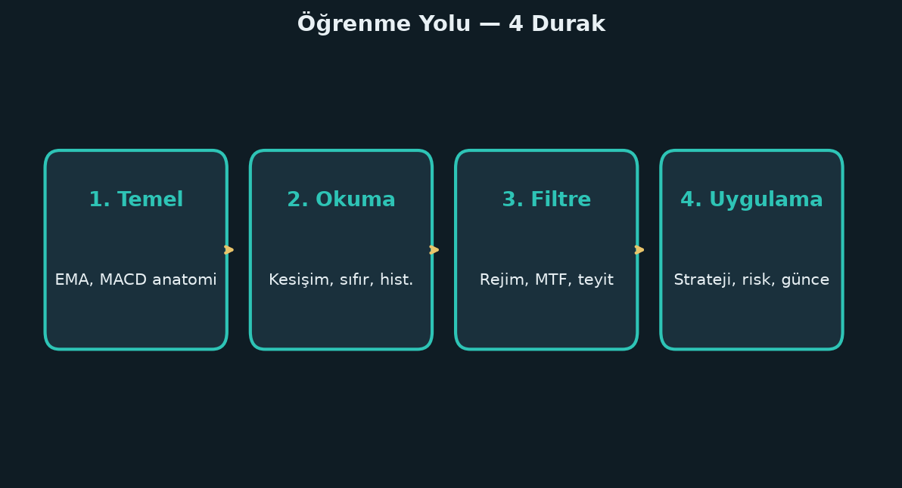
Kimler için yazıldı?
Bu kitap özellikle şu okuyucu profillerine hitap eder:
- Yeni başlayanlar: Borsa, kripto veya forex grafiklerine yeni bakan; “MACD” kelimesini duymuş ama ne işe yaradığını bilmeyenler.
- Temel seviyede teknik analiz bilenler: Destek-direnç, trend çizgisi gibi kavramlara aşina; göstergelere geçmek isteyenler.
- Kendi kendine öğrenenler: Video ve forumlardan parça parça bilgi toplamış; tutarlı ve sade bir kaynak arayanlar.
- Öğretmen ve eğitmenler: Öğrencilerine MACD’yi anlatırken kullanabilecekleri düzenli bir metin arayanlar.
İleri düzey algoritmik ticaret, istatistiksel arbitraj veya kurumsal risk modellemesi bu kitabın kapsamı dışındadır. Burada odak noktamız grafikte MACD’yi anlamak ve yorumlamaktır. Eğer Python veya Excel ile otomatik strateji yazmak istiyorsanız, bu kitap size MACD’nin mantığını verir; kodlama ise ayrı bir öğrenme yoludur.
Ön koşullar: Ne bilmeniz yeterli?
Özel bir matematik veya programlama bilgisi şart değildir. Dördüncü sınıf düzeyinde dört işlem ve basit yüzde hesabı yeterlidir. Formüllerde geçen terimleri sade Türkçe ile açıklayacağız. Grafik platformu olarak TradingView, MetaTrader veya benzeri herhangi bir aracı kullanabilirsiniz; kitap belirli bir platforma bağlı değildir.
Yine de şunları bilmeniz faydalı olur:
- Bir fiyat grafiğinin nasıl okunduğu (yatay eksen zaman, dikey eksen fiyat).
- Alım ve satım kavramının temel anlamı.
- Yatırımın risk içerdiği gerçeği — kaybetme ihtimali her zaman vardır.
Nasıl çalışmalısınız?
Her bölümü okuduktan sonra kısa bir mola verin ve grafik üzerinde gördüklerinizi arayın. Örneğin hareketli ortalama bölümünü bitirdiğinizde, sevdiğiniz bir hissenin grafiğine gidip 12 ve 26 günlük EMA çizgilerini ekleyin. MACD anatomisi bölümünden sonra MACD göstergesini aynı grafiğe yerleştirin. Bu “okuma + uygulama” döngüsü, bilgiyi kalıcı kılar.
Kitapta Alıştırma kutuları bulacaksınız. Cevapları hemen aramayın; önce kendi başınıza düşünün. Cevaplar kitabın sonundaki ekte toplanmıştır (“Cevaplar ekte”). Yanlış yapmak öğrenmenin parçasıdır; önemli olan neden yanlış olduğunu anlamaktır.
Önerilen tempo: Birinci bölümü 3–5 oturumda bitirmek çoğu okuyucu için uygundur. Her oturum 30–45 dakika sürebilir. Acele etmeyin; kavramları sindirmek zaman alır.
Terminoloji ve kısaltmalar
Kitap boyunca tutarlı terimler kullanıyoruz. İngilizce kısaltmalar teknik literatürde yaygın olduğu için hem Türkçe karşılıklarını hem de orijinal kısaltmaları veriyoruz:
| Kısaltma | İngilizce | Türkçe karşılık |
|---|---|---|
| MACD | Moving Average Convergence Divergence | Hareketli ortalama yakınsama ve ıraksama |
| SMA | Simple Moving Average | Basit hareketli ortalama |
| EMA | Exponential Moving Average | Üssel hareketli ortalama |
| Sinyal hattı | Signal line | MACD’nin EMA’sı (genelde 9 periyot) |
| Histogram | Histogram | MACD ile sinyal hattı arasındaki farkın sütun grafiği |
Önemli uyarı
Bu kitap eğitim amaçlıdır; yatırım tavsiyesi değildir. MACD veya başka bir gösterge geçmiş fiyat verisine dayanır; geçmiş performans gelecekteki sonuçların garantisi değildir. Gerçek parayla işlem yapmadan önce risk toleransınızı değerlendirin, gerekirse profesyonel danışmanlık alın ve küçük miktarlarla pratik yapın. Kitaptaki örnekler yalnızca öğretim içindir; belirli bir menkul kıymete yönlendirme amacı taşımaz.
Son bir not: MACD popüler bir göstergedir; popüler olması “her zaman doğru” anlamına gelmez. Bu kitabın amacı, göstergeyi eleştirel bir gözle kullanmanızı sağlamaktır — ne zaman işe yaradığını, ne zaman yanıltıcı olabileceğini birlikte keşfedeceğiz.
Kitabın yapısı ve semboller
Bölümler mantıksal bir sırayla ilerler; dijital okuyucularda doğrudan ilgili başlığa atlayabilirsiniz. Önemli uyarılar sarı kutularda, dikkat gerektiren noktalar turuncu uyarı kutularında vurgulanır. Formüller ayrı bloklarda gösterilir; yanlarında sayısal örnekler bulunur. Şekillerin altındaki açıklamalar, grafiği okurken nelere bakmanız gerektiğini hatırlatır.
Metin içinde İngilizce orijinal terimler parantez içinde verilir; özellikle vurgulanması gereken Türkçe karşılıklar kalın yazılır. Örneğin crossover kelimesi “kesişim” anlamında kullanılır; ilerleyen bölümlerde sık geçecektir. Sayfa sonlarındaki alıştırmalar, o bölümün özünü pekiştirmek içindir; hepsini yapmak zorunda değilsiniz, ancak en az birini kendi cümlelerinizle yanıtlamanız öğrenmeyi hızlandırır.
Öğrenme günlüğü tutmak
Deneyimli okuyucuların ortak tavsiyesi şudur: kısa bir öğrenme günlüğü tutun. Her oturum sonunda üç satır yazmanız yeterli: bugün ne öğrendim, hangi grafikte ne gördüm, ne anlamadım. Bir hafta sonra bu notlara döndüğünüzde ilerlemenizi somut olarak görürsünüz. MACD öğrenirken özellikle “bugün histogram ne yapıyordu?” sorusunu not etmek, ikinci bölüme geçtiğinizde sinyal okumayı kolaylaştırır.
Demo hesap ve kağıt üzerinde pratik
Gerçek parayla işlem yapmadan önce birçok platform demo hesap sunar. Bu kitabı okurken demo hesapta veya yalnızca izleme modunda MACD eklemeniz yeterlidir. Alım-satım yapmak şart değil; amaç gözlem yapmaktır. Kağıt üzerinde de pratik yapabilirsiniz: bir hissenin son 30 günlük kapanışını not edip basitleştirilmiş EMA hesabı denemek, formül bölümünde kafanızdaki soru işaretlerini azaltır. Hata yapmak burada ucuzdur; gerçek hesapta pahalı olabilir.
Alıştırma
- Bu kitabı okumadan önce MACD hakkında bildiğiniz üç şeyi yazın. Bölüm sonunda bu listeyi tekrar gözden geçirin; ne değişti?
- Kullandığınız grafik platformunda MACD göstergesini bulun. Henüz yorumlamayın; yalnızca nerede olduğunu not edin.
- “Eğitim amaçlıdır, yatırım tavsiyesi değildir” uyarısını kendi cümlelerinizle özetleyin (2–3 cümle).
Cevaplar ekte.
Teknik analize yumuşak giriş
Teknik analiz, fiyat ve hacim verilerini inceleyerek gelecekteki fiyat hareketleri hakkında olasılıksal çıkarımlar yapma çalışmasıdır. Temel analiz şirket bilançolarına, ekonomik verilere ve sektör haberlerine odaklanırken; teknik analiz çoğunlukla grafiğe bakar. İki yaklaşım birbirinin düşmanı değildir; birçok yatırımcı her ikisini de bir arada kullanır. Bu kitapta teknik analizin bir köşesini — MACD göstergesini — derinlemesine ele alacağız; ama önce birkaç temel taşı yerine oturtalım.
Fiyat nedir ve grafik ne anlatır?
Bir hisse senedi, döviz çifti veya kripto paranın “fiyatı”, o anda alıcı ile satıcının buluştuğu değerdir. Grafikte her mum (candlestick) veya çizgi noktası, belirli bir zaman dilimindeki açılış, kapanış, en yüksek ve en düşük fiyatları özetler. Mum grafiği okumayı bilmek şart değil; çizgi grafik de MACD için yeterlidir. Önemli olan şudur: grafik, piyasanın kolektif kararlarının görsel bir kaydıdır.
Fiyat yükselirken grafik genelde yukarı gider; düşerken aşağı. Ancak fiyat düz bir çizgi halinde ilerlemez. Dalgalanır, duraklar, geri çekilir, tekrar yükselir. Teknik analiz bu dalgalanmaların tekrar eden örüntüler taşıyıp taşımadığını araştırır. MACD de bu dalgalanmaları sayısal bir dille özetlemeye çalışan araçlardan biridir.
Gösterge (indikatör) nedir?
Gösterge, fiyat verisinden türetilen ve grafiğin altında veya üzerinde çizilen matematiksel bir ölçümdür. Göstergeler fiyatı tahmin etmez; fiyatın nasıl davrandığına dair ek bilgi sunar. Örneğin:
- Trend göstergeleri: Fiyatın yönünü ve momentumunu ölçer (MACD bu gruba girer).
- Oscilatörler: Belirli bir bant içinde salınan değerler üretir (RSI, Stokastik gibi).
- Hacim göstergeleri: İşlem miktarını analiz eder.
MACD hem trend hem momentum özellikleri taşır; bu yüzden yeni başlayanlar için iyi bir başlangıç göstergesidir — ama tek başına “kutsal kase” değildir.
Teknik analizin sınırları
Teknik analiz şu varsayıma dayanır: fiyat hareketleri belirli bilgileri yansıtır ve bazı örüntüler tekrarlanabilir. Bu varsayım her zaman geçerli olmayabilir. Beklenmedik haberler, likidite krizleri veya manipülasyon grafikte “mantıksız” görünen hareketlere yol açabilir. Bu nedenle göstergeleri mutlak doğru olarak değil, olasılık ve bağlam çerçevesinde okumak gerekir.
Analogi: Göstergeleri hava durumu tahmini gibi düşünün. Barometre basıncı düşüyorsa yağmur ihtimali artar; ama “kesin yağacak” demek doğru olmaz. MACD de benzer şekilde “momentum zayıflıyor olabilir” der; “yarın mutlaka düşer” demez.
MACD’nin teknik analizdeki yeri
MACD, 1970’lerin sonunda Gerald Appel tarafından geliştirilen ve günümüzde neredeyse her grafik platformunda bulunan bir momentum-trend göstergesidir. İki hareketli ortalamanın ilişkisini ölçer; sonuçları çizgi, sinyal hattı ve histogram olarak sunar. Diğer göstergelere göre avantajları:
- Görsel olarak anlaşılır: kesişmeler ve histogram renk değişimleri net sinyaller verir.
- Çoğu piyasada (hisse, forex, kripto) benzer şekilde çalışır.
- Varsayılan ayarlar (12, 26, 9) geniş kitle tarafından kullanıldığı için “kendini gerçekleştiren” etki yaratabilir — çok sayıda trader aynı seviyelere bakar.
Dezavantajları da vardır: yatay (yatay trend) piyasalarda sık yanlış sinyal üretebilir; gecikmeli (lagging) bir göstergedir, yani fiyat hareketinden sonra tepki verir. Bu kitabın ilerleyen bölümlerinde bu sınırları nasıl yöneteceğinizi de konuşacağız.
Grafik okuma alışkanlığı
MACD’ye geçmeden önce basit bir alışkanlık edinin: grafiğe bakarken üç soru sorun.
- Trend ne yönde? Yükseliş, düşüş veya yatay mı?
- Volatilite yüksek mi? Mumlar büyük mü, küçük mü?
- Hacim destekliyor mu? (Hacim verisi varsa) fiyat hareketi işlem hacmiyle uyumlu mu?
MACD bu soruların cevabını tek başına vermez; ama özellikle birinci soruya — trend ve momentum — güçlü katkı sağlar.
Zaman dilimi seçimi
Teknik analizde “grafik” derken hangi zaman diliminden bahsettiğimiz kritiktir. Aynı enstrümanın günlük grafiği ile beş dakikalık grafiği tamamen farklı hikâyeler anlatabilir. MACD her zaman diliminde hesaplanabilir; ancak sinyallerin anlamı dilime göre değişir. Günlük grafikteki bir kesişim haftalarca etkili olabilecek orta vadeli bir değişimi işaret edebilirken, bir dakikalık grafikteki kesişim çok kısa ömürlü gürültü olabilir.
Bu kitapta öncelikle günlük (D1) ve dört saatlik (H4) grafiklere odaklanıyoruz. Yeni başlayanlar için bu dilimler hem yeterli veri sunar hem de aşırı gürültüden kaçınmaya yardımcı olur. İşlem yapmıyorsanız bile bu dilimlerde MACD’yi izlemek, öğrenme eğrisini yumuşatır. Daha sonra kendi tarzınıza göre 15 dakika veya haftalık grafiklere genişletebilirsiniz.
Mum grafiğine kısa bakış
MACD mum rengine bakmaz; yalnızca kapanış fiyatını kullanır. Yine de mum grafiğini okumak faydalıdır. Yeşil mum kapanışın açılıştan yüksek olduğunu, kırmızı mum düşüş gününü gösterir. Uzun fitiller o gün içinde fiyatın nereye kadar gidip geri döndüğünü anlatır. MACD paneline bakarken üstteki mum yapısıyla birlikte düşünmek, sinyalin fiyat onayı aramanıza yardım eder.
Temel analiz ile birlikte düşünmek
MACD bir şirketin kârlılığını veya borç yükünü ölçmez. Kötü bilançolu bir şirketin hissesi teknik olarak güçlü MACD verebilir; tersi de mümkündür. Uzun vadeli yatırımcılar çoğu zaman temel analize ağırlık verir, MACD’yi zamanlama aracı olarak kullanır. Kısa vadeli trader’lar ise çoğunlukla grafiğe odaklanır. Hangi kampa mensupsanız meseleniz değil; önemli olan MACD’nin rolünü abartmamaktır.
Mini örnek: Fiyat hareketi ve “ne zaman” sorusu
Diyelim ki bir hisse son beş günde 100 TL’den 110 TL’ye çıktı. “Hâlâ alınır mı?” sorusunun cevabı yalnızca fiyata bakarak verilemez. Teknik analist şunları sorar: Bu yükseliş hızlandı mı yoksa yavaşladı mı? Önceki direnç seviyesine yakın mıyız? Göstergeler uyumsuzluk (divergence) gösteriyor mu? MACD, bu soruların en azından momentum kısmına ışık tutar.
Sayısal bir sezgi: 100 → 105 → 108 → 110 şeklinde yavaşlayan bir yükselişte, MACD çizgisi hâlâ yukarı olsa bile eğimi azalabilir. Bu, momentumun zayıfladığına işaret edebilir — henüz satış sinyali değil, ama dikkat uyarısı. Aynı hisse 100 → 108 → 115 → 125 gibi hızlanan bir yapıda MACD eğimi dikleşir; histogram sütunları uzar. Fiyat grafiğine bakmadan yalnızca MACD paneline baktığınızda bile “hareket hızlanıyor mu, yavaşlıyor mu?” sorusuna kısmi cevap alırsınız; tam resim için her zaman fiyatı birincil tutun.
Alıştırma
- Teknik analiz ile temel analiz arasındaki farkı bir cümleyle ifade edin.
- Bir göstergenin “fiyatı tahmin etmediğini” kendi örneğinizle açıklayın.
- MACD’nin “gecikmeli” olması ne anlama gelir? Günlük grafikte bunun pratik sonucu nedir?
Cevaplar ekte.
Hareketli ortalamalar: SMA, EMA ve MACD’nin tercihi
MACD’yi anlamanın en sağlam yolu, önce hareketli ortalamayı anlamaktan geçer. Hareketli ortalama (moving average), belirli bir periyottaki fiyatların ortalamasını alır ve zamanla bir çizgi oluşturur. Bu çizgi, fiyatın “gürültüsünü” yumuşatarak genel eğilimi gösterir. MACD tam olarak iki farklı periyottaki üssel hareketli ortalamaların (EMA) farkına dayanır. Bu bölümde basit (SMA) ve üssel (EMA) ortalamaları derinlemesine karşılaştıracağız.
Basit hareketli ortalama (SMA)
SMA, seçilen periyottaki kapanış fiyatlarının aritmetik ortalamasıdır. Örneğin 5 günlük SMA için son beş günün kapanış fiyatlarını toplar, beşe böler. Her yeni gün, en eski gün çıkarılır ve yeni gün eklenir — bu yüzden ortalama “hareket eder”.
Beş günlük kapanış fiyatları: 10, 12, 11, 13, 14 TL olsun.
Ertesi gün kapanış 15 TL olursa, en eski gün (10 TL) düşer:
SMA’nın özelliği: her gün eşit ağırlığa sahiptir. Dünkü fiyat ile beş gün önceki fiyat ortalamaya aynı oranda katkı yapar. Bu adil görünse de, teknik analistler çoğu zaman “en son fiyat daha önemli” der; işte burada EMA devreye girer. Örneğin bir hisse aylarca 100 TL civarında dolaşıp bir haftada 120 TL’ye fırlarsa, 20 günlük SMA hâlâ geçmişin ağır basmasıyla 105 civarında kalabilir; 20 günlük EMA ise belki 115’e yaklaşır. Yatırımcı “fiyat SMA’nın çok üzerinde, aşırı mı?” diye düşünürken, MACD tarafında EMA tabanlı fark zaten momentumu yansıtmış olur.
Üssel hareketli ortalama (EMA)
EMA, son fiyatlara daha fazla ağırlık veren bir ortalama türüdür. Yeni kapanış, ortalamayı SMA’ya göre daha hızlı etkiler. Formül biraz daha karmaşıktır; çarpan (multiplier) kavramı kullanılır:
12 periyotluk EMA için çarpan = 2 ÷ 13 ≈ 0,1538. Her yeni gün:
İlk EMA değeri genelde SMA ile başlatılır; sonraki günler üstteki formülle güncellenir.
SMA ve EMA: Sayısal karşılaştırma
Aynı fiyat dizisinde SMA ve EMA’nın nasıl ayrıştığını görelim. Kapanışlar: 100, 102, 101, 105, 108 (5 gün).
SMA5: (100 + 102 + 101 + 105 + 108) ÷ 5 = 516 ÷ 5 = 103,2
EMA5: Çarpan = 2 ÷ 6 ≈ 0,333. İlk gün EMA ≈ SMA ile başlar. Basitleştirilmiş hesap için son gün EMA’yı yaklaşık 105,5 kabul edebiliriz (tam seri hesaplandığında son değer SMA’dan yüksek çıkar çünkü son günler güçlü yükseliş içerir).
Fiyat hızla yükseldiğinde EMA, SMA’nın üzerinde kalır ve fiyata daha yakın seyreder. Fiyat düştüğünde EMA yine daha hızlı tepki verir. MACD’nin “hızlı” ve “yavaş” hatları EMA olduğu için, momentum değişimlerini SMA tabanlı bir göstergeden daha erken yakalar — ama bu erkenlik bazen yanlış alarm da üretebilir.
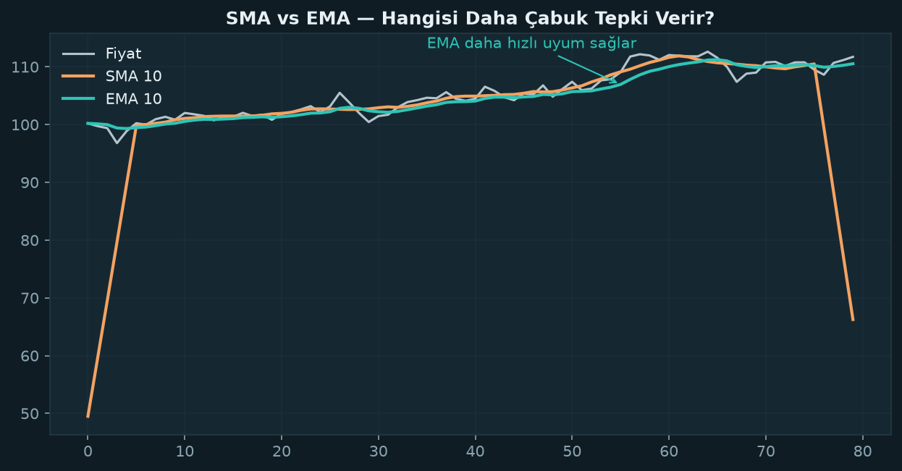
Neden MACD EMA kullanır?
MACD’nin yaratıcısı Gerald Appel, kısa vadeli momentum değişimlerini yakalamak istedi. İki SMA farkı alınsaydı gösterge daha yavaş ve daha “yumuşak” olurdu. İki EMA farkı ise:
- Kısa EMA (12) ile uzun EMA (26) arasındaki mesafeyi daha canlı ölçer.
- Trend dönüşlerinde kesişmeler genelde daha erken görünür.
- Sinyal hattı da 9 periyotluk EMA olduğu için tüm yapı tutarlı bir “üssel aile” içinde kalır.
Bu bir “doğruluk” meselesi değil, tasarım tercihidir. Bazı varyantlar MACD’yi SMA ile hesaplar; standart ve en yaygın olan EMA tabanlı MACD’dir. Bu kitapta standart tanımı kullanıyoruz. İleride “MACD-SMA” veya “PPO” (yüzde fiyat osilatörü) gibi türevlerle karşılaşırsanız, hepsinin ortak fikrin iki ortalama ilişkisini ölçmek olduğunu bilmeniz yeterlidir; detaylar farklı olsa da sezgi aynı kalır.
Periyot seçimi: 12 ve 26 nereden geliyor?
12 ve 26, yaklaşık iki hafta ve bir ay işlem günü sayısına karşılık gelir (eskiden haftada 6 işlem günü vardı: 2×6=12, 4×6≈26). Günümüzde haftada 5 işlem günü olsa da bu periyotlar evrensel standart haline gelmiştir. Değiştirmek mümkündür; ancak değiştirince gösterge davranışı ve diğer trader’larla “ortak dil” kaybolabilir. Yeni başlayanlara önce varsayılanları öğrenmek, sonra denemek önerilir.
Hareketli ortalama tuzakları
Hareketli ortalamalar trendli piyasalarda iyi çalışır; yatay piyasada fiyat ortalamanın etrafında gidip gelirken sürekli yanlış kırılım sinyalleri verebilir. MACD de aynı sorunu paylaşır. Ayrıca:
- Çok kısa periyot → çok fazla gürültü.
- Çok uzun periyot → çok fazla gecikme.
- Tek başına ortalama kesişimi → risk yönetimi olmadan yetersiz.
“Altın kesişim” (golden cross) ve “ölüm kesişimi” (death cross) gibi popüler terimler 50/200 SMA için sık kullanılır. MACD’nin 12/26 kesişimi farklı bir ölçektir; aynı isimleri karıştırmayın.
Elle hesap alıştırması: 3 günlük EMA
Kapanışlar: 20, 22, 21. Çarpan (3 gün) = 2 ÷ 4 = 0,5.
- Gün 1: EMA ≈ 20 (başlangıç).
- Gün 2: EMA = 22×0,5 + 20×0,5 = 11 + 10 = 21.
- Gün 3: EMA = 21×0,5 + 21×0,5 = 21.
Fiyat 22’ye sıçrayınca EMA hemen 21’e yükseldi; SMA ise (20+22+21)/3 ≈ 21,0 olurdu — burada yakın, ama daha uzun serilerde fark belirginleşir.
Daha uzun seri: SMA ve EMA ayrışması
On günlük kapanış serisini düşünelim: fiyat 100’den başlayıp her gün yaklaşık 1 TL artıyor, sonra son üç günde hızlanarak 112, 115, 118 oluyor. 10 günlük SMA son günde tüm günlerin eşit ağırlıklı ortalamasıdır; 10 günlük EMA ise son günlerdeki sıçramayı daha fazla yansıtır. Bu senaryoda EMA, SMA’nın üzerinde ve fiyata daha yakın seyreder. MACD’nin hızlı hattı 12 EMA olduğunda, tam da bu son günlerin ağırlığı sayesinde momentum artışını SMA tabanlı bir farktan önce hissetmeye başlarsınız.
Ters senaryoda fiyat uzun süre yatay seyredip aniden düşerse EMA yine önce tepki verir. MACD çizgisi negatife doğru hızla kayar. Bu davranışı grafikte bir kez görmek, on sayfa teoriden daha çok şey öğretir.
Hareketli ortalama periyodu ve “gün” kavramı
“12 günlük EMA” ifadesi günlük grafikte son 12 kapanışı kullanır. Saatlik grafikte aynı 12 periyot son 12 saatlik kapanış demektir. Periyot sayısı sabit kalır, zaman birimi grafiğe göre değişir. Bu yüzden 12-26-9 üçlüsünü başka zaman dilimine taşırken aynı süreyi mi korumalıyım diye düşünmek gerekir. Bu kitabın üçüncü bölümünde zaman dilimi uyarlama konusuna döneceğiz; şimdilik günlük grafik varsayılanımız olsun.
MACD öncesi EMA alıştırması
MACD’ye geçmeden önce grafiğinize yalnızca 12 ve 26 EMA ekleyin. Fiyat 12 EMA’nın üzerindeyken kısa vadeli güçlü, altındayken zayıf kabul edilir. 26 EMA daha uzun vadeli trend filtresi gibidir. İki çizgi birbirine yaklaştığında MACD sıfıra yaklaşır; uzaklaştığında MACD büyür. Bu gözlem, formül bölümündeki denklemleri okuduğunuzda zihninizde canlanacaktır.
Alıştırma
- Periyot 10 olan EMA’nın çarpanını hesaplayın.
- Kapanışlar 50, 52, 54 iken 3 günlük SMA’yı bulun.
- MACD’nin EMA yerine SMA kullanması durumunda gösterge daha hızlı mı yoksa daha yavaş mı tepki verirdi? Neden?
Cevaplar ekte.
MACD nedir? İsim, tarihçe ve yakınsama–ıraksama
MACD, İngilizce Moving Average Convergence Divergence ifadesinin kısaltmasıdır. Türkçede “hareketli ortalama yakınsama ve ıraksama” olarak çevrilir. Bu uzun isim aslında göstergenin ne yaptığını anlatır: iki hareketli ortalamanın birbirine yaklaşması (yakınsama) veya uzaklaşması (ıraksama) ölçülür. Basitçe söylemek gerekirse MACD, kısa vadeli momentum ile uzun vadeli momentum arasındaki farkı izler.
Kısa tarihçe: Gerald Appel
MACD, 1970’lerin sonunda Amerikalı teknik analist ve yazar Gerald Appel tarafından geliştirildi. Appel, hem hisse senedi hem de emtia piyasalarında çalışıyordu; MACD’yi önce emtialar için, sonra hisseler için uyarladı. 1979 civarında kitap ve makalelerle yaygınlaştı. O dönemde bilgisayarlı grafikler sınırlıydı; trader’lar göstergeleri hesap makinesi ve tablo kağıdıyla takip ederdi. MACD’nin popülaritesi, karmaşık görünmesine rağmen hesaplanmasının net ve tekrarlanabilir olmasıyla arttı. Bugün bir tıkla eklenen gösterge, o zamanlar saatler süren emek ürünüydü — bu tarihsel bağlam, MACD’ye saygıyla yaklaşmayı hatırlatır.
Appel’in orijinal amacı, trendin yönünü ve momentumdaki değişimi tek bir panelde göstermekti. Yıllar içinde 9 periyotluk sinyal hattı ve histogram eklentileri standart hale geldi — bunlar çoğu zaman MACD’nin parçası diye anılır, oysa tarihsel olarak adım adım zenginleşmiş bir yapıdır. Günümüzde Appel’in adı hâlâ MACD ile anılır; bu da göstergenin kısa bir moda olmadığını, onlarca yıl süren kullanım ve testten geçtiğini gösterir.
Yakınsama ve ıraksama ne demek?
Yakınsama (convergence): İki hareketli ortalama birbirine yaklaşır. MACD bağlamında bu, kısa EMA ile uzun EMA arasındaki farkın küçülmesi demektir. Momentum zayıflıyor veya trend yavaşlıyor olabilir.
Iraksama (divergence): İki ortalama birbirinden uzaklaşır; MACD çizgisi sıfır çizgisinden uzaklaşır veya mutlak değeri artar. Momentum güçleniyor olabilir.
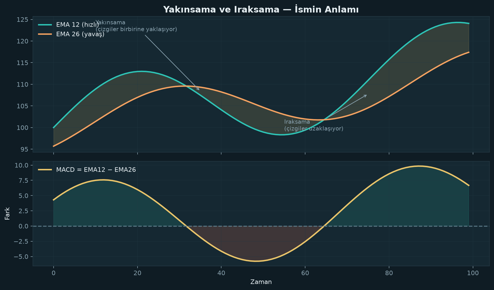
Dikkat: “Iraksama” kelimesi MACD isminde geçer, ama pratikte trader’lar çoğu zaman uyumsuzluk (divergence) için de “ıraksama” terimini kullanır — fiyat ile MACD’nin zıt yönde hareket etmesi. Bu kitapta karışıklığı önlemek için:
- Yakınsama / ıraksama (MACD ismi): İki EMA arasındaki mesafe.
- Uyumsuzluk: Fiyat ile MACD’nin yönünün ayrışması (ilerleyen bölümlerde).
MACD tek cümleyle
12 periyotluk EMA ile 26 periyotluk EMA arasındaki farkı çizer; bu farkın 9 periyotluk EMA’sını sinyal hattı olarak ekler; ikisi arasındaki farkı da histogramda gösterir.
Bu tanım şimdilik soyut gelebilir; sonraki iki bölümde her parçayı ayrı ayrı açacağız.
MACD ne değildir?
Yaygın yanlış anlamaları netleştirelim:
| Yanlış | Doğru |
|---|---|
| MACD fiyatın yerine geçer. | MACD fiyattan türetilir; fiyat her zaman birincil veridir. |
| MACD her al sinyalinde kazandırır. | Sinyaller olasılıksaldır; yanlış sinyaller sıktır. |
| MACD sadece hisse senedinde çalışır. | Forex, emtia, kripto ve endekslerde de kullanılır. |
| MACD tek başına yeterlidir. | Bağlam, trend filtresi ve risk yönetimi gerekir. |
Neden hâlâ popüler?
Onlarca yeni gösterge çıkmış olmasına rağmen MACD, eğitim materyallerinde ve pratikte sık referans alınır. Bunun nedenleri arasında tarihsel güven, sade yapı, çoklu zaman dilimlerine uyum ve “herkesin bildiği” ortak seviyeler sayılabilir. Popülerlik avantajdır; aynı histogram dönüşümünde çok sayıda emir tetiklenebilir. Dezavantajı da aynı nedenden kaynaklanır: kalabalık trade bazen sinyali erken fiyatlar.
MACD ve piyasa psikolojisi
MACD doğrudan korku veya açgözlülük ölçmez; ama momentum değişimi çoğu zaman kitlesel davranışın sonucudur. Yükseliş hızlandıkça kısa EMA uzun EMA’dan hızla uzaklaşır — MACD büyür. Panik satışta tersi olur. Göstergeyi okurken “grafikteki çizgilerin arkasında insan kararları var” diye düşünmek, aşırı mekanik yorumu biraz yumuşatır.
MACD’nin diğer göstergelerle ilişkisi
MACD tek başına bir ekosistem değildir. RSI aşırı alım–satım bölgesini ölçer; MACD trend ve momentum farkını. Bollinger bantları volatiliteyi gösterir; MACD bant içindeki yönü teyit edebilir. Bu kitap MACD’ye odaklandığı için diğer göstergeleri derinlemesine işlemiyoruz; ancak ileride MACD sinyalini destek ve direnç seviyeleriyle birlikte okumanın neden önemli olduğunu göreceksiniz. Amaç en çok göstergeyi ekrana sığdırmak değil; bir göstergeyi gerçekten bilmektir.
Appel sonrası gelişmeler
Gerald Appel’den sonra MACD’ye çeşitli varyasyonlar eklendi: farklı periyotlar, histogram renk kuralları, çift MACD panelleri, hacim ağırlıklı türevler. Bunların çoğu orijinal fikrin üzerine inşa edilmiştir. Yatırım bankaları ve perakende trader’lar aynı göstergeyi farklı amaçlarla kullanır; biri trend filtresi, diğeri kısa vadeli giriş zamanlaması. Standart 12-26-9 tanımını bilmeniz, bu varyasyonları daha sonra değerlendirmenizi kolaylaştırır.
Yakınsama örneği: trend yorgunluğu
Fiyat yeni bir zirve yapıyor ama MACD önceki zirvenin altında kalıyorsa — buna uyumsuzluk denir — momentum zayıflıyor olabilir. Tam tersi, fiyat dip yaparken MACD daha yüksek dip yapıyorsa yükseliş momentumu güçleniyor olabilir. İsimdeki ıraksama kelimesi burada farklı bir bağlamda kullanılır; karışıklığı azaltmak için uyumsuzluk bölümünde ayrıntılı ele alacağız. Şimdilik bilin: MACD yalnızca çizgi kesişimi değil, fiyatla karşılaştırmalı okuma da sunar.
Alıştırma
- MACD kısaltmasının açılımını Türkçe ve İngilizce yazın.
- Yakınsama ile uyumsuzluk (divergence) arasındaki farkı kendi cümlelerinizle açıklayın.
- Gerald Appel MACD’yi hangi amaçla geliştirmişti?
Cevaplar ekte.
MACD anatomisi: Üç parça detaylı inceleme
Standart MACD göstergesi üç görsel bileşenden oluşur: MACD çizgisi, sinyal hattı ve histogram. Çoğu platformda gösterge fiyat grafiğinin altında ayrı bir panelde yer alır. Bu bölümde her bir parçanın ne ölçtüğünü, nasıl yorumlandığını ve birbirleriyle ilişkisini adım adım işleyeceğiz.
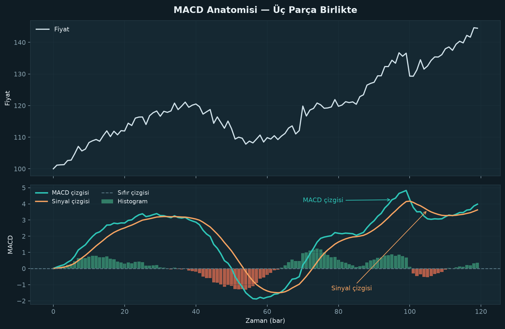
1. MACD çizgisi (MACD line)
MACD çizgisi, göstergenin kalbidir. Hesabı:
Sonuç pozitifse kısa vadeli ortalama uzun vadelinin üzerindedir; bu genelde yükseliş momentumu ile ilişkilendirilir. Negatifse kısa ortalama altta demektir — düşüş momentumu. Sıfıra yakın değerler, iki ortalamanın birbirine yakın olduğu, trendin zayıf veya dönüşüm aşamasında olabileceği anlamına gelir.
MACD çizgisinin eğimi de önemlidir: yukarı eğim momentum artışı, aşağı eğim momentum kaybı. Sadece pozitif/negatif bakmak yeterli değildir; çizgi pozitif olsa bile aşağı dönmeye başlayabilir — bu erken uyarı niteliğindedir. Aynı şekilde MACD derin negatifteyken eğim yukarı dönüyorsa, henüz sıfır üstüne çıkılmamış olsa bile “satış baskısı yavaşlıyor” mesajı taşınabilir. Bu tür ince okuma, ikinci bölümde sinyal filtreleriyle birleştiğinde anlam kazanır.
2. Sinyal hattı (signal line)
Sinyal hattı, MACD çizgisinin 9 periyotluk EMA’sıdır. Amacı MACD’deki kısa vadeli dalgalanmaları yumuşatmak ve “kesişim” sinyalleri üretmektir.
Klasik yorum:
- MACD çizgisi sinyal hattını yukarı keserse → alım sinyali (bullish crossover).
- MACD çizgisi sinyal hattını aşağı keserse → satım sinyali (bearish crossover).
Bu kesişimler trendli piyasalarda daha anlamlıdır. Yatay piyasada MACD ve sinyal hattı birbirine çok yakın salınır; sık kesişim = sık yanlış sinyal riski.
3. Histogram
Histogram, MACD çizgisi ile sinyal hattı arasındaki farkın sütun grafiği olarak çizilmesidir:
Histogram pozitifse MACD sinyalin üzerinde; negatifse altında. Sütunlar büyüdükçe iki çizgi arasındaki mesafe artıyor demektir — momentum güçleniyor olabilir. Sütunlar küçülürken (ama henüz negatife geçmeden) momentum zayıflıyor olabilir; bu bazen kesişimden önce görülür.
Birçok platform histogramı renklendirir: yeşil (veya mavi) pozitif, kırmızı negatif. Renk değişimi — pozitiften negatife veya tersi — kesişim anına yakın görsel ipucu verir.
Sıfır çizgisi (zero line)
Yatay sıfır seviyesi, MACD çizgisinin pozitif ile negatif arasında geçiş yaptığı yerdir. MACD’nin sıfırı yukarı kesmesi, 12 EMA’nın 26 EMA’nın üzerine çıktığı anlamına gelir — orta vadeli “yükseliş rejimi” sinyali olarak yorumlanır. Aşağı kesmesi düşüş rejimi. Sıfır çizgisi kesişimleri sinyal hattı kesişimlerinden daha geç ama genelde daha “ağır” kabul edilir.
Üç parçanın birlikte okunması
Düşünün: MACD çizgisi “ham momentum farkı”, sinyal hattı “yumuşatılmış eşik”, histogram “ikisi arasındaki gerilim”dir.
- Fiyat güçlü yükseliyor → MACD pozitif ve büyüyor → histogram sütunları uzuyor.
- Yükseliş yavaşlıyor → MACD hâlâ pozitif ama eğim düzleşiyor → histogram küçülüyor.
- MACD sinyali aşağı kesiyor → histogram negatife geçiyor → kısa vadeli satış baskısı sinyali.
- MACD sıfırın altında ama yukarı dönüyor → histogram negatiften küçülüyor → potansiyel dip dönüşü izlenmeli.
Panel ölçeği ve karşılaştırma
MACD değerleri fiyat birimi değildir; hisse 10 TL veya 1000 TL olsa da MACD ölçeği farklıdır. Bu yüzden iki farklı hissenin MACD değerlerini doğrudan karşılaştırmak anlamsızdır. Aynı enstrümanda zaman içindeki değişim ve sıfır çizgisine göre konum önemlidir.
Platform farklılıkları
TradingView, MetaTrader, Thinkorswim gibi platformlarda renkler ve varsayılan kalınlıklar değişebilir; mantık aynıdır. Bazı platformlarda MACD çizgisi “MACD”, bazen “Value” diye etiketlenir. Sinyal hattı “Signal” olarak geçer. Ayarlarda “12, 26, 9” görüyorsanız standart Appel MACD’sindesiniz demektir.
Mini senaryo: Günlük grafikte bir hafta
Pazartesi: MACD −0,5, sinyal −0,3, histogram −0,2 (negatif bölge, MACD sinyalin altında).
Çarşamba: MACD −0,1, sinyal −0,2, histogram +0,1 (MACD sinyali yukarı kesti — histogram pozitife döndü).
Cuma: MACD +0,2, sinyal 0, histogram +0,2 (sıfır çizgisinin hemen üstü — rejim değişimi ihtimali).
Bu senaryoda çarşamba kesişimi erken uyarı, cuma sıfır üstü “trend onayı” arayışı olabilir. Tek başına alım emri değil; örnek okuma zinciri.
Histogram bazen MACD çizgisinden daha “gürültülü” görünür çünkü fark alınır. Çok kısa vadeli grafiklerde (1 dakika gibi) üç parça da hızlı salınır; bu kitapta önce günlük ve 4 saatlik gibi orta vadeli düşünmeyi öneriyoruz.
Üç parçanın zaman içindeki dansı
Güçlü bir yükseliş trendinde tipik sıra şöyledir: önce MACD çizgisi sıfırın altından yukarı çıkar ve sinyal hattını keser; histogram pozitife döner ve büyür; MACD sıfır çizgisini yukarı keser; histogram zirve yapar ve yavaşça küçülmeye başlar; MACD sinyali aşağı keser; histogram negatife geçer. Trend henüz bitmemiş olsa bile kısa vadeli düzeltme uyarısı alınmış olur. Bu diziyi bir kez canlı grafikte izlemek, ikinci bölümdeki sinyal kurallarını ezberlemekten daha kalıcıdır.
Negatif bölgede okuma
MACD negatifken kötü demek doğru değildir; düşüş trendinde veya düzeltme aşamasında olmak normaldir. Negatif bölgede MACD’nin sinyali yukarı kesmesi, düşüş momentumunun kısa süreliğine zayıfladığını gösterebilir — bu bir karşı trend tepkisinin habercisi olabilir, ama ana trend hâlâ aşağı olabilir. Ana trend yönünde işlem arayanlar, negatif bölgedeki yukarı kesişimleri daha küçük ölçekte değerlendirir; trend yönüne göre filtre kullanmak ilerleyen bölümlerin konusudur.
Görsel hiyerarşi: neye önce bakılır?
Pratikte birçok okuyucu şu sırayı benimser: önce fiyat ve genel trend, sonra MACD’nin sıfır çizgisine göre konumu, ardından sinyal kesişimi, en son histogram inceliği. Histogram erken uyarı verebilir ama tek başına işlem nedeni sayılmamalıdır. Bu hiyerarşi, panik halinde her sinyale atlamanızı önler.
Alıştırma
- MACD çizgisi +0,8, sinyal +0,5 iken histogram değeri nedir?
- Histogram küçülüyor ama hâlâ pozitif — bu ne anlama gelebilir?
- Sıfır çizgisi kesişimi ile sinyal hattı kesişiminden hangisi genelde daha geç oluşur? Neden?
Cevaplar ekte.
Formül ve elle anlaşılır hesap sezgisi
Bu bölümde MACD’nin nasıl hesaplandığını adım adım göreceğiz. Günlük hayatta her gün elle hesap yapmanız gerekmez; grafik yazılımı bunu otomatik yapar. Yine de formülü anlamak, göstergenin neden geciktiğini, neden bazen sinyal vermediğini ve parametre değiştirince ne olacağını kavramanızı sağlar. Birçok başarısız strateji, göstergenin ne ölçtüğünü bilmeden kurallar listesine dayanır; siz önce ölçümü, sonra kuralı öğrenin.
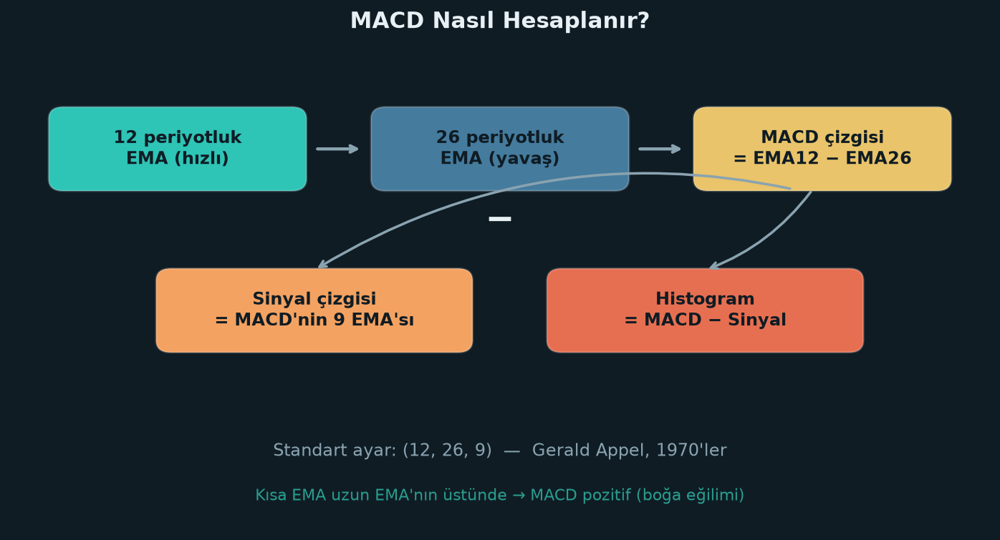
Standart parametreler: 12, 26, 9
- 12: Hızlı EMA periyodu.
- 26: Yavaş EMA periyodu.
- 9: Sinyal hattı EMA periyodu.
Bu üç sayı “Appel MACD”nin evrensel varsayılanıdır. Değiştirmek isterseniz (örneğin 8, 17, 9) yeni bir gösterge profili oluşturursunuz; sonuçları karşılaştırırken aynı parametreleri kullanmalısınız.
Hesap adımları (özet)
- Her kapanış fiyatı için EMA12 hesapla.
- Aynı seri için EMA26 hesapla.
- MACDt = EMA12,t − EMA26,t
- MACD serisinin üzerinde 9 periyotluk EMA al → sinyal hattı.
- Histogramt = MACDt − Sinyalt
EMA hesabı için önceki bölümdeki formül geçerlidir. İlk 26 gün için MACD tam anlamıyla “oturmamış” olabilir; pratikte trader’lar genelde yeterli geçmiş veri olduğunda (50–100 mum) okumaya başlar.
Basitleştirilmiş sayısal örnek
Gerçek piyasada onlarca ondalık basamak vardır; öğrenme için yuvarlak sayılar kullanalım. Diyelim ki belirli bir gün sonunda:
- EMA12 = 48,50 TL
- EMA26 = 47,00 TL
Önceki günlerin MACD değerleri: 1,20; 1,35; 1,42; 1,48; 1,50 olsun. Sinyal hattı bu serinin 9 EMA’sıdır — tam hesap uzundur; basitleştirilmiş olarak sinyal ≈ 1,30 diyelim.
MACD sinyalin üzerinde, histogram pozitif — kısa vadeli momentum, yumuşatılmış eşiğin üstünde. Ertesi gün MACD 1,45’e düşerse (fiyat hafif geri çekilmiş olabilir), histogram küçülür; kesişim henüz olmasa da momentum zayıflama izlenir.
EMA çarpanları tablosu
| Periyot | Çarpan = 2 ÷ (n + 1) | MACD’deki rol |
|---|---|---|
| 12 | 2 ÷ 13 ≈ 0,1538 | Hızlı EMA — kısa vadeli fiyat |
| 26 | 2 ÷ 27 ≈ 0,0741 | Yavaş EMA — uzun vadeli fiyat |
| 9 | 2 ÷ 10 = 0,2000 | Sinyal hattı — MACD’nin yumuşatıcısı |
26 periyotlu EMA’nın çarpanı daha küçük olduğu için daha yavaş hareket eder; 12 ile arasındaki fark MACD’yi oluşturur.
Neden fark alınıyor?
Tek bir EMA çizgisi fiyatı takip eder; iki EMA farkı ise “kısa vadeli ortalama, uzun vadeliye göre ne kadar önde?” sorusunu yanıtlar. Fark büyüdükçe trend hızlanmış demektir. Fark küçüldükçe trend yoruluyor olabilir. Bu, MACD ismindeki yakınsama ve ıraksamanın matematiksel köküdür.
Elle hesap: mini veri seti
Beş günlük kapanış: 100, 102, 104, 103, 105. Uzun seri olmadan tam MACD hesaplanamaz; ama sezgi için 12 ve 26 yerine 3 ve 5 günlük EMA ile oyuncak örnek yapalım (oranlar farklı, mantık aynı).
3 günlük EMA (çarpan 0,5) son gün ≈ 104; 5 günlük SMA başlangıç için ≈ 102,8 (tam EMA26 yerine basit ortalama). Oyuncak MACD ≈ 104 − 102,8 = 1,2 (pozitif, kısa ortalama uzunun üstünde).
Bu rakamlar gerçek 12-26 MACD değil; ama “kısa EMA > uzun EMA → pozitif MACD” ilişkisini pekiştirir.
Hesap sezgisi: gecikme nereden gelir?
MACD üç katmanlı EMA içerir (12, 26 ve sinyal için 9). Her EMA son fiyatı bir derece yumuşatır. Bu yüzden MACD, fiyatın zirvesinden veya dibinden genelde sonra döner. Bu kusur değil; tasarım gereği gürültüyü filtreleme bedelidir. Çok hızlı sinyal isteyenler periyotları kısaltır (risk: daha fazla yanlış sinyal). Daha ağır sinyal isteyenler uzatır (risk: geç kalma).
Pratik not: Excel veya Google Eğitim Tabloları’nda EMA fonksiyonu ile MACD sütunları oluşturup grafikle karşılaştırma yapabilirsiniz. Bir kez elle kurmak, platform ayarlarını değiştirdiğinizde neyin değiştiğini anlamanızı kolaylaştırır.
Parametre değiştirince ne olur?
- 12’yi 8 yapmak: Daha hızlı MACD, daha erken kesişimler, daha fazla gürültü.
- 26’yı 30 yapmak: Daha yavaş MACD, daha az sinyal, daha geç tepki.
- 9’u 5 yapmak: Sinyal hattı MACD’ye daha yakın; histogram kısa periyotta daha oynak.
Optimum parametre diye evrensel bir cevap yoktur; enstrüman, zaman dilimi ve işlem stilinize bağlıdır. Bu kitabın ilerleyen kısımlarında günlük ve swing trade için farklı düşünceler paylaşacağız. Şimdilik 12-26-9 üçlüsünü değiştirmeden en az bir ay gözlem yapmanız, kendi gözleminizi oluşturmanız açısından değerlidir. Sabır, bu alanda en az formül kadar önemlidir.
MACD ile fiyat: birim bağımsızlığı
EMA12 ve EMA26 aynı birimde (TL, dolar vb.) olduğu için fark da o birimdedir. Hisse fiyatı ikiye katlanırsa EMA’lar da ölçeklenir; MACD mutlak değer olarak büyür ama sıfır çizgisi ve kesişim mantığı korunur. Yüzdesel normalizasyon isteyenler MACD’yi fiyata bölen türevler kullanır; bu kitapta klasik MACD yeterlidir.
Özet formül kartı
EMAbugün = Kapanış × Çarpan + EMAdün × (1 − Çarpan)
MACD = EMA12 − EMA26
Sinyal = EMA9(MACD)
Histogram = MACD − Sinyal
Bu beş satır, standart MACD’nin tam matematiksel özüdür. Geri kalan her şey — renkler, uyarılar, strateji kuralları — bu özün yorum katmanıdır.
Adım adım tablo örneği (oyuncak veri)
Aşağıdaki tablo öğretim amaçlıdır; gerçek EMA hesabı önceki günlerin tam serisini gerektirir. Son iki gün için MACD sezgisi kuruyoruz:
| Gün | Kapanış | EMA12 (yaklaşık) | EMA26 (yaklaşık) | MACD |
|---|---|---|---|---|
| t−1 | 50,00 | 48,20 | 47,80 | +0,40 |
| t | 52,00 | 48,80 | 48,10 | +0,70 |
Fiyat 50’den 52’ye sıçradığında MACD 0,40’tan 0,70’e yükseldi — kısa EMA uzun EMA’dan daha hızlı yukarı çekildi. Sinyal hattı 9 günlük yumuşatma olduğu için bir günde 0,40’tan 0,70’e zıplamaz; örneğin 0,55’te kalıyorsa histogram +0,15 olur ve büyümeye devam eder. Bu mekanizma, neden histogramın bazen kesişimden önce küçülmeye başladığını açıklar.
Yaygın hesap hataları
- Yetersiz geçmiş veri: İlk 26 mumda EMA tam oturmamış olabilir; karşılaştırmaları en az 50 mumdan sonra yapmak daha güvenilirdir.
- Farklı kapanış türü: Bazı platformlar bölünme düzeltmeli kapanış kullanır; başka platformla karşılaştırırken aynı veri kaynağını kullanın.
- Sinyal periyodunu unutmak: MACD çizgisi hesaplandıktan sonra bir kez daha EMA uygulanır; bu adımı atlamak yanlış sonuç verir.
Formülü bilmenin pratik faydası
Elle hesap yapmak zorunda kalmayacaksınız; ancak formülü bilince şunları yapabilirsiniz: platformda MACD hızlı periyodu 8 yaptığınızda neyin değiştiğini tahmin edersiniz; backtest sonuçlarını yorumlarken aşırı uyum riskini sorgularsınız; bir eğitim videosunda anlatılanın standart MACD mi yoksa özel bir varyant mı olduğunu ayırt edersiniz. Bu eleştirel okuma, kitabın genel eğitim felsefesiyle uyumludur.
Alıştırma
- EMA12 = 25,40 ve EMA26 = 25,90 ise MACD değeri ve kısa yorumunuz nedir?
- 9 periyotluk sinyal hattının çarpanını hesaplayın.
- MACD’de üç EMA katmanı olduğu için gecikme artar — bu cümleyi kabul ediyor musunuz? Gerekçenizle açıklayın.
Cevaplar ekte.
Birinci bölümü burada tamamlıyoruz. Hareketli ortalama mantığını, MACD’nin ne olduğunu, üç bileşenini ve hesap zincirini öğrendiniz. İkinci bölümde bu iskeleti kullanarak sinyalleri, histogram dönüşümlerini ve fiyat–MACD uyumsuzluklarını okumaya geçeceğiz. Grafiğinizi açık tutun; öğrenme yolu teoriden pratiğe uzanır. Bir sonraki oturumda günlük grafikte en az bir enstrümanda MACD panelini açıp bu bölümdeki terimleri etiketlemeyi deneyin: MACD çizgisi nerede, sinyal nerede, histogram pozitif mi negatif mi? Bu basit alıştırma, ikinci bölüme güçlü bir giriş sağlar.
Bölüm 2 · Bölüm 1
Sinyal çizgisi kesişimleri: derinlemesine okuma
MACD öğrenen çoğu kişinin ilk adımı sinyal çizgisi kesişimidir. Bu doğal bir başlangıçtır; çünkü kesişim net, görsel ve platformlarda kolayca işaretlenebilir. Ancak kitabın ilk bölümünde gördüğünüz gibi kesişim tek başına bir strateji değildir. Bu bölümde kesişimi “yeşil/kırmızı ışık” seviyesinden çıkarıp, hangi kesişimin neden daha anlamlı olduğunu, hangisinin gürültü sayılacağını ve hangi filtrelerin işe yaradığını adım adım inceleyeceğiz.
Kesişim okumak, bir müzisyenin notayı okumasına benzer: nota tek başına şarkı değildir; ritim, tempo ve bağlam bir araya gelince anlam kazanır. MACD’de bağlam; sıfır çizgisinin konumu, fiyat yapısı, piyasanın trend mi yoksa yatay mı olduğu ve histogramın söyledikleridir. Kesişimi bu bağlamın içine yerleştirmeden işlem açmak, en sık yapılan hatalardan biridir.
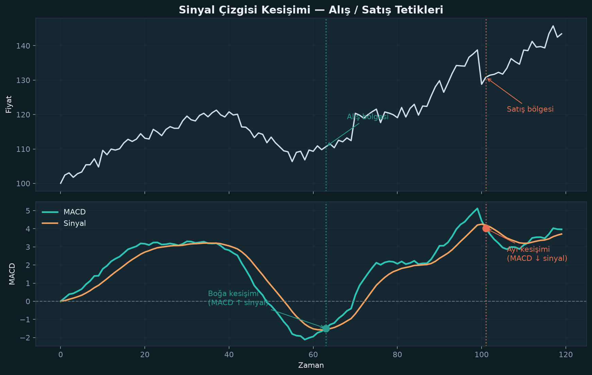
Boğa kesişimi: ne söyler, ne söylemez?
Boğa kesişimi, MACD çizgisinin sinyal çizgisini aşağıdan yukarı kesmesidir. Bu hareket şunu ima eder: kısa vadeli momentum, yakın dönem ortalamasının önüne geçmeye başlamıştır. Yani satış baskısı zayıflıyor veya alış tarafı hızlanıyor olabilir.
Ancak boğa kesişimi “hemen yükseliş başlar” demek değildir. MACD ortalamalara dayandığı için gecikmelidir; kesişim oluştuğunda fiyatın bir kısmı zaten hareket etmiş olabilir. Ayrıca yatay piyasada MACD çizgisi ile sinyal çizgisi birbirine çok yakın kalır ve sık sık kesişir. Bu durumda her boğa kesişimi alış fırsatı değil, çoğu zaman kısa süreli dalgalanmadır.
Boğa kesişimini değerli kılan şey genellikle nerede ve ne zaman oluştuğudur. Düşüş trendinin sonlarına yakın, önemli bir destek bölgesinde ve histogramın negatiften pozitife dönüşe hazırlandığı bir boğa kesişimi; rastgele bir range ortasındaki kesişimden çok daha anlamlıdır.
Ayı kesişimi: düzeltme mi, dönüş mü?
Ayı kesişimi, MACD çizgisinin sinyal çizgisini yukarıdan aşağı kesmesidir. Momentumun zayıfladığına işaret eder. Güçlü bir yükseliş trendinde ayı kesişimi çoğu zaman sadece kısa bir düzeltmedir; trend henüz bitmemiş olabilir. Düşüş trendinde veya sıfır çizgisinin altında oluşan ayı kesişimi ise trend devamı senaryosuna daha yakındır.
Orta seviye okuyucunun kazanması gereken alışkanlık şudur: ayı kesişimini gördüğünüzde hemen “sat” demek yerine önce sorun: “Bu, ana trende karşı mı, trendle mi aynı yönde?” Üst zaman diliminde boğa bias varken alt zaman dilimindeki ayı kesişimi genelde düzeltme sinyalidir; tersine, üst zaman diliminde ayı bias varken ayı kesişimi daha ciddiye alınır.
Erken kesişim ile geç kesişim
Kesişimler zamanlama açısından iki uca kayabilir: erken ve geç. Erken kesişim, dönüşün henüz başında oluşur; risk/ödül potansiyeli yüksek olabilir ama yanlış sinyal ihtimali de artar. Geç kesişim, hareketin bir kısmı geride kaldıktan sonra gelir; teyit güçlüdür ama giriş fiyatı daha az cazip olabilir.
Histogram bu dengeyi okumak için kritik araçtır. Histogram negatif bölgede sıfıra yaklaşırken küçülüyorsa, boğa kesişimi yaklaşıyor olabilir — bu erken uyarıdır. Kesişim oluştuktan sonra histogram hâlâ zayıfsa veya hemen tersine dönerse, kesişim “geç ve zayıf” sayılabilir. Temkinli trader kesişimi bekler; agresif trader histogram uyarısıyla erken pozisyon deneyebilir. Hangi tarzı seçerseniz seçin, bunu bilinçli yapın; rastgele erken giriş çoğu hesabı yıpratır.
| Özellik | Erken kesişim | Geç kesişim |
|---|---|---|
| Oluşum yeri | Genelde sıfırın altında veya trend dönüşü başında | Trend zaten başlamış; sıfırın üstünde/altında devam bölgesinde |
| Risk/ödül | Daha iyi giriş fiyatı potansiyeli; daha fazla stop riski | Daha kötü giriş; daha az yanlış sinyal |
| Histogram | Kesişimden önce barlar küçülmeye başlar | Kesişimden sonra barlar hâlâ güçlü büyüyebilir |
| Kimler için? | Deneyimli, sıkı stop kullananlar | Yeni başlayan ve disiplinli swing trader’lar |
Kesişim filtreleri: pratik süzgeçler
Her kesişimi işleme çevirmek yerine birkaç basit filtre kullanmak, işlem sayısını azaltır ve kaliteyi artırır. Aşağıdaki filtreler tek başına mucize yaratmaz; ancak birlikte kullanıldığında “gürültü kesişimlerini” eleyebilir.
- Sıfır çizgisi filtresi: Boğa kesişimini yalnızca sıfırın üstünde veya sıfıra yakın destekte aramak; ayı kesişimini sıfırın altında veya dirençte aramak.
- Trend filtresi: Üst zaman diliminde MACD sıfırın hangi tarafında? Ana bias ile aynı yöndeki kesişimlere öncelik verin.
- Fiyat yapısı filtresi: Boğa kesişimi bir önceki swing dibinin üstünde mi oluşuyor? Ayı kesişimi bir önceki swing tepesinin altında mı? Yapı kırılımı teyit gücü katar.
- Histogram teyidi: Boğa kesişiminden sonra histogram pozitif ve büyüyor mu? Ayı kesişiminden sonra negatif ve derinleşiyor mu?
- Piyasa rejimi filtresi: Net trend var mı, yoksa yatay mı? Yatayda kesişim stratejisini küçültün veya kapatın.
Yanlış okuma
“MACD yeşil kesişim yaptı, hemen alıyorum. Fiyat nerede, histogram ne diyor, üst grafikte trend var mı — bakmadım.”
Sonuç: Range ortasında üçüncü whipsaw; stop olur, moral bozulur, göstergeye güven azalır.
Doğru okuma
“Günlükte MACD sıfırın üstünde (boğa bias). Saatlikte destekten boğa kesişimi geldi. Histogram negatiften pozitife döndü ve büyüyor. Stop son dibin altında.”
Sonuç: Tek sinyal değil, bağlamlı bir senaryo. Kazanma garantisi yok; ama karar süreci tutarlı.
Kesişim + seviye: neden “nerede” önemli?
Aynı boğa kesişimi, grafikte farklı yerlere düştüğünde farklı anlam taşır. Önemli bir destek bölgesinde, önceki düşüklerin üzerinde ve hacimle gelen bir kesişim; direnç altında sıkışmış bir kesişimden daha güvenilirdir. MACD seviye okumaz; seviyeyi siz okursunuz, MACD zamanlamaya yardım eder. Bu birliktelik, orta seviye trader’ın en büyük sıçramasıdır.
Pratik bir alışkanlık: Grafikte kesişim noktasına dikey çizgi çekin. O noktada fiyat ne yapıyordu? Son tepe/dip nerede? 200 EMA yakınında mı? Bu soruları cevaplamadan emir göndermeyin. İlk başta yavaş hissedersiniz; birkaç hafta sonra otomatikleşir.
Son 20 işlem gününüzde (veya demo hesapta) MACD kesişimlerini işaretleyin. Her kesişim için şunları yazın:
- Boğa mı ayı mı?
- Sıfırın üstünde mi altında mı?
- Trend mi range mi?
- Histogram ne yapıyordu?
- Fiyat 5–10 bar sonra nereye gitti? (işlem açmadan sadece gözlem)
Amaç: Hangi kesişim türünün sizin izlediğiniz enstrümanda daha sık “işe yaradığını” kendi verinizle görmek.
Kesişim zamanlaması ve mum kapanışı
Platformlar MACD’yi genelde kapanış fiyatına göre hesaplar. Bu, kesişimin ancak mum kapandığında “kesinleştiği” anlamına gelir. Mum ortasında MACD geçici olarak kesişmiş görünebilir; kapanışta tekrar ayrılabilir. Orta seviye trader’lar özellikle günlük grafikte “mum kapanışını bekle” kuralını uygular. Saatlik ve altı dilimlerde bu kural hâlâ geçerlidir; sadece fırsat penceresi daralır.
İki bar teyidi, whipsaw’u azaltmak için basit bir yöntemdir: Boğa kesişimi oluştuktan sonra bir sonraki mum da MACD’nin sinyalin üstünde kapanıyorsa sinyal daha güvenilir sayılır. Bu yöntem geç giriş maliyeti getirir; ama range piyasasında hayat kurtarır. Kendi enstrümanınızda hem “anında giriş” hem “bir bar bekle” sonuçlarını kağıt üzerinde karşılaştırın; hangisi size uyuyorsa onu seçin.
Örnek vaka: trend içi geri çekilme kesişimi
Diyelim ki hisse senedi aylardır yükseliş trendinde. Günlük MACD sıfırın üstünde. Fiyat 20 günlük ortalamaya geri çekiliyor; MACD kısa süreli düşüyor ve sinyal çizgisine yaklaşıyor. Destekten sekme gelir; saatlikte boğa kesişimi oluşur; histogram negatiften pozitife döner. Bu, Part 1’deki “trend devamı” iskeletinin canlı örneğidir. Aynı hisste bir hafta önce range ortasında oluşan boğa kesişimi ise muhtemelen whipsaw olurdu. Fark, bağlamdır — kesişim şekli aynı görünse bile.
Bu vakayı kendi grafiğinizde aramayı deneyin. “MACD kesişimi” araması yüzlerce sonuç verir; “sıfır üstü + destek + histogram dönüşü” filtresi sonuçları onda bire indirir. Az ama öz sinyal, başlangıçta can sıkıcı gelir; uzun vadede hesabınız için daha sağlıklıdır.
Aynı grafikte iki boğa kesişimi bulun: biri sıfırın altında (erken), biri sıfırın üstünde (geç). Her birinden sonra 20 bar izleyin. Hangisi daha tutarlı sonuç verdi? Not: tek örnek yeterli değil; en az beş çift karşılaştırın.
Bölüm 2 · Bölüm 2
Sıfır çizgisi: bias, kesişim kalitesi ve harita
Sıfır çizgisi MACD panelinin sessiz ama güçlü pusulasıdır. MACD çizgisi sıfırın üstündeyse kısa vadeli ortalama (EMA12), uzun vadeli ortalamadan (EMA26) yüksektir — yani kısa vade görece güçlüdür. Altındaysa tersi geçerlidir. Bu bilgi basit görünür; ancak kesişim sinyallerinin kalitesini belirleyen en önemli filtrelerden biridir.
Bias (eğilim / yön tercihi) kelimesini burada şöyle kullanıyoruz: Belirli bir zaman diliminde MACD sıfırın hangi tarafında kalıyorsa, o dönem için “boğa bias” veya “ayı bias” diyebiliriz. Bias, geleceği garanti etmez; ama hangi yöndeki sinyallere öncelik vereceğinizi söyler. Trendle aynı yöndeki işlemler istatistiksel olarak daha az strestir — çünkü piyasa çoğu zaman trend içinde daha uzun kalır, dönüşlerden.
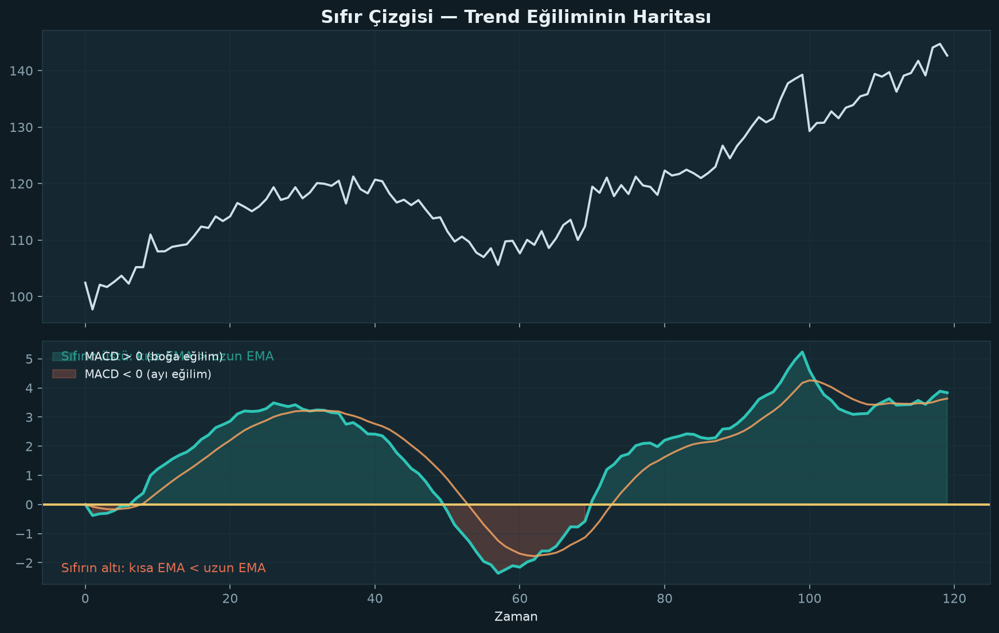
Sıfır çizgisi kesişimi: ağır ama net sinyal
MACD çizgisinin sıfırı yukarı kesmesi, klasik “hızlı ortalama yavaşı geçti” kuralının MACD dilindeki karşılığıdır. Aşağı kesmesi ise tersi. Sinyal çizgisi kesişimine göre genelde daha seyrek oluşur; çünkü iki ortalamanın birbirini geçmesi, iki çizginin birbirini kesmesinden daha “ağır” bir olaydır.
Sıfır kesişimi tek başına da gecikmelidir. Özellikle güçlü bir düşüşten sonra sıfırı yukarı kesmek, dönüşün ortasına veya sonuna denk gelebilir. Bu yüzden sıfır kesişimini genelde “bias değişimi” olarak okumak daha sağlıklıdır: artık bu zaman diliminde öncelik boğa tarafına kaydı. Hemen büyük pozisyon açmak yerine, boğa yönlü sinyal çizgisi kesişimlerini veya geri çekilmeleri beklemek daha disiplinli bir yaklaşımdır.
Kesişimlerin sıfıra göre kalitesi
Sinyal çizgisi kesişiminin anlamı, sıfır çizgisine göre değişir. Aynı boğa kesişimi farklı bölgelerde farklı senaryolara işaret eder. Bu tablo, günlük grafikte swing işlem yapan biri için tipik yorumlardır; kendi enstrümanınızda mutlaka gözlemle teyit edin.
| Kesişim türü | Konum | Olası anlam | Dikkat |
|---|---|---|---|
| Boğa kesişimi | Sıfırın altında, derin negatif bölge | Erken dönüş adayı; satış momentumu zayıflıyor olabilir | Henüz ayı bias; teyit şart, stop sıkı tutulmalı |
| Boğa kesişimi | Sıfırın hemen altında veya sıfıra yakın | Bias değişimine yakın; dönüş veya güçlü sıçrama | Sıfır kesişimi ile birlikte daha güçlü |
| Boğa kesişimi | Sıfırın üstünde | Trend devamı / geri çekilmeden çıkış | “Trendle işlem” mantığına uygun; geç giriş olabilir |
| Ayı kesişimi | Sıfırın üstünde, yüksek pozitif bölge | Güçlü trendde düzeltme uyarısı | Hemen trend dönüşü sanmayın; kısmi kar realizasyonu düşünülebilir |
| Ayı kesişimi | Sıfırın altında | Düşüş trendinde devam sinyali | Boğa kesişimlerine karşı işlem açmak riskli |
Bias okuma alışkanlığı
Her grafik açtığınızda ilk bakışınız şu olabilir: “MACD şu an sıfırın neresinde?” Bu tek soru, gün içinde onlarca gereksiz sinyali eler. Örneğin günlük grafikte MACD aylarca sıfırın üstündeyse, saatlikteki küçük ayı kesişimlerini “büyük satış” diye okumak yerine “düzeltme” diye etiketlemek daha doğru olur.
Çoklu zaman dilimi (MTF) okumada üst grafik bias verir, alt grafik zamanlama verir. Klasik örnek: günlük boğa bias + saatlik boğa kesişimi. Ters kombinasyon (günlük ayı bias + saatlik boğa kesişimi) mümkündür ama “trend karşıtı” sayılır; pozisyon boyutu küçültülmeli veya işlem atlanmalıdır.
Yanlış okuma
“Saatlikte boğa kesişimi var, alıyorum.” Günlük grafikte MACD aylarca sıfırın altında, fiyat 200 EMA’nın altında, yapı düşüş (lower high, lower low).
Doğru okuma
“Saatlik boğa kesişimi bir düzeltme tepkisi olabilir; ana bias ayı. İşlem arıyorsam küçük boyut veya günlükte sıfır üstü teyit beklerim.”
Sıfır çevresi: gri bölge
MACD sıfırın hemen üstünde veya altında gidip geliyorsa piyasa “kararsız” veya “geçiş” modundadır. Bu gri bölgede kesişimler çok sık oluşur ve whipsaw riski yükselir. Deneyimli trader’lar bu dönemde ya işlem azaltır ya da daha geniş stop ve küçük boyut kullanır. Sıfırın net bir tarafında kalındığı dönemler, MACD sinyallerinin daha tutarlı olduğu dönemlerdir.
Sıfır çizgisini yatay destek/direnç gibi düşünmek faydalıdır. MACD bir kez sıfırın üstüne çıkıp orada kalabiliyorsa, geri çekilmelerde sıfıra yakın boğa kesişimleri “trend devamı” adayı olur. Sıfırın altına inip orada kalıyorsa, tepki yükselişlerindeki boğa kesişimleri genelde tuzaktır.
İzlediğiniz bir enstrümanda üç zaman dilimi seçin (ör. haftalık, günlük, 4 saat). Her birinde şu an MACD sıfırın hangi tarafında? Üçü aynı yönde mi?
- Aynı yöndeyse: trend senaryosu; trend yönünde kesişim arayın.
- Karışıksa: geçiş veya düzeltme; işlem boyutunu küçültün veya bekleyin.
- Haftalık ayı, günlük boğa ise: genelde büyük düzeltme veya trend değişim aralığı.
Sıfır + kesişim birlikteliği
En güçlü senaryolardan biri şudur: MACD önce sıfırı yukarı keser (bias boğaya döner), ardından kısa bir geri çekilmede sıfırın hemen üstünde boğa sinyal kesişimi oluşur. Bu “sıfır üstü ilk kesişim” veya “sıfır retest + kesişim” olarak anılır. Tam tersi ayı senaryosunda sıfırın altındaki ayı kesişimleri düşüş devamına işaret edebilir.
Bu birleşimi kullanırken sabırsızlık tuzaktır. Bazen sıfır kesişiminden sonra haftalarca yatay hareket gelir; MACD sıfır civarında titreşir. Burada “kaçırdım” paniğiyle zayıf kesişime girmek yerine net bias oluşmasını beklemek daha iyidir.
Sıfır çizgisi ve 200 EMA birlikte
Birçok eğitim materyalinde MACD sıfır filtresi, 200 periyotluk EMA ile birlikte anlatılır. Mantık tutarlıdır: fiyat 200 EMA’nın üstündeyse ve MACD sıfırın üstündeyse çift boğa onayı vardır. İkisi de altındaysa çift ayı onayı. Çelişki olduğunda (fiyat 200 EMA üstünde ama MACD sıfır altında) geçiş veya düzeltme dönemi düşünülür; agresif işlem yerine izleme moduna geçilir.
200 EMA tek başına kutsal değildir; ancak “büyük resim” filtresi olarak MACD’yi küçük zaman dilimindeki gürültüden korur. Örneğin günlük MACD sıfır altındayken 5 dakikalık boğa kesişimlerine güvenmek, istatistiksel olarak zayıf bir tercihtir.
Sıfır altı boğa kesişimi: tuzak mı fırsat mı?
Düşüş trendinin dibinde oluşan sıfır altı boğa kesişimi, kitaplarda “erken dönüş” olarak övülür. Gerçekten de risk/ödül oranı cazip olabilir: stop dar, potansiyel hareket geniş. Ancak “bıçak düşerken tutma” riski vardır; MACD pozitife geçmeden fiyat bir dip daha yapabilir. Bu senaryoda pozisyon boyutunu küçültmek ve kademeli giriş düşünmek (örneğin yarım pozisyon kesişimde, yarım pozisyon sıfır üstü teyitte) orta yol olabilir.
İzlediğiniz enstrümanda son üç “MACD sıfırı yukarı kesme” olayını bulun. Her birinden sonra 30 gün boyunca fiyat ne yaptı? Sıfır kesişimi tek başına alım sinyali olsaydı sonuç ne olurdu? Gerçek veri, teoriden daha öğreticidir.
Bölüm 2 · Bölüm 3
Histogram okuma ustalığı: tempo, fazlar ve erken uyarı
Histogram, MACD ile sinyal çizgisi arasındaki mesafenin görsel hâlidir. Birçok yeni başlayan histogramı dekor sanır; oysa momentumun tempo bilgisi burada saklıdır. Çizgiler “ne yönde” sorusuna cevap verirken, histogram “ne kadar hızlı” ve “hız artıyor mu azalıyor mu” sorularına yaklaşır. Bu bölümde histogramı pasif bir süs olmaktan çıkarıp aktif okuma aracına dönüştüreceğiz.
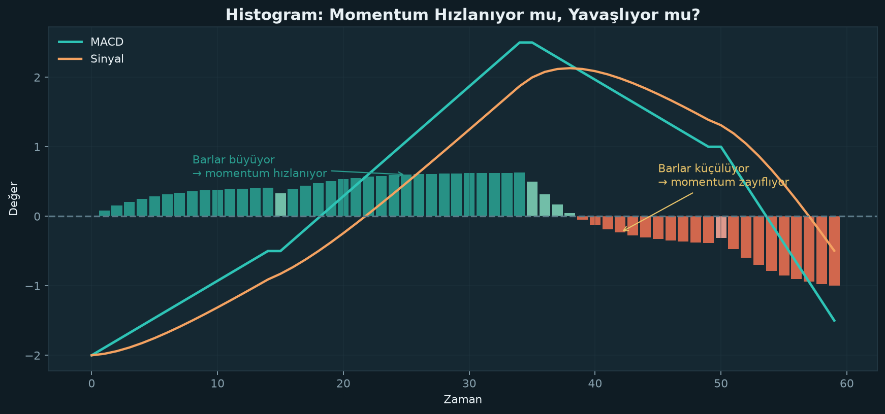
Temel histogram dili
Histogram barı pozitifse MACD, sinyalin üstündedir. Negatifse altındadır. Barın uzunluğu (mutlak değer) mesafenin büyüklüğünü gösterir. Önemli olan yalnızca pozitif/ negatif olmak değil; ardışık barların bir öncekine göre büyüyüp büyümediğidir.
- Pozitif ve büyüyen barlar: Yükseliş momentumu güçleniyor olabilir.
- Pozitif ama küçülen barlar: Hâlâ boğa tarafındasınız; tempo düşüyor → ayı kesişimi riski artar.
- Negatif ve derinleşen barlar: Satış momentumu güçleniyor olabilir.
- Negatif ama küçülen barlar (sıfıra yaklaşan): Satış temposu zayıflıyor → boğa kesişimi için erken uyarı.
Bu dört durumu ezberlemek yeterli değildir; grafikte sesli düşünerek pratik yapın: “Barlar büyüyor mu, küçülüyor mu?” Bu alışkanlık, kesişimden birkaç bar önce uyarı verebilir.
Thomas Aspray ve histogramın amacı
MACD’yi Gerald Appel geliştirdi; histogram ise Thomas Aspray’in katkısıyla yaygınlaştı. Aspray’in amacı, sinyal çizgisi kesişimini önceden sezmekti. Mantık şudur: MACD sinyale yaklaşırken mesafe kapanır; histogram küçülür. Mesafe açılırken histogram büyür. Dolayısıyla histogram yön değişimi, çizgi kesişiminden önce gelebilir.
Bu erken uyarı her zaman doğru çıkmaz. Özellikle yatay piyasada histogram sürekli büyüyüp küçülür; her küçülme kesişim anlamına gelmez. Histogramı bağlam içinde okumak — sıfır bölgesi, trend yönü, fiyat yapısı — şarttır.
Histogram fazları
Bir trend hareketi boyunca histogram genelde belirli fazlardan geçer. Bu fazları tanımak, “trend nerede, nefes mi alıyor, tükeniyor mu?” sorusuna yardım eder.
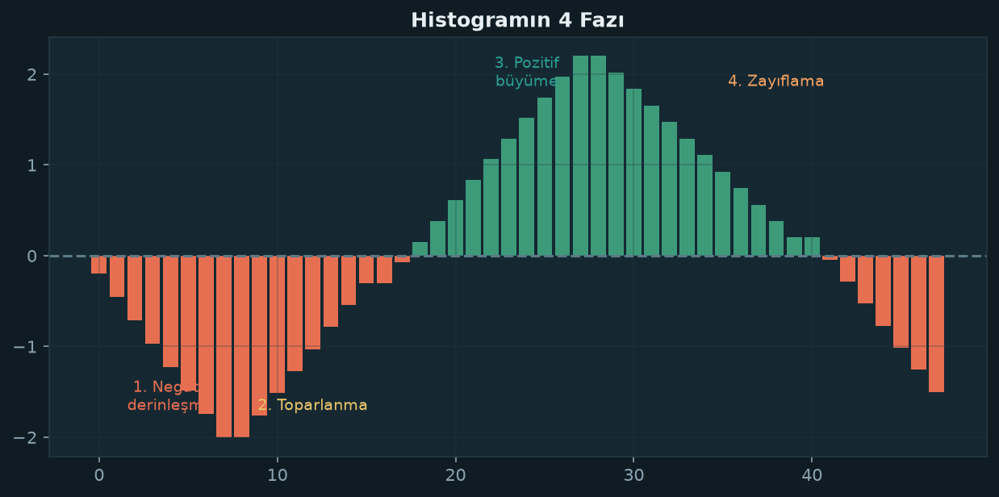
| Faz | Histogram davranışı | Olası piyasa hali | İşlem notu |
|---|---|---|---|
| İvme (acceleration) | Barlar aynı yönde büyüyor | Trend güçleniyor | Trend devamı; geç kalmış giriş riski |
| Zirve (peak) | En uzun bar, ardından küçülme başlar | Momentum dorukta | Kâr koruma; yeni agresif giriş dikkatli |
| Yorgunluk (fatigue) | Barlar küçülüyor ama hâlâ aynı işaret | Trend sürüyor ama tempo düşüyor | Kesişim veya düzeltme yakın olabilir |
| Dönüş (reversal) | Barlar karşı işarete geçiyor veya sıfır etrafında titreşiyor | Momentum yön değiştiriyor | Teyit bekle; tek bar yeterli değil |
Faz okuması, “histogram kırmızı oldu, sat” basitleştirmesinden uzaktır. Örneğin güçlü bir yükselişte histogram zirve yaptıktan sonra küçülmeye başlamak normaldir; bu hemen trend sonu demek değildir. Birkaç bar küçülme ve ardından tekrar büyüme, trendin “nefes alması” olabilir. Sabırsız satış, trendten erken çıkmanıza yol açar.
Erken uyarı senaryoları
Senaryo A — Boğa kesişimi öncesi: MACD sıfırın altında veya yakınında. Histogram negatif ama barlar küçülüyor (mutlak değer azalıyor). Bu, satış temposunun zayıfladığına işaret eder. Birkaç bar sonra boğa kesişimi gelebilir. Henüz işlem açmak zorunda değilsiniz; “izleme listesi”ne almak yeterli olabilir.
Senaryo B — Ayı kesişimi öncesi: Fiyat yeni tepe yapıyor olabilir; histogram pozitif ama barlar küçülüyor. Momentum fiyatı takip etmiyor. Bu, ayı kesişimi veya düzeltme için uyarıdır. Özellikle direnç bölgesindeyse daha anlamlıdır.
Senaryo C — Sahte küçülme: Tek bir küçülen bar sonrası histogram tekrar büyür. Bu, kısa süreli gürültüdür. Erken uyarı için en az 2–3 ardışık küçülen bar veya histogram + fiyat uyumsuzluğu arayın.
Yanlış okuma
“Histogram bir bar küçüldü, hemen sattım.” Trend hâlâ güçlü; küçülme tek barlık gürültüydü. Fiyat 10 bar daha yükseldi.
Doğru okuma
“Histogram üç bardır küçülüyor, fiyat yeni tepe yapıyor, dirençteyiz. Kârın bir kısmını alıyorum; tam çıkış için ayı kesişimi veya yapı kırılımı bekliyorum.”
Histogram + kesişim + sıfır: üçlü okuma
Histogramı tek başına değil, diğer bileşenlerle birlikte kullanın. İdeal boğa senaryosu örneği: (1) günlük MACD sıfırın üstünde, (2) saatlikte histogram negatiften pozitife dönerken barlar büyüyor, (3) boğa sinyal kesişimi oluşuyor. Üç koşul aynı anda olmak zorunda değil; ama en az ikisi güçlü olmalı.
Histogram sıfır çizgisini geçerken (pozitiften negatife veya tersi) ekstra dikkat gösterin. Bu geçiş, momentumun taraf değiştirdiğini gösterir. Geçiş + kesişim aynı bölgede ise sinyal daha ağırlıklı sayılabilir.
Bir hafta boyunca her gün şu soruyu cevaplayın (işlem açmadan):
- Histogram şu an hangi fazda? (ivme / zirve / yorgunluk / dönüş)
- Barlar son 3 barda büyüyor mu küçülüyor mu?
- Çizgi kesişimi var mı, yoksa histogram önce mi uyarı verdi?
Bir hafta sonunda histogramın kesişimden kaç kez önce doğru uyarı verdiğini sayın. Yanlış alarmları da not edin.
Histogram tuzakları
- Çok kısa zaman diliminde (1–5 dk) histogram aşırı gürültülüdür; faz okuması zorlaşır.
- Çok uzun dilimde (haftalık) histogram çok yavaş kalır; kısa vadeli tempo kaybolur.
- Histogram rengine takılıp “yeşil = al” demek, bar büyüklüğünü görmezden gelmektir.
- Aşırı büyük tek bir histogram barı sonrası hemen ters işlem açmak, çoğu zaman erkendir.
Histogram ve hacim: ikinci teyit
MACD hacim ölçmez; ancak histogramdaki güçlü genişleme çoğu zaman hacim artışıyla çakışır. Boğa kesişimi sonrası histogram barları büyürken hacim de yükseliyorsa, hareketin “katılımcılı” olduğu düşünülebilir. Tersine, kesişim var ama histogram zayıf ve hacim düşükse sinyal şüpheli kalır. Bu birleşik okuma zorunlu değildir; ama orta seviye trader’ın araç setine eklenebilir.
Uzun okuma: histogram “hikâyesi”
Deneyimli okuyucular histograma bakınca bir cümle kurar: “Satış temposu zayıflıyor, barlar küçülüyor, sıfıra yaklaşıyoruz.” Bu, tek bara değil diziye bakmaktır. Pratik için grafiği kapattığınızda son beş histogram barının büyüklüğünü kağıda yazın (ör. 0.3, 0.5, 0.7, 0.6, 0.4). Azalan dizi, momentum yavaşlamasıdır. Artan dizi, hızlanmadır. Bu basit egzersiz, ekran başında sezgisel okumayı güçlendirir.
| Histogram durumu | Muhtemel sonraki olay | Yapılacak |
|---|---|---|
| Negatif, küçülen barlar | Boğa kesişimi yaklaşabilir | İzleme listesi; destek kontrolü |
| Pozitif, büyüyen barlar | Trend devamı veya geç rally | Trend yönünde kal; agresif short düşünme |
| Pozitif, küçülen barlar | Ayı kesişimi veya düzeltme | Kâr koruma; teyit bekle |
| Negatif, derinleşen barlar | Düşüş devamı | Boğa kesişimine erken güvenme |
Son bir ayın grafiğinde her önemli fiyat hareketine histogram fazı etiketi yapıştırın (ivme / zirve / yorgunluk / dönüş). Hangi fazda işlem açsaydınız daha iyi sonuç alırdınız? Cevap kişiseldir; ama “zirve fazında agresif alım” gibi hataları görünür kılar.
Bölüm 2 · Bölüm 4
Klasik uyumsuzluk: regular divergence derinlemesine
Uyumsuzluk (divergence), fiyat ile MACD’nin aynı hikâyeyi anlatmadığı anlardır. Fiyat bir yönde yeni ekstrem yaparken MACD zayıflıyorsa, momentum fiyatı “onaylamıyor” olabilir. Bu, olası dönüş veya en azından ciddi düzeltme için erken uyarıdır. Ancak uyumsuzluk kehanet değildir; güçlü trendlerde uyumsuzluk haftalarca “yanlış” kalabilir.
Bu bölümde klasik (regular) uyumsuzluğa odaklanıyoruz: boğa uyumsuzluğu ve ayı uyumsuzluğu. Gizli (hidden) uyumsuzluk bir sonraki bölümün konusudur; karıştırmamak önemlidir — ikisi farklı senaryolara işaret eder.
Boğa uyumsuzluğu (bullish regular divergence)
Boğa uyumsuzluğu şu kalıpla tanınır: Fiyat daha düşük bir dip (lower low) yapar; MACD ise daha yüksek bir dip (higher low) yapar. Yani fiyat “daha kötü” görünürken momentum “daha iyi” görünür. Satış baskısı zayıflıyor olabilir; dip avcıları ve swing alıcıları bu yapıyı izler.
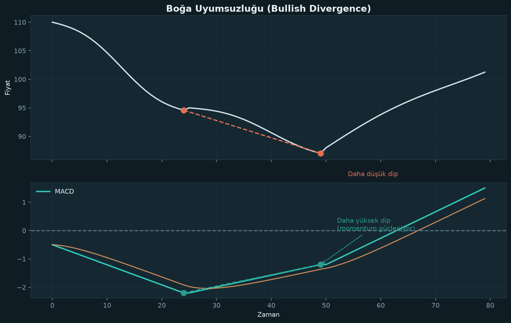
Boğa uyumsuzluğu tek başına alış emri değildir. Fiyat hâlâ düşüyor olabilir; MACD sadece düşüşün hızının azaldığını söyler. İşlem için genelde şu teyitler aranır: boğa sinyal kesişimi, histogramın pozitife dönmesi, fiyatın kısa vadeli yapı kırılımı (ör. son swing tepesinin üstüne çıkma) veya destek bölgesinden güçlü dönüş mumu.
Ayı uyumsuzluğu (bearish regular divergence)
Ayı uyumsuzluğu tersidir: Fiyat daha yüksek tepe (higher high) yapar; MACD daha düşük tepe (lower high) yapar. Fiyat yeni zirve yapıyor gibi görünürken momentum geride kalır. Bu, yükselişin yorulduğuna işaret edebilir.
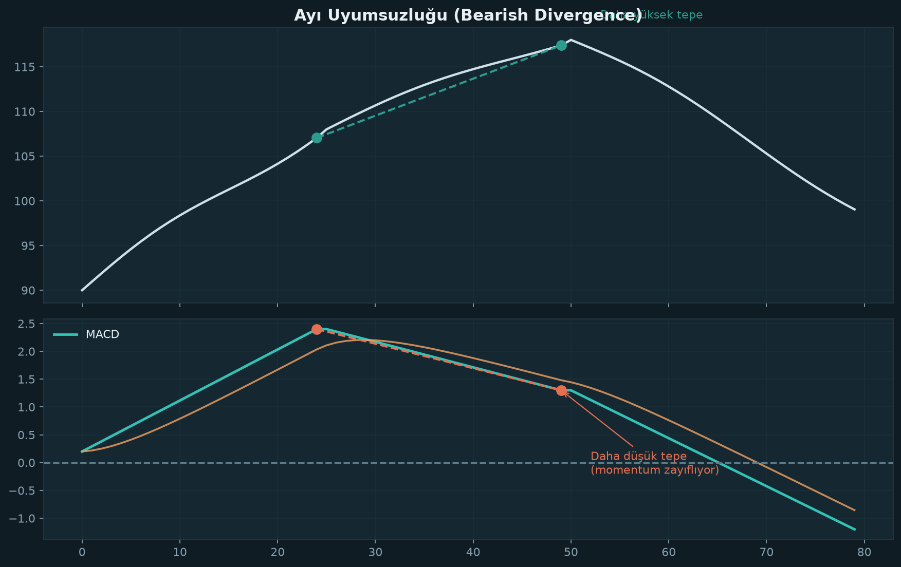
Güçlü boğa trendlerinde ayı uyumsuzluğu sık görülür ve çoğu zaman sadece kısa düzeltme üretir. Haber akışı, sektör rotasyonu veya genel piyasa rallisi varken MACD uyumsuzluğu uzun süre görmezden gelinebilir. Bu yüzden uyumsuzluğu “kesin tepe” diye okumak tehlikelidir.
İyi uyumsuzluk vs zayıf uyumsuzluk
| Kriter | Daha güçlü uyumsuzluk | Daha zayıf uyumsuzluk |
|---|---|---|
| Süre | Birkaç haftaya yayılan, net iki tepe/dip | 2–3 günlük mini dalgalanma |
| MACD farkı | İkinci tepe/dip belirgin şekilde farklı | Neredeyse aynı seviyede, tartışmalı |
| Konum | Önemli destek/direnç, önceki ekstrem bölgesi | Grafiğin ortasında anlamsız bölge |
| Trend bağlamı | Uzun süren trendin sonlarına yakın | Trendin başında, henüz güçlü momentum varken |
| Teyit | Kesişim, yapı kırılımı, hacim | Teyit yok; sadece uyumsuzluk çizgisi |
Teyit katmanları
Disiplinli uyumsuzluk işlemi şu sırayı izler: (1) uyumsuzluğu işaretle, (2) bekle, (3) teyit al, (4) riskini tanımla, (5) gir. Adım 2 ve 3’ü atlamak, en pahalı hatadır.
- MACD teyidi: Boğa uyumsuzluktan sonra boğa kesişimi; ayı uyumsuzluktan sonra ayı kesişimi.
- Histogram teyidi: Momentum yön değişimi barlarla görünür hâle gelmeli.
- Fiyat yapısı teyidi: Boğa için higher low sonrası higher high; ayı için lower high sonrası lower low.
- Seviye teyidi: Destek/direnç kırılımı veya reddi.
- Üst zaman dilimi: Uyumsuzluk alt grafikte, bias üst grafikte çelişiyorsa boyut küçült.
Yanlış okuma
“Ayı uyumsuzluğu gördüm, hemen short açtım.” Fiyat bir ay daha yükseldi; trend güçlü, haber var, teyit yok.
Doğru okuma
“Ayı uyumsuzluğu var — uyarı listesine aldım. Ayı kesişimi ve son swing dibinin kırılımını bekliyorum. Olmazsa işlem yok.”
Uyumsuzluk çizgisi nasıl çizilir?
Fiyatta iki tepe veya iki dibi birleştiren çizgi çizersiniz. MACD panelinde aynı zaman noktalarındaki tepe/dipleri birleştirirsiniz. Fiyat çizgisi yukarı eğimli, MACD çizgisi aşağı eğimliyse ayı uyumsuzluğu vardır (klasik). Tersi boğa uyumsuzluğudur. Platformların otomatik uyumsuzluk aracı vardır; elle çizmek ise gözünüzü eğitir.
Hangi MACD bileşenini kullanmalı? Çoğu kaynak MACD çizgisini veya histogramı kullanır. Histogram daha hızlı tepki verir; MACD çizgisi daha yumuşaktır. Birini seçin ve tutarlı kalın. Bu kitapta genel okuma için MACD çizgisi veya histogram birlikte düşünülebilir; ikisinde de uyumsuzluk varsa sinyal güçlenir.
Geçmiş grafikte 5 klasik uyumsuzluk bulun. Her biri için:
- Boğa mı ayı mı?
- Teyit geldi mi, ne zaman?
- Teyitsiz giderse ne oldu?
- Güçlü mü zayıf mıydı? (tablodaki kriterlere göre)
Çoklu uyumsuzluk: MACD + RSI
Orta seviye pratiklerden biri, aynı bölgede hem MACD hem RSI uyumsuzluğu aramaktır. İki gösterge farklı formül kullanır; ikisinde de uyumsuzluk varsa uyarı güçlenir. Yine teyit şarttır — çift uyumsuzluk da “kesin dönüş” demek değildir. Özellikle ayı uyumsuzluğunda RSI aşırı alım bölgesinden dönüyorsa senaryo daha tutarlı olabilir.
Uyumsuzluk başarısız olduğunda
Bazen tüm kriterler sağlanır: klasik ayı uyumsuzluğu, teyit kesişimi, dirençte — ama fiyat yine yükselir. Bu, analiz hatası değil, piyasanın doğasıdır. Stop’unuz varsa kayıp sınırlıdır. Uyumsuzluk işleminde ortalama kazanç oranı yüzde 100 olmak zorunda değildir; risk/ödül ve kazanma oranı birlikte değerlendirilir. Başarısız uyumsuzluktan sonra “bir daha asla” demek yerine günlüğe yazın: trend mi çok güçlüydü, haber mi vardı, teyit zayıf mıydı?
Bölüm 2 · Bölüm 5
Gizli uyumsuzluk: trend devamının sessiz dili
Klasik uyumsuzluk dönüş arar; gizli uyumsuzluk (hidden divergence) ise çoğu zaman trend devamı arar. Bu ayrımı karıştırmak, MACD okumasında en sık yapılan kavram hatalarından biridir. Gizli boğa uyumsuzluğu, yükseliş trendinde geri çekilmenin sonlanıp devam edebileceğini söyler. Gizli ayı uyumsuzluğu, düşüş trendinde tepki yükselişinin sonlanıp düşüşün sürebileceğini söyler.
Gizli boğa uyumsuzluğu
Gizli boğa uyumsuzluğu kalıbı: Fiyat daha yüksek dip (higher low) yapar; MACD daha düşük dip (lower low) yapar. Fiyat trend yapısını koruyor — yani yükseliş hâlâ sağlıklı görünüyor. MACD ise geri çekilme sırasında kısa süreli zayıflık gösteriyor. Trend devamı trader’ları bu yapıyı “geri çekilmeden al” senaryosunda kullanır.
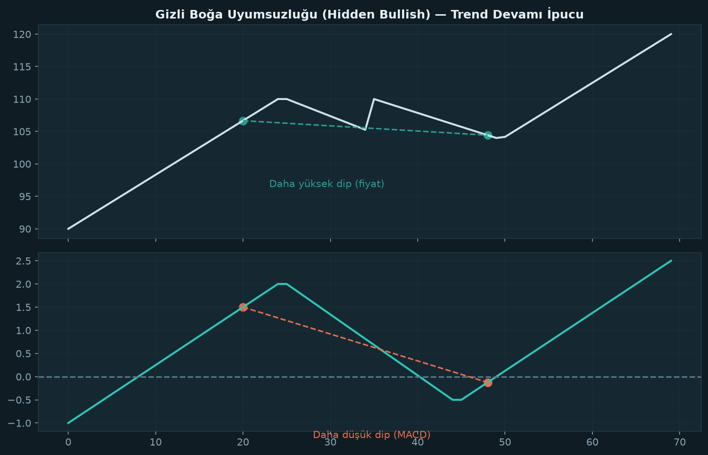
Gizli ayı uyumsuzluğu
Gizli ayı uyumsuzluğu kalıbı: Fiyat daha düşük tepe (lower high) yapar; MACD daha yüksek tepe (higher high) yapar. Düşüş trendinde tepki yükselişi gelmiş ama fiyat önceki tepelerin altında kalmıştır. MACD kısa süreli güçlenmiş görünse de yapı ayı yönündedir. Düşüş devamı senaryosuna uygun okunur.
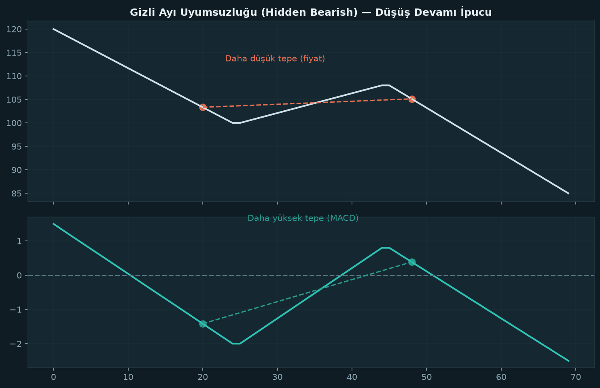
Klasik vs gizli: karşılaştırma
| Tür | Fiyat | MACD | Genel yorum |
|---|---|---|---|
| Klasik boğa | Lower low | Higher low | Olası dönüş yukarı |
| Gizli boğa | Higher low | Lower low | Yükseliş trendinde devam |
| Klasik ayı | Higher high | Lower high | Olası dönüş aşağı |
| Gizli ayı | Lower high | Higher high | Düşüş trendinde devam |
Ezber ipucu: Klasik uyumsuzlukta fiyat “aşırıya” gider (yeni ekstrem dener); gizli uyumsuzlukta fiyat trend yapısını korur (higher low veya lower high). MACD ise ters yönde ikinci noktayı yapar. Bu basit ayrım, grafik başında hızlı kontrol sağlar.
Gizli uyumsuzluk ne zaman kullanılır?
- Net tanımlı trend varsa (üst zaman diliminde bias açık).
- Geri çekilme veya tepki hareketi tamamlanmaya yakınsa.
- Gizli uyumsuzluk + trend yönünde kesişim bir aradaysa.
- Histogram, geri çekilme sonunda tekrar trend yönünde büyümeye başlıyorsa.
- Destek (boğa) veya direnç (ayı) bölgesinde yapı oluşuyorsa.
Gizli uyumsuzluk ne zaman kullanılmaz?
Gizli uyumsuzluk trend devamı arar; trend yoksa anlamı zayıflar. Aşağıdaki durumlarda kullanmaktan kaçının veya boyutu ciddi küçültün:
- Yatay (range) piyasa: Ne higher low ne lower high net değil; MACD sürekli titreşir. Gizli uyumsuzluk burada çoğu zaman rastgele eşleşmedir.
- Trend kırılımı şüphesi: Fiyat 200 EMA veya önemli yapı seviyesini kırdıysa, eski trende “gizli devam” diye yapışmak tehlikelidir.
- Çok kısa zaman dilimi: 1–5 dakikalık grafikte gizli uyumsuzluk gürültü üretir; swing için günlük/4 saat daha anlamlıdır.
- Klasik uyumsuzlukla çelişki: Aynı bölgede hem klasik hem gizli “uyumsuzluk” çizmeye çalışıyorsanız, muhtemelen zorlama yapıyorsunuzdur. Net olanı seçin.
- Teyitsiz giriş: Gizli uyumsuzluk + kesişim + seviye olmadan işlem açmak, klasik uyumsuzlukta olduğu gibi risklidir.
Yanlış okuma
“MACD düşük dip yaptı, klasik boğa uyumsuzluğu sandım ve aldım.” Oysa fiyat higher low yapmıştı — bu gizli boğa, dönüş değil devam senaryosuydu; ama trend zaten bitmek üzereydi, yapı kırıldı, stop oldu.
Doğru okuma
“Fiyat HL yaptı, MACD LL — gizli boğa. Günlük bias boğa, 4 saatte geri çekilme destekte. Boğa kesişimi geldi, trend devamı için küçük long. Yapı kırılırsa çıkarım.”
Pratik senaryo: trend devamı işlemi
Günlük grafikte MACD sıfırın üstünde ve fiyat yükseliş trendinde (higher high, higher low). Fiyat 4 saatlikte EMA20 veya önceki desteğe geri çekilir. MACD kısa süreli düşer ve gizli boğa uyumsuzluğu oluşur. Histogram negatiften pozitife dönerken barlar büyür. 4 saatlik boğa kesişimi gelir. Stop, son swing dibinin altına. Hedef, önceki tepe veya riskin 2 katı. Bu iskelet garanti kazanç vermez; ama gizli uyumsuzluğun doğru bağlamıdır.
Gizli uyumsuzluk ve Fibonacci geri çekilme
Trend devamı trader’ları, gizli boğa uyumsuzluğunu sık sık Fibonacci geri çekilme bölgeleriyle (ör. %38,2 – %61,8) birleştirir. Fiyat bu bölgeye gelir, higher low yapar, MACD gizli boğa gösterir, kesişim gelir — senaryo tamamlanır. Bu birleşim her zaman çalışmaz; ama “rastgele bir geri çekilme” ile “yapılandırılmış geri çekilme” arasındaki farkı anlamaya yardım eder.
Yaygın karışıklık: isim benzerliği
İngilizce’de MACD’nin “convergence” ve “divergence” kavramı ile sinyal anlamındaki “divergence” (uyumsuzluk) karıştırılır. MACD ismindeki divergence, iki ortalamanın uzaklaşması demektir (histogram büyür). Sinyal uyumsuzluğu ise fiyat ile göstergenin ayrışmasıdır. Türkçe’de ikisi de bazen “ıraksama” diye geçer; bağlam önemlidir. Bu kitapta uyumsuzluk = fiyat/MACD ayrışması anlamında kullanılır.
Geçmiş grafikte 3 klasik ve 3 gizli uyumsuzluk bulun. Her birinde fiyatın iki dibi/tepesini yazın (LL, HL, HH, LH). MACD’nin karşılığını yazın. Sonuç: dönüş mü devam mı oldu?
Bu alıştırma, iki türü kas hafızasına yerleştirir. Karıştırma sıklığınız azalır.
Gizli boğa — ne zaman işe yarar
- Güçlü yükseliş trendi
- Net higher low
- Destek bölgesinde geri çekilme
- Üst TF boğa bias
Gizli boğa — ne zaman tuzak
- Trend kırılımı sonrası
- Range ortası
- Makro kötü haber ortamı
- Teyitsiz erken giriş
Bölüm 2 · Bölüm 6
Yanlış sinyaller, whipsaw ve range tuzağı
MACD öğrenmenin son aşaması değil, ortasında karşılaşılır: yanlış sinyaller. Doğru kuralları bilmeniz, her sinyalin kazanacağını garanti etmez. Piyasa bazen trend, bazen yatay, bazen haber volatilitesi modundadır. MACD ortalama tabanlı olduğu için bu rejim değişimlerinde özellikle zorlanır. Bu bölüm, yanlış sinyalleri tanımayı, whipsaw’dan korunmayı ve range tuzağına düşmemeyi hedefler.
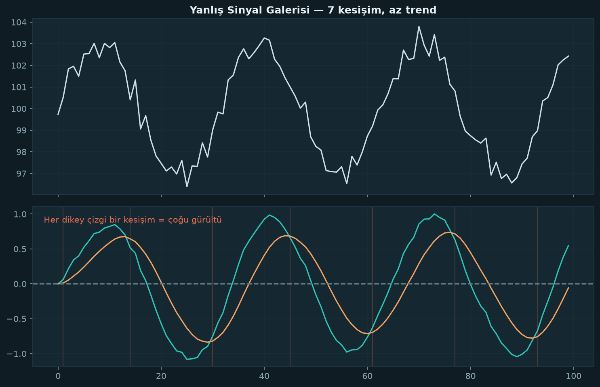
Whipsaw nedir?
Whipsaw (kırbaç etkisi), kısa sürede önce bir yönde sinyal verip ardından ters yönde sinyal vererek trader’ı stop’a sokan piyasa hareketidir. MACD kesişimi açarsınız; fiyat birkaç bar gider ve tersine döner; ayı kesişimi gelir veya stop olursunuz. Yatay piyasada whipsaw sıklığı artar çünkü MACD çizgisi ile sinyal çizgisi sıfır civarında birbirine yakın kalır ve küçük fiyat dalgalanmaları kesişim üretir.
Whipsaw MACD’nin “hatası” değil, göstergenin yanlış rejimde kullanılmasıdır. Trend takip mantığıyla range piyasasında işlem yapıyorsanız, sonuç şaşırtıcı değildir.
Range tuzağı
Range tuzağı, fiyatın belirgin bir destek ile direnç arasında gidip geldiği dönemde MACD sinyallerine güvenmektir. Range’in üstünde boğa kesişimi “kırılım” sanılır; fiyat dirençten döner. Altında ayı kesişimi “çöküş” sanılır; fiyat destekten sıçrar. Üçüncü, dördüncü kesişimde hesap yıpranır, psikoloji bozulur.
Range’i tanımak için fiyat yapısına bakın: Birkaç haftadır benzer tepe ve dipler mi var? MACD sıfır çizgisi etrafında mı titreşiyor? Volatilite düşük mü? Bu üçlü varsa MACD kesişim stratejinizi duraklatın veya boyutu minimuma indirin.
| Rejim | MACD davranışı | Önerilen yaklaşım |
|---|---|---|
| Güçlü trend | Sıfırın bir tarafında kalır; kesişimler daha anlamlı | Trend yönünde kesişim + geri çekilme |
| Zayıf trend / geçiş | Sıfır civarında sık kesişim | İşlem azalt; teyit şart |
| Yatay range | Ardışık whipsaw kesişimleri | MACD kesişimini kapat veya çok küçük boyut |
| Haber volatilitesi | Aşırı histogram, ani ters dönüşler | Haber öncesi/sonrası işlem yok |
Yanlış sinyalin sık nedenleri
- Filtresiz kesişim: Sıfır, trend ve histogram filtresi yok.
- Yanlış zaman dilimi: Çok kısa dilimde gürültü; çok uzun dilimde geç kalma.
- Tek gösterge: Fiyat yapısı ve seviye yok sayılıyor.
- Aşırı işlem: Her kesişimde pozisyon; komisyon ve spread birikir.
- Curve fitting: Geçmişe uyan ayar, canlıda bozulur.
- Uyumsuzluk abartısı: Her küçük ayrışma “dönüş” sanılıyor.
- Stop’suz işlem: Whipsaw tek seferde büyük zarar yazar.
Korunma yöntemleri
Yanlış sinyalleri sıfırlayamazsınız; ama zararını sınırlayabilir ve sıklığını azaltabilirsiniz.
- Rejim filtresi: Range görüyorsanız MACD kesişimine ara verin. Alternatif: destekten al, dirençten sat (fiyat odaklı), MACD sadece teyit.
- Üst zaman dilimi bias: Sadece bias yönünde işlem; karşı yönde en fazla küçük düzeltme işlemi.
- İki bar teyidi: Kesişimden sonra bir bar daha kapanış bekleyin; sahte kesişim elenir (geç kalırsınız ama whipsaw azalır).
- Minimum histogram eşiği: Histogram çok küçükken (sıfıra çok yakın) kesişimleri atlayın; mesafe anlamsızdır.
- Sabit risk: Her işlemde hesabın küçük bir yüzdesi risk. Beş whipsaw üst üste bile hesabı bitirmez.
- İşlem günlüğü: Yanlış sinyalleri etiketleyin: “range”, “haber”, “filtresiz”. Tekrarlayan hata görünür olur.
Yanlış okuma
“MACD yine yanıldı, gösterge çöp.” Oysa grafik üç aydır yatay; aynı hatayı her kesişimde tekrarladım, rejim filtresi kullanmadım.
Doğru okuma
“Range tespit ettim; MACD kesişim stratejimi durdurdum. Trend kırılımını fiyatla bekliyorum. MACD’yi o zaman tekrar devreye alacağım.”
Psikoloji: yanlış sinyal sonrası
Ardışık iki üç whipsaw sonrası trader’lar iki uç tepkiye gider: (1) intikam işlemi — boyutu büyütür, (2) göstergeyi tamamen bırakır. İkisi de öğrenmeyi durdurur. Sağlıklı tepki: günlüğe yaz, rejimi yeniden değerlendir, kuralları değiştirmeden önce en az 20 işlem daha aynı planla devam et veya demo’ya dön. MACD kötü gününde değil, yanlış kullanım gününde “bozulmuş” görünür.
Son bir ayın grafiğinde (işlem açmadan) her MACD kesişimini sayın. Her kesişimden sonra 10 bar içinde fiyat kesişim yönünde en az %1 (veya ATR’nin yarısı kadar) gitti mi?
- Gitti → “başarılı sinyal”
- Ters döndü → “whipsaw”
- Range döneminde whipsaw oranı trend dönemine göre ne kadar yüksek?
Bu sayım, MACD’yi hangi piyasa koşulunda kullanacağınızı somutlaştırır.
Ne zaman MACD’ye ara vermeli?
MACD her piyasada ve her gün çalışmak zorunda değildir. Merkez bankası kararı, bilanço açıklaması, ani regülasyon haberi gibi günlerde göstergeler anlamsızlaşabilir. Ayrıca tatil öncesi düşük hacimli, yatay günlerde de ara vermek akıllıcadır. Profesyonel trader’lar “bugün edge yok” diyebilir; amatör çoğu zaman bunu kabul etmekte zorlanır.
Part 2’yi burada toparlayalım: Kesişim tetiktir; sıfır bias verir; histogram tempo ve erken uyarı verir; klasik uyumsuzluk dönüş arar; gizli uyumsuzluk devam arar; yanlış sinyaller ise çoğunlukla yanlış rejim veya eksik filtre ürünüdür. Bu altı parçayı bir arada düşündüğünüzde MACD artık tek bir kesişimden ibaret değil, bir ritim okuma aracına dönüşür.
MACD’yi ne zaman güvenilir saymalı?
MACD en güvenilir olduğu ortam, net trendli ve orta volatiliteli piyasalardır. Günlük veya 4 saatlik grafikte, likiditesi yüksek enstrümanlarda, haber günü olmayan dönemlerde MACD sinyalleri daha tutarlı davranma eğilimindedir. Aşırı düşük volatilite (sıkışma) sonrası patlama günlerinde ise ilk kesişimler yanıltıcı olabilir; patlama yönü netleşene kadar beklemek daha güvenlidir.
Kontrol listesi: işlem açmadan önce
- Piyasa rejimi nedir? (trend / range / haber)
- Üst zaman dilimi bias ile sinyal aynı yönde mi?
- MACD sıfırın hangi tarafında?
- Histogram tempo ne diyor?
- Kritik seviye (destek/direnç) yakınında mıyız?
- Stop ve pozisyon boyutu tanımlı mı?
- Bu sinyal planımdaki hangi kurala uyuyor — yoksa FOMO mu?
Bu liste uzun görünür; alışkanlık haline gelince bir dakikadan kısa sürer. Liste, yanlış sinyallerin çoğunu işlem açmadan önce eler. MACD’yi “daha iyi ayar” arayışına gömülmek yerine önce rejim ve disiplin sorularını sorun.
Part 2 özeti: altı parçayı bir araya getirmek
Bu bölümde öğrendikleriniz birbirinden kopuk değildir. Sinyal kesişimi tetik verir; sıfır çizgisi bu tetikgin kalitesini belirler; histogram tempo ve erken uyarı sağlar; klasik uyumsuzluk olası dönüşü işaret eder; gizli uyumsuzluk trend devamını işaret eder; yanlış sinyal bölümü ise tüm bunların hangi piyasa koşulunda çalıştığını hatırlatır. Grafik açtığınızda bu sırayı zihninizde gezinin: rejim → bias → kesişim → histogram → uyumsuzluk var mı → risk. Bir adımı atlamak, tekrar whipsaw veya erken ters pozisyon demektir.
Sonraki adımınız, bu parçaları kendi işlem planınıza yazılı hâle getirmektir. “Ben trend devamı trader’ıyım; günlük bias + 4 saat kesişim + histogram teyidi kullanırım” gibi tek cümlelik bir tanım, onlarca belirsiz kesişimden sizi korur. MACD’yi öğrenmek süreçtir; Part 2, ezberden okumaya geçiş köprüsüdür.
Canlı veya geçmiş grafikte tek bir örnek bulun ve şu soruları sırayla cevaplayın:
- Kesişim türü ve konumu (sıfıra göre)?
- Bias ne diyor?
- Histogram hangi fazda?
- Klasik veya gizli uyumsuzluk var mı?
- Range tuzağı riski var mı?
- İşlem açar mıydınız, neden evet/hayır?
Bölüm 12
Zaman dilimleri: Scalping’ten pozisyona, hangi grafik?
MACD’yi öğrendiğinizde ilk soru genelde şudur: “Hangi grafikte kullanmalıyım?” Cevap, işlem tarzınıza bağlıdır. Aynı gösterge bir dakikalık grafikte onlarca kesişim üretirken, haftalık grafikte ayda bir sinyal verebilir. Zaman dilimi seçimi, MACD’nin “ritmini” belirler: hızlı mı çalacak, yavaş mı?
Bu bölümde scalping’ten pozisyon işlemine kadar yaygın tarzları karşılaştıracağız. Amaç size “tek doğru grafik” dayatmak değil; kendi tempounuza uygun çerçeveyi seçmenize yardım etmek. Unutmayın: küçük grafik daha çok sinyal demektir; daha çok sinyal ise daha çok gürültü demektir.
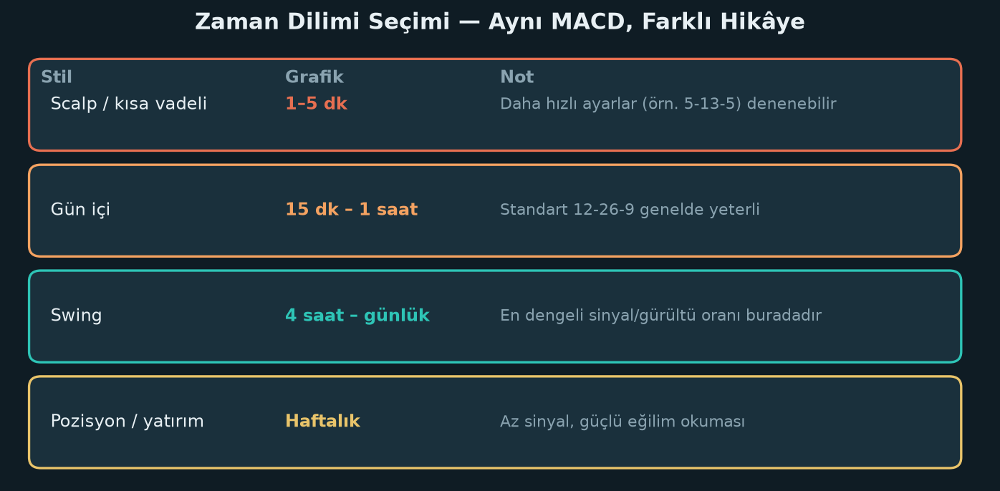
Zaman dilimi nedir, neden önemlidir?
Bir mum (bar), seçtiğiniz süre boyunca fiyatın açılış, kapanış, en yüksek ve en düşük değerini özetler. 5 dakikalık grafikte her mum beş dakikalık hareketi gösterir; günlük grafikte her mum bir günü temsil eder. MACD bu mumların kapanış fiyatlarından hesaplandığı için, zaman dilimi değişince gösterge de değişir.
Kısa zaman dilimlerinde MACD daha hızlı tepki verir; uzun dilimlerde daha yavaş ve daha “ağır” kalır. Bu, hızın her zaman avantaj olduğu anlamına gelmez. Hızlı grafikte erken girersiniz ama yanlış sinyal de çoğalır. Yavaş grafikte geç kalırsınız ama sinyaller genelde daha anlamlıdır.
Scalping: dakikalar içinde giriş–çıkış
Scalping, çok kısa süreli işlemler yapmayı hedefler. Genelde 1 dakika ile 15 dakika arası grafikler kullanılır. MACD burada momentumun anlık değişimini yakalamak için tercih edilir; ancak spread, komisyon ve kayma (slippage) maliyetleri küçük kârları hızla eritebilir.
- Tipik grafikler: 1 dk, 3 dk, 5 dk
- MACD karakteri: Çok sık kesişim; histogram sürekli yön değiştirir
- Zorluk: Yatay piyasada neredeyse her kesişim tuzak olabilir
- Öneri: Scalping’e yeni başlıyorsanız önce 15 dk veya 1 saatlik grafikte MACD okumayı öğrenin
Scalper’lar için pratik kural: MACD’yi tek başına kullanmayın. Üst zaman diliminde (örneğin 1 saat) trend yönünü belirleyin; alt grafikte yalnızca o yönde kesişim arayın. Aksi hâlde “tırıs” giden kesişimlerin içinde kaybolursunuz.
Gün içi (intraday): aynı gün kapanan işlemler
Gün içi trader, pozisyonu genelde gün sonunda kapatır veya en geç birkaç gün içinde sonuçlandırır. 15 dakika, 30 dakika ve 1 saatlik grafikler bu tarz için yaygındır. MACD burada daha okunaklıdır; scalping’e göre gürültü azalır, swing’e göre ise daha hızlı tepki verir.
Gün içi işlemde dikkat edilmesi gereken nokta seans saatleridir. Açılış ve kapanışa yakın saatlerde hacim ve volatilite artar; MACD sinyalleri daha sık ama daha riskli olabilir. Öğle saatlerinde düşük hacimli yatay bölümlerde MACD’yi kapatmak veya işlem boyutunu küçültmek akıllıca olabilir.
Swing: günler ve haftalar
Swing trading, orta vadeli dalgalanmaları hedefler. Pozisyonlar birkaç günden birkaç haftaya uzayabilir. MACD’nin “ev sahibi” sayılabilecek alan burasıdır: varsayılan 12-26-9 ayarı günlük ve 4 saatlik grafiklerde en çok bu kitapta ve dış kaynaklarda anlatıldığı şekilde kullanılır.
- Tipik grafikler: 4 saat, günlük (1D)
- MACD karakteri: Dengeli; kesişimler anlamlı ama seyrek
- Avantaj: İşlem başına daha az karar; düşünme süresi daha uzun
- Dezavantaj: Stop mesafeleri genelde daha geniş; sabır gerekir
Swing trader için MACD, trend devamı ve düzeltme sonrası yeniden giriş aramakta güçlüdür. Günlük grafikte sıfır çizgisinin üstünde kaldığınız sürece “boğa bias” taşıyabilir; 4 saatlik grafikte bu bias yönünde kesişim bekleyebilirsiniz.
Pozisyon: haftalar ve aylar
Pozisyon işlemcisi büyük resme odaklanır. Haftalık ve aylık grafikler kullanılır; MACD burada ana trend filtresi veya erken uyarı aracı olarak iş görür. Kesişimler ayda birkaç kez bile olabilir; bu normaldir ve bir eksiklik değildir.
Uzun vadede MACD’nin sıfır çizgisi kesişimleri, klasik “altın kesişim / ölüm kesişimi” (50/200 MA) tartışmalarına benzer şekilde yorumlanır: seyrek ama geniş hareketlere işaret edebilir. Ancak gecikme de büyüktür; tam dip veya tepeyi yakalamayı beklemeyin.
| İşlem tarzı | Ana grafik | Üst zaman dilimi (bias) | MACD yoğunluğu |
|---|---|---|---|
| Scalping | 1–5 dk | 15 dk – 1 saat | Çok yüksek; filtre şart |
| Gün içi | 15 dk – 1 saat | 4 saat – günlük | Yüksek; seans farkı önemli |
| Swing | 4 saat – günlük | Haftalık | Orta; klasik kullanım |
| Pozisyon | Haftalık – aylık | Aylık / makro | Düşük; sabır gerekir |
Hangi grafik size uygun?
Doğru zaman dilimi, günlük hayatınıza ve psikolojinize uyan dilimdir. Günde sadece iki kez grafiğe bakabiliyorsanız 1 dakikalık scalping sizin için uygun değildir. Tam tersine, sürekli ekran başındaysanız haftalık grafikte tek sinyal beklemek sıkıcı ve verimsiz olabilir.
Kendinize dürüst üç soru sorun: (1) Günde kaç saat grafiğe bakabilirim? (2) Bir işlem açıkken uyuyabilir miyim, yoksa aynı gün kapatmak zorunda mıyım? (3) Küçük grafikte üst üste gelen sinyaller beni paniğe mi iter, yoksa enerji mi verir? Cevaplarınız swing veya pozisyon tarafına işaret ediyorsa, MACD’yi günlük ve 4 saatlik grafikte öğrenmek scalping’den daha verimli bir yol olabilir.
Zaman dilimi değiştirmenin gizli maliyeti
Birçok yeni başlayan kayıp yaşadığında grafikte “zoom out” yapar veya daha küçük dilime geçer. “Belki 5 dakikada daha iyi sinyal bulurum” düşüncesi, çoğu zaman kaçıştır. Her zaman diliminin kendine özgü gürültü profili vardır; sürekli dilim değiştirmek, aynı enstrümanda farklı dillerde konuşmak gibidir — hiçbirinde akıcı olamazsınız.
Önerilen yaklaşım: Önce bir ana grafik ve bir üst grafik seçin; en az üç ay bu çiftte kalın. MACD kesişimlerinin “kalitesini” not edin: kaçı trend yönünde işe yaradı, kaçı range içinde tuzaktı? Bu veri, dilim seçiminizi ayar oynamaktan daha güvenilir şekilde iyileştirir.
Enstrüman türüne göre ince ayar
Hisse senetlerinde seans saatleri ve haber akışı zaman dilimi seçimini etkiler; BIST’te gün içi işlem yapıyorsanız açılış ilk 30 dakikası ile öğle sonrası farklı karakter gösterir. Forex’te 7/24 likidite vardır ama Londra–New York örtüşmesi dışında spread genişleyebilir; bu saatlerde küçük grafikte MACD güvenilmezleşir. Kriptoda volatilite yüksektir; aynı 15 dakikalık grafik hisseye göre çok daha fazla kesişim üretir — stop mesafeleri ve pozisyon boyutu buna göre ayarlanmalıdır.
Emtia (altın, petrol) ve endekslerde (S&P 500, BIST 100) makro haberler ani sıçramalara yol açar. Bu anlarda MACD’nin gecikmesi belirginleşir; haber penceresinde yeni pozisyon açmak yerine volatilite düştükten sonra sinyal aramak genelde daha sağlıklıdır.
Bölüm 13
Ayar laboratuvarı: 12-26-9, hızlı ve yavaş setler
MACD ayarları üç sayıdan oluşur: hızlı EMA periyodu, yavaş EMA periyodu ve sinyal çizgisinin EMA periyodu. Standart 12, 26, 9 kombinasyonu Gerald Appel’in popülerleştirdiği varsayılandır. Peki bu sayılar kutsal mı? Hayır. Peki değiştirmeli misiniz? Belki — ama dikkatli.
Bu bölüm bir “ayar laboratuvarı”dır. Farklı setlerin karakterini deneyerek anlayacağız. Ama laboratuvarın en önemli kuralı şudur: geçmişe mükemmel uyan ayar, gelecekte çoğu zaman başarısız olur. Buna curve fitting (eğriye uydurma / geçmişe uydurma) denir ve MACD kullanıcılarının en sık düştüğü tuzaklardan biridir.
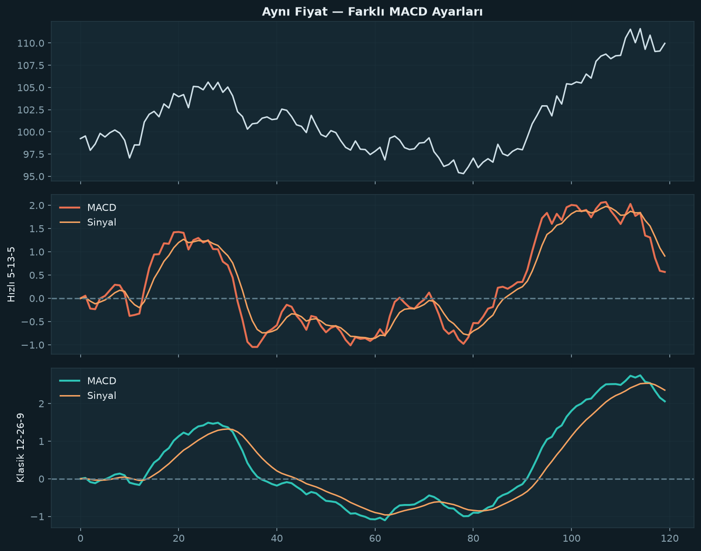
Sinyal = EMA(sinyal_periyodu) of MACD
Standart: hızlı=12, yavaş=26, sinyal=9
12-26-9 neden varsayılan?
Bu sayılar rastgele değildir ama “evrensel optimum” da değildir. 12 ve 26, yaklaşık iki hafta ve bir ay işlem gününe denk gelen periyotlar olarak düşünülmüştür (günlük grafik bağlamında). 9 ise MACD çizgisini yumuşatmak için seçilmiş makul bir değerdir.
Milyonlarca trader aynı varsayılanı kullandığı için, 12-26-9 “kendini gerçekleştiren” bir seviye haline gelmiştir: önemli destek/dirençlerde MACD tepkileri bazen kalabalık davranışından etkilenir. Bu yüzden öğrenirken varsayılanı bozmamak genelde akıllıcadır.
Hızlı setler: 8-17-9, 5-13-5
Hızlı ayarlarda kısa periyot küçültülür; MACD fiyata daha çabuk tepki verir. Kesişimler artar, histogram daha sık yön değiştirir. Kısa vadeli işlem yapanlar bazen bu setleri tercih eder.
- Avantaj: Erken sinyal; kısa grafiklerde (5–15 dk) “gecikmeyi” biraz azaltır
- Dezavantaj: Yanlış kesişim sayısı belirgin artar
- Kimler için: Deneyimli gün içi trader’lar; yatay piyasayı iyi ayırt edebilenler
5-13-5 gibi agresif setler neredeyse “MACD’nin turbo modu” gibidir. Yeni başlayanlara önerilmez. Eğer sürekli işlem yapma dürtüsü hissediyorsanız, muhtemelen ayar çok hızlıdır — gösterge sizi tetiklemeye zorluyordur.
Yavaş setler: 19-39-9 ve benzerleri
Yavaş ayarlarda periyotlar büyütülür. MACD daha az kesişim üretir; sinyaller daha geç gelir ama genelde daha “ağır” ve trend odaklıdır. Swing ve pozisyon tarzında bazı trader’lar günlük veya haftalık grafikte yavaş set kullanır.
- Avantaj: Gürültü azalır; ana trende odaklanmayı kolaylaştırır
- Dezavantaj: Giriş geç kalır; trendin önemli kısmı kaçmış olabilir
- Kimler için: Sabırlı swing/pozisyon trader’ları; az ama öz işlem isteyenler
| Ayar seti | Karakter | Kesişim sıklığı | Önerilen grafik |
|---|---|---|---|
| 5, 13, 5 | Çok hızlı, gürültülü | Çok yüksek | 1–5 dk (ileri seviye) |
| 8, 17, 9 | Hızlı | Yüksek | 15 dk – 1 saat |
| 12, 26, 9 | Dengeli, klasik | Orta | 4 saat – günlük |
| 19, 39, 9 | Yavaş, sakin | Düşük | Günlük – haftalık |
Curve fitting uyarısı: geçmişe uydurma tuzağı
Curve fitting, bir stratejinin veya ayarın geçmiş veriye “fazla iyi” oturmasıdır. Grafik geçmişine baktığınızda “şu ayarı kullansaydım her işlem kârlı olurdu” hissi verir. Gerçekte o ayar, o dönemin tesadüfi dalgalanmalarına özel olarak uyum sağlamıştır; gelecekte aynı performansı tekrarlamaz.
Sağlıklı yaklaşım: Bir ayar seçin ve en az 30–50 işlem veya birkaç farklı piyasa koşulunu (trend, yatay, yüksek volatilite) kapsayan bir demo döneminde sabit tutun. Sonuçları not edin. Ayar değil, kural disiplininiz ve risk yönetiminiz asıl farkı yaratır.
Laboratuvar protokolü: nasıl test edilir?
- Aynı enstrüman ve zaman diliminde iki ayarı yan yana açın (çoğu platform çoklu MACD destekler).
- En az 100 mumluk bir geçmişte kesişim sayısını ve “anlamlı” hareket sonrası kesişim oranını karşılaştırın.
- Yatay bir bölüm ve trendli bir bölüm ayrı ayrı inceleyin; tek döneme göre karar vermeyin.
- Canlı işlemde kullanmadan önce kâğıt üzerinde veya demo hesapta aynı kuralları uygulayın.
Sinyal periyodu (üçüncü sayı) hakkında
Üçüncü parametre olan sinyal EMA’sı (varsayılan 9), MACD çizgisinin ne kadar “yumuşatılacağını” belirler. Sinyal periyodunu düşürmek (örneğin 5) kesişimleri erkene çeker; yükseltmek (örneğin 12) geciktirir. Hızlı/yavaş EMA çiftini değiştirirken sinyal periyodunu da oynatmak, curve fitting riskini katlar. Başlangıçta sinyal=9 sabit tutun; yalnızca hızlı ve yavaş çifti karşılaştırın.
“Optimum ayar” mitinin anatomisi
İnternette “MACD için en iyi ayar” başlıklı içerikler yaygındır. Çoğu, belirli bir enstrümanın belirli bir döneminde geriye dönük en iyi performansı veren sayıyı bulup bunu genelleme yapar. Bu, bir sınavın cevap anahtarını geçmiş yılın sorularına göre ezberlemek gibidir — gelecek yıl işe yaramaz.
Gerçekçi beklenti: Hiçbir ayar her piyasada, her rejimde kârlı değildir. 12-26-9 trend dönemlerinde makul sonuç verirken, aşırı yatay dönemde 8-17-9 da aynı şekilde zarar ettirebilir. Sorun ayar değil, rejim uyumsuzluğudur. Ayar laboratuvarınızda “hangi rejimde hangi set daha az zararlı?” sorusunu sorun; “hangi set her zaman kazandırır?” sorusunu değil.
İyi test alışkanlığı
- Tek ayar, uzun süre
- Trend + range dönemlerini ayır
- İşlem günlüğü tut
- Demo sonra küçük canlı
Kötü test alışkanlığı
- Her hafta yeni ayar
- Sadece kârlı ayları say
- 50 kombinasyon tara
- Stop olmadan “sinyal” say
Bölüm 14
Çoklu zaman dilimi (MTF): Adım adım yöntem
Çoklu zaman dilimi analizi (MTF — Multi-Timeframe), aynı enstrümanı farklı grafiklerde birlikte okumaktır. MACD için MTF, tek grafikteki gürültüyü azaltmanın en etkili yollarından biridir. Temel fikir basittir: büyük resimde yönü belirle, küçük grafikte zamanlamayı ara.
Bu bölümde MTF’yi ezber değil, uygulanabilir bir prosedür olarak ele alacağız. Her adımın bir “neden”i vardır. Adımları atlamak, filtresiz MACD kullanmaya geri dönmek demektir.
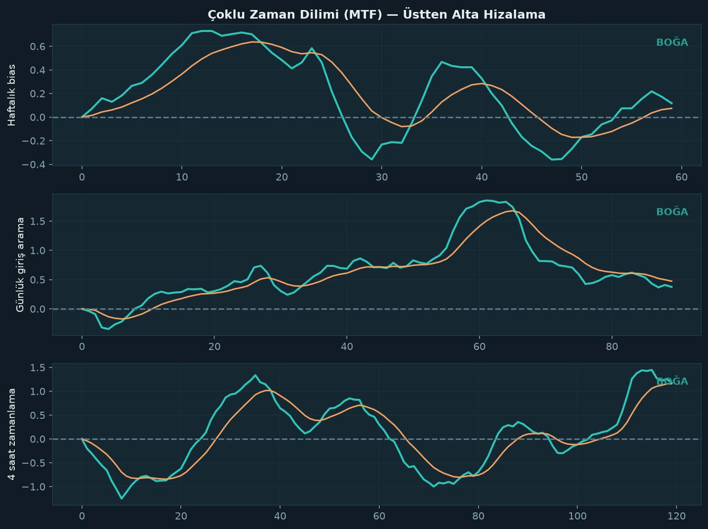
MTF’nin mantığı: üst grafik hakimdir
Üst zaman dilimi, alt grafikten daha “ağır” ve daha az gürültülüdür. Haftalık MACD sıfırın altındayken, 15 dakikalık boğa kesişimlerinin çoğu kısa ömürlü düzeltmelerdir. Tersine, haftalık MACD güçlü pozitifken günlük grafikteki ayı kesişimleri çoğu zaman “alımda fırsat” (buy the dip) adayı olarak okunabilir — tabii ki teyit ve stop ile.
Adım 1: İşlem tarzınıza göre üç grafik seçin
MTF için genelde üç katman yeterlidir: makro (bias), orta (teyit), giriş (tetik). Aşağıdaki eşleştirmeler başlangıç için iyi bir çerçevedir:
| Katman | Swing örneği | Gün içi örneği | Görev |
|---|---|---|---|
| Bias (üst) | Haftalık | Günlük | Ana yön: boğa mı, ayı mı? |
| Teyit (orta) | Günlük | 4 saat | MACD sıfır, histogram, yapı |
| Giriş (alt) | 4 saat | 15 dk – 1 saat | Kesişim, histogram dönüşü |
Adım 2: Üst grafikte bias belirleyin
Bias, o dönem için “hangi yönde işlem arayacağınız” tercihidir. MACD ile bias okumak için basit bir başlangıç kuralı:
- MACD çizgisi sıfırın üstünde ve histogram pozitif veya toparlanıyorsa → boğa bias
- MACD çizgisi sıfırın altında ve histogram negatif veya zayıflıyorsa → ayı bias
- MACD sıfır civarında sıkışmış, histogram yataysa → nötr / işlem yok
Bias bir emir değildir; sadece alt grafikte hangi sinyalleri ciddiye alacağınızı söyler. Ayı bias varken boğa kesişimi aramak yasak değildir — ama o zaman “kontra-trend” işlem yaptığınızı bilin ve pozisyon boyutunu küçültün.
Adım 3: Orta grafikte teyit arayın
Üst grafik boğa bias verdiyse, orta grafikte şunlara bakın:
- MACD sıfırın üstünde mi? (veya yakın zamanda yukarı kesmiş mi?)
- Fiyat önemli bir desteğe mi yaklaşıyor?
- Histogram düşüşten sonra küçülmeye veya pozitife geçmeye başladı mı?
Orta grafik “hazır mıyız?” sorusunu yanıtlar. Henüz hazır değilse alt grafikte kesişim gelse bile beklemek daha iyidir. Sabırsızlık, MTF’nin en çok bozulan noktasıdır.
Adım 4: Alt grafikte giriş tetikleyin
Bias ve teyit uyumluysa alt grafikte klasik MACD tetiklerini kullanın:
- Boğa bias: boğa sinyal çizgisi kesişimi
- Histogram negatiften pozitife dönüp büyümeye başlaması (agresif giriş)
- Destek seviyesinde kesişim + hacim artışı (ileri seviye)
Giriş anında stop seviyesini de belirleyin: genelde son swing dibinin altı veya destek kırılımının hemen altı. MTF, stop koymayı değiştirmez; sadece işlem yönünü süzer.
Adım 5: Hizalama kontrolü
“Hizalama” (alignment), üç grafikte MACD’nin aynı yönde konuşmasıdır. Tam hizalama nadir ve güçlü bir senaryodur: haftalık, günlük ve 4 saatlik MACD’nin hepsi sıfırın üstünde ve boğa kesişimi veya pozitif histogram bölgesinde. Bu durumda trend devamı işlemleri daha yüksek öncelik alır.
MTF örnek senaryo (swing, boğa)
Diyelim ki BIST’te bir hisse veya bir forex paritesi inceliyorsunuz. Haftalık MACD üç aydır sıfırın üstünde; histogram son haftada küçüldü ama hâlâ pozitif — boğa bias. Günlük grafikte fiyat 50 günlük ortalamaya (veya önceki swing bölgesine) geri çekildi; MACD sıfıra yakın ama histogram yukarı dönmeye başladı — teyit adayı. 4 saatlik grafikte boğa kesişimi oluştu — giriş tetik. Stop: son 4 saatlik swing dibinin altı. Hedef: bir önceki tepe veya riskin 2 katı. Bu, MTF’nin kağıt üzerindeki hikâyesidir; gerçekte her adım her zaman bu kadar temiz olmaz.
MTF’de sık yapılan hatalar
- Alt grafik hakimiyeti: 15 dakikalık boğa kesişimini görünce haftalık ayı bias’ı görmezden gelmek. Üst grafik her zaman önceliklidir.
- Çok fazla katman: Beş farklı zaman diliminde çelişen MACD okumak karar felcine yol açar. Üç katman yeterlidir.
- Bias’ı emir sanmak: “Haftalık boğa” demek “hemen al” demek değildir; sadece long aramak demektir.
- Teyitsiz agresiflik: Orta grafik hazır değilken alt grafikte erken giriş — stop mesafesi genişler, kalite düşer.
MTF günlük rutin (15 dakika)
Her işlem günü başında şu rutini uygulayabilirsiniz: (1) Haftalık grafiğe bak — bias notu yaz. (2) Günlük grafiğe bak — yapı ve MACD sıfır konumu. (3) Giriş grafiğini yalnızca notlar uyumluysa aç. Bu rutin, impulsif “grafik açıp kesişim avlama” alışkanlığını kırar. MACD’nin ritmini duymak, sürekli tıklamaktan çok düzenli dinlemeyi gerektirir.
Bölüm 15
Piyasa rejimleri: Trend mi, range mi? MACD’yi ne zaman kapatmalı?
MACD trend ve momentum göstergesidir; yatay (range) piyasada en çok zarar veren araçlardan biri haline gelebilir. Sorun MACD’nin “bozuk” olması değil; piyasanın rejiminin göstergeye uygun olmamasıdır. İyi bir trader önce “piyasa ne yapıyor?” diye sorar, sonra “MACD ne diyor?” diye sorar.
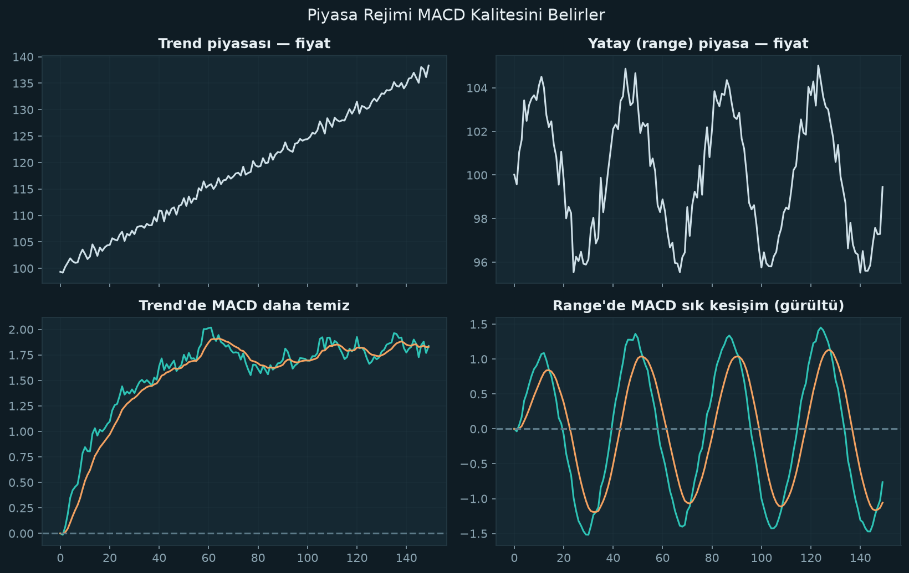
İki ana rejim: trend ve range
Trend rejimi: Fiyat net yönde ilerler — yükselen tepeler ve dipler (boğa) veya alçalan tepeler ve dipler (ayı). MACD sıfır çizgisinin bir tarafında kalma eğilimi gösterir; kesişimler genelde trend yönünde daha anlamlıdır.
Range (yatay) rejim: Fiyat belirli bir bant içinde gidip gelir. Destek ve direnç arasında sıkışır. MACD çizgisi sıfır etrafında salınır; sinyal çizgisi ile sürekli kesişir. Bu kesişimlerin çoğu “sahte” veya kısa ömürlüdür.
Rejimi nasıl tanırsınız?
Tek bir göstergeye güvenmeyin; fiyat yapısı birincildir. Aşağıdaki işaretler bir araya geldiğinde range ihtimali yükselir:
- Son birkaç haftada net yükselen veya alçalan tepe/dip dizisi yok
- Fiyat 20 veya 50 periyot EMA etrafında yatay gidiyor
- MACD sıfır çizgisini defalarca kesiyor (whipsaw)
- Önemli haber veya makro katalizör yok; hacim düşük ve sabit
- Bollinger bantları daralmış (sıkışma) — volatilite düşük
Trend rejiminde ise tam tersi: yapısal HH/HL veya LH/LL, MACD’nin uzun süre sıfırın bir tarafında kalması, kesişim sonrası fiyatın yapıyı sürdürmesi tipiktir.
| Özellik | Trend rejimi | Range rejimi |
|---|---|---|
| Fiyat yapısı | HH/HL veya LH/LL | Yatay tepe ve dipler |
| MACD sıfır çizgisi | Uzun süre tek tarafta | Sık geçiş, sıfır etrafı salınım |
| Kesişim kalitesi | Genelde daha yüksek | Genelde düşük (gürültü) |
| MACD stratejisi | Trend devamı, pullback girişi | Kapalı veya sadece uçlarda |
MACD’yi ne zaman kapatmalı (veya görmezden gelmeli)?
“Kapatmak” literalliğinde göstergeyi silmek zorunda değilsiniz; anlamı “MACD sinyallerine göre işlem açmamak”tır. Aşağıdaki durumlarda MACD’yi işlem kararı için devre dışı bırakmayı düşünün:
- Belirgin range: Destek–direnç arasında en az 3–4 temas olduysa ve yapı yataysa, MACD kesişimlerini işlem tetikleyici saymayın.
- Önemli haber öncesi/sonrası: FED, enflasyon, şirket bilançosu gibi olaylarda MACD gecikmeli kalır; ani spike’lar sinyali anlamsızlaştırır.
- Aşırı düşük hacim: Tatil günleri, öğle arası, yaz ayları düşük likidite — kesişimler güvenilmez.
- MACD ile fiyat çelişkisi: Güçlü boğa trendinde sürekli ayı uyumsuzluğu varsa ama fiyat yeni zirve yapıyorsa, MACD’ye karşı pozisyon biriktirmeyin.
- Üst zaman dilimi nötr: Haftalık MACD sıfırda sıkışmışsa alt grafikte agresif MACD işlemi yapmayın.
Range’de MACD hiç kullanılmaz mı?
Kullanılabilir — ama farklı amaçla. Range’in üst bandına (direnç) yaklaşırken MACD ayı uyumsuzluğu veya ayı kesişimi “dikkat” sinyali olabilir; alt banda (destek) yaklaşırken boğa sinyalleri. Ancak bu, trend takip mantığından farklıdır; daha çok mean reversion (ortalamaya dönüş) yaklaşımına yakındır ve dar stop, küçük hedef gerektirir.
Orta seviye öneri: Range tespit ettiyseniz MACD kesişim stratejinizi durdurun; trend kırılımı (breakout) veya üst zaman diliminde yeni bias oluşana kadar bekleyin. Sabır, MACD kullanıcısının en az konuşulan becerisidir.
Rejim geçişini erken yakalamak
Trendden range’e veya range’den trende geçişler MACD’de genelde şu sırayla görünür: önce histogram küçülmeye başlar (tempo kaybı), sonra sıfır çizgisi etrafında salınım artar, ardından yapısal tepe/dip kırılımları gelir. Bu erken işaretleri gördüğünüzde mevcut strateji iskeletinizi gözden geçirin — trend devamı (İskelet A) range başlangıcında üst üste stop üretir.
Pratik bir “rejim skoru” tutabilirsiniz: her sabah 0–3 arası puan verin. 0 = net range, 3 = net trend. 1–2 arası belirsizlik — işlem boyutunu yarıya indirin veya pas geçin. MACD bu skorda tek başına karar vermez; fiyat yapısı ve hacimle birlikte not edilir.
Trend rejiminde MACD
- İskelet A ve B aktif
- Karşı trend işlemler küçük boyut
- Trailing stop kullanılabilir
- Uyumsuzluklara şüpheyle yaklaş
Range rejiminde MACD
- Kesişim stratejisi kapalı
- Sadece bant uçlarında dikkat
- Dar stop, küçük hedef
- Kırılım bekle veya nakit kal
Bölüm 16
Strateji atölyesi: İskelet A, B ve C — detaylı kurallar
Önceki bölümlerde MACD’nin parçalarını öğrendiniz. Bu bölüm bir “atölye”dir: üç somut strateji iskeletini adım adım, test edilebilir kurallarla yazacağız. Bunlar kutsal sistemler değildir; öğrenme ve disiplin için şablonlardır. Kendi deneyiminizle uyarlayın, ama kuralları keyfi bozmayın.
Atölye öncesi: ortak kurallar
Üç iskelet de şu ortak ilkeleri paylaşır:
- İşlem öncesi üst zaman dilimi bias’ı yazılı olarak not edilir
- Range rejiminde İskelet A ve B durdurulur; İskelet C yalnızca uçlarda ve küçük boyutla
- Her işlemde stop ve hedef işlem açılmadan önce belirlenir
- Günlük maksimum risk limiti aşılırsa o gün yeni işlem açılmaz
İskelet A — Trend devamı (pullback girişi)
Felsefe: Ana trend yönünde, düzeltme sonrası yeniden giriş. MACD burada “trend hâlâ yaşıyor mu?” sorusuna cevap arar.
Zaman dilimi: Bias = haftalık veya günlük; giriş = 4 saat veya 1 saat.
Giriş kuralları (LONG örneği):
- Üst grafikte MACD sıfırın üstünde (boğa bias)
- Giriş grafiğinde fiyat önceki yükseliş trendini bozmamış (HL yapısı korunuyor)
- MACD geçici olarak sinyal çizgisinin altına inmiş veya histogram küçülmüş (düzeltme)
- Boğa sinyal çizgisi kesişimi oluştu
- Histogram pozitife geçti veya büyümeye başladı (teyit)
Stop: Son swing dibinin altı veya ATR tabanlı (ör. 1.5 × ATR14) mesafe.
Hedef: Minimum 1.5R (riskin 1.5 katı); kısmi kâr önceki tepe veya dirençte.
İptal: Kesişimden sonra fiyat stop’u kırarsa veya günlük MACD sıfırın altına inerse pozisyon kapatılır.
İskelet A — örnek senaryo
EUR/USD günlük grafikte iki aydır yükseliş trendinde. Haftalık MACD pozitif. Fiyat 1.0850 desteğine geri çekildi; 4 saatlik MACD ayı kesişimi yaptıktan sonra tekrar boğa kesişimi verdi. Giriş 1.0870, stop 1.0820 (50 pip), hedef 1.0950 (1.6R). Sonuç: trend devam etti, hedef vurdu. Bu “temiz” bir A örneğidir.
İskelet B — Histogram dönüşü + kesişim teyidi
Felsefe: Momentum önce yavaşlar (histogram), sonra yön değiştirir (kesişim). Erken histogram girişi yerine kesişimi bekleyerek yanlış alarmı azaltır.
Zaman dilimi: Giriş = 1 saat veya 4 saat; bias = bir üst dilim.
Giriş kuralları (LONG örneği):
- Histogram en az 3–5 bar boyunca negatif bölgede küçüldü (tempo zayıflıyor)
- Histogram ilk kez büyümeye başladı veya sıfıra yaklaştı — henüz işlem yok
- Boğa sinyal çizgisi kesişimi oluştu — işlem tetik
- Bias yönüyle uyumlu (tercihen boğa bias)
- Destek seviyesine veya yuvarlak sayıya yakınlık varsa öncelik
Stop: Kesişim mumunun dibinin altı veya son swing low.
Hedef: 2R veya bir sonraki direnç; trailing stop ile uzatılabilir.
İptal: Kesişimden sonraki 2–3 mumda histogram tekrar derinleşirse erken çıkış.
İskelet B — örnek senaryo
Bir hisse senedinde günlük grafik yataydan çıkmaya başladı. MACD histogram 8 gün negatif ve küçülüyordu. Dokuzuncu gün histogram yeşile döndü, ertesi gün boğa kesişimi geldi. Giriş 48.20 TL, stop 46.80 TL, hedef 51.00 TL (yaklaşık 2R). Fiyat 50.50’de takıldı; kısmi kâr alındı. Tam hedef olmasa da kural disiplinine uygun bir B işlemiydi.
İskelet C — Uyumsuzluk avcısı (dönüş adayı)
Felsefe: Fiyat ile MACD ayrıştığında momentum yorgunluğu olabilir. Bu iskelet en riskli olanıdır; güçlü trendlerde erken ters pozisyon tuzağına düşer.
Zaman dilimi: Uyumsuzluk = günlük; giriş = 4 saat.
Giriş kuralları (boğa uyumsuzluğu → LONG):
- Fiyat belirgin daha düşük dip yaptı; MACD daha yüksek dip yaptı (boğa uyumsuzluk)
- Uyumsuzluk en az iki tepe/dip noktasıyla okunaklı
- MACD boğa kesişimi veya histogram pozitife dönüşü — teyit şart
- İsteğe bağlı: RSI da benzer uyumsuzluk gösteriyorsa güven artar
- Güçlü ayı trendinde (LH/LL) bu iskelet kullanılmaz veya boyut yarıya iner
Stop: Uyumsuzluk dibinin altı (fiyatın yeni dip yapması senaryoyu bozar).
Hedef: 1.5–2R veya range ortası / önceki direnç.
İskelet C — örnek senaryo
Bitcoin günlük grafikte 60.000’den 52.000’e düştü (düşük dip). MACD dibinde önceki 55.000 düşüşünden daha yüksekte kaldı — boğa uyumsuzluk. 4 saatlikte kesişim gelince giriş 53.500, stop 51.800, hedef 57.000. Fiyat 56.200’ye çıktıktan sonra geri döndü; trailing stop ile 55.000’de çıkıldı. Senaryo çalıştı ama volatilite yüksekti.
İskelet karşılaştırma tablosu
| İskelet | Odak | Risk seviyesi | İdeal rejim |
|---|---|---|---|
| A — Trend devamı | Pullback + kesişim | Orta | Trend |
| B — Histogram + teyit | Tempo dönüşü | Orta-düşük | Trend başlangıcı / düzeltme sonu |
| C — Uyumsuzluk | Dönüş adayı | Yüksek | Range uçları / zayıf trend |
Atölye ödevi: Demo hesapta her iskelet için en az 10 işlem kaydı tutun. Sütunlar: tarih, iskelet, bias, giriş, stop, hedef, sonuç, “kural ihlali var mı?”. İki ay sonra hangi iskeletin size uyduğunu veri söyleyecektir.
İskelet seçim rehberi
Hangi iskeleti ne zaman kullanacağınızı netleştirmek için basit bir karar ağacı: Güçlü trend var mı? Evet → önce A. Trend yeni mi başlıyor veya düzeltme bitiyor mu? → B. Belirgin uyumsuzluk ve zayıf trend mi? → C (küçük boyut). Range mi? → üçü de kapalı, kırılım bekle. Aynı gün içinde üç iskeleti de “denemek” disiplin değil, kumar davranışıdır; gün başında birincil iskelet seçin.
Kayıp işlemden sonra ne yapılır?
Stop olan bir MACD işleminden sonra “hemen telafi” dürtüsü en tehlikeli andır. Doğru prosedür: (1) İşlem günlüğüne kaydet — kural ihlali var mıydı? (2) Kural ihlali yoksa, sistem çalışıyor demektir; tek kayıp anormal değildir. (3) Kural ihlali varsa, iskelet kurallarını tekrar oku — ayar değiştirme. (4) Günlük risk limitine yakınsanız o gün durun. MACD stratejisi uzun vadeli istatistik oyunudur; tek işlem sonucu stratejiyi değiştirme gerekçesi olmamalıdır.
Bölüm 17
Elder Impulse: Basitleştirilmiş fikir ve dikkat notları
Dr. Alexander Elder, teknik analiz eğitiminde “Impulse System” (İtme Sistemi) adını verdiği bir renk kodlu yaklaşım önermiştir. Fikir, MACD ve EMA’yı birleştirerek “şu an alım mı, satım mı, bekle mi?” sorusuna hızlı görsel cevap vermektir. Bu bölümde Elder Impulse’u basitleştirilmiş hâliyle anlatıyoruz; platformunuzda hazır gösterge yoksa mantığını manuel de uygulayabilirsiniz.
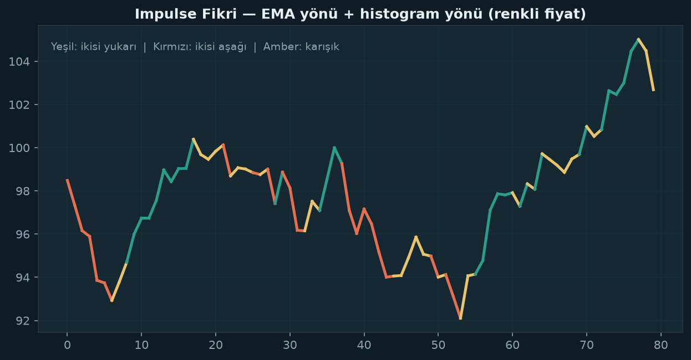
Impulse’un üç bileşeni
Elder’in orijinal sisteminde (basitleştirilmiş özet):
- EMA: Genelde 13 periyotluk EMA, fiyatın üstünde mi altında mı?
- MACD histogram: Önceki bara göre büyüyor mu, küçülüyor mu?
- MACD çizgisi: Histogramla birlikte yön tutarlılığı
Renk mantığı (yaygın yorum):
- Yeşil bar: EMA ve MACD histogram aynı yönde hızlanıyor → boğa itmesi
- Kırmızı bar: EMA ve MACD histogram aynı yönde satış tarafında → ayı itmesi
- Mavi (veya nötr) bar: EMA ile histogram çelişiyor → bekle, işlem yok
MACD trader’ı için pratik kullanım
Impulse’u ayrı bir “sihirli sistem” olarak değil, MACD okumanıza renk filtresi olarak düşünün:
- Yeşil bölgede yalnızca long veya long bias arayın
- Kırmızı bölgede yalnızca short veya nakit kalın
- Mavi bölgede yeni pozisyon açmayın; mevcut pozisyonu yönetin veya küçültün
Bu, MTF bias fikriyle uyumludur: üst grafik yeşil, alt grafikte boğa kesişimi — İskelet A ile birleştirilebilir bir çerçevedir.
Basitleştirilmiş manuel kontrol listesi
Platformunuzda Impulse göstergesi yoksa her mum kapanışında şunu sorun:
2) MACD histogram önceki bara göre büyüdü mü? (Evet = hızlanma / Hayır = yavaşlama)
3) İkisi aynı yönde mi? → Yeşil veya kırmızı. Değilse → Mavi (bekle).
Dikkat notları ve sınırlamalar
- Repaint riski: Bazı platformlarda renk mum kapanmadan değişebilir. Kararları mümkün olduğunca mum kapanışında verin.
- Yatay piyasa: Impulse da range’de sık renk değiştirir; mavi bölümler uzar. Rejim filtresi olmadan kullanmayın.
- 13 EMA: Elder 13 EMA kullanır; siz 20 veya 50 EMA ile çalışıyorsanız sonuçlar farklılaşır. Tutarlı kalın.
- Tek başına yeterli değil: Stop, hedef ve pozisyon boyutu Impulse’ta yoktur; bunları kendiniz eklersiniz.
Sonuç: Elder Impulse, MACD histogram ve EMA’yı “aynı anda aynı yönde mi?” diye soran pratik bir özetlemedir. Öğrenmeye değer; ama İskelet A/B/C kurallarının yerine geçmez — onlarla birlikte kullanıldığında daha anlamlıdır.
Impulse ve İskelet A birleşimi
Pratik bir filtre: Üst grafikte Impulse yeşil (veya manuel kontrolde EMA13 üstü + histogram büyüyor) iken İskelet A pullback girişi arayın. Kırmızı Impulse bölgesinde A iskeletini kapatın. Mavi bölgede yeni giriş yok — mevcut pozisyonu yönetin veya kârı koruyun. Bu basit eşleştirme, Elder fikrini bu kitaptaki iskelet diline bağlar.
Bölüm 18
MACD’yi RSI, hacim, 200 EMA ve seviyelerle birleştirmek
MACD güçlü bir momentum aracıdır ama yalnız değildir. En iyi kullanım, onu orkestra şefi sanmak değil, uyumlu enstrümanlardan biri yapmakla olur. Bu bölümde dört yaygın tamamlayıcıyı MACD ile nasıl eşleştireceğinizi adım adım ele alıyoruz.
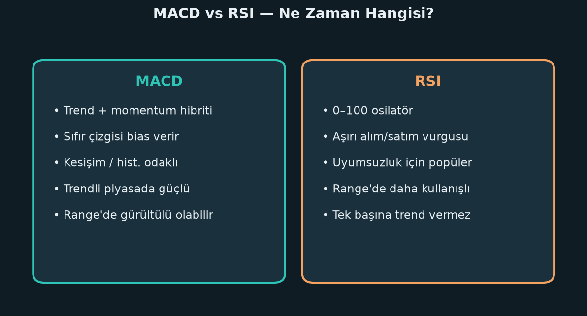
MACD ve RSI: iki farklı soru
MACD “trend ve momentum hangi yönde, hızlanıyor mu?” diye sorar. RSI (Relative Strength Index) “son X bar içinde yükseliş mi baskın, aşırı mı?” diye sorar. RSI 0–100 arasında sıkışır; 70 üstü aşırı alım, 30 altı aşırı satım bölgeleri olarak okunur (trendli piyasada bu seviyeler esneyebilir).
Birlikte kullanım örnekleri:
- Çift teyit: Boğa MACD kesişimi + RSI 30–50 bandından yukarı dönüş (aşırı satımdan çıkış)
- Çift uyumsuzluk: Fiyat yeni tepe, MACD ve RSI birlikte düşük tepe — ayı uyumsuzluğu güçlenir
- Filtre: RSI 70 üstündeyken boğa MACD kesişimine “geç kalınmış” muamelesi; yeni long yerine kâr realizasyonu düşünülür
Hacim: sinyalin kalabalık desteği
MACD fiyat ve zamandan türetilir; hacim doğrudan formülde yoktur. Oysa kırılım veya kesişim düşük hacimle geliyorsa “zayıf katılım” olabilir. Yüksek hacimle gelen MACD kesişimi, özellikle destek/direnç kırılımında, daha ciddiye alınır.
- Kesişim mumunda hacim, son 20 bar ortalamasının üstünde mi?
- Kırılım barında hacim artışı var mı? (volume spike)
- Düşük hacimli yatay bölgede MACD sinyallerini küçültün veya atlayın
İleri seviye: OBV (On-Balance Volume) veya hacim profili ile MACD uyumsuzluğu aramak mümkündür; başlangıç için basit hacim çubuğu karşılaştırması yeterlidir.
200 EMA: büyük trend filtresi
200 periyotluk üssel hareketli ortalama (200 EMA), uzun vadeli trend eğiliminin popüler bir özetidir. “Fiyat 200 EMA üstünde = uzun vade boğa” basitleştirmesi her zaman doğru olmasa da MACD filtresi olarak iş görür.
| Fiyat konumu | MACD tercihi | Kaçınılacak |
|---|---|---|
| 200 EMA üstü | Boğa kesişim, pullback long | Aggressive short (kontra-trend) |
| 200 EMA altı | Ayı kesişim, pullback short | Aggressive long |
| 200 EMA etrafında sıkışma | MACD işlemini durdur | Trend devamı varsayımı |
MTF ile birlikte: haftalık 200 EMA üstü + günlük boğa MACD + 4 saat kesişim, güçlü bir “üçlü filtre” örneğidir.
Destek ve direnç: sinyalin adresi
MACD’nin ne dediği kadar nerede dediği de önemlidir. Aynı boğa kesişimi, önemli destekte anlamlı; direnç altında şüpheli olabilir.
- Yatay destek/direnç (önceki tepe/dip, yuvarlak sayılar)
- Trend çizgisi teması
- Fibonacci geri çekilme bölgeleri (0.382, 0.5, 0.618) — MACD teyidi ile
- Önceki günün yüksek/düşük (PDH/PDL) — gün içi işlemde
Örnek kombinasyon şablonu
Long şablonu
- Fiyat 200 EMA üstü
- Günlük MACD boğa bias
- Fiyat destek bölgesinde
- 4 saat boğa kesişimi
- RSI 40–60, yukarı dönüyor
- Hacim ortalamanın üstü
Kaçınma şablonu
- Range ortasında MACD kesişimi
- RSI aşırı bölgede ters kesişim
- Düşük hacim, haber öncesi
- 200 EMA’da sıkışma
- Üst TF ayı, alt TF boğa
Altı koşulun hepsi aynı anda mükemmel olmayabilir; ama en az dördü uyumluysa işlem “kaliteli aday” sayılır. İki veya daha az uyum varsa pas geçin.
RSI periyodu ve MACD uyumu
RSI varsayılan 14 periyottur; MACD 12-26-9 ile benzer “orta vade” karakter taşır. RSI’yı 7’ye düşürmek MACD’den daha hızlı sinyal üretir — çift filtre olarak iyi çalışabilir (MACD kesişimi + RSI hızlı toparlanma). RSI 21 gibi yavaş periyotta aşırı alım/satım seviyeleri daha az tetiklenir; swing trader’lar için MACD ile daha uyumlu olabilir. İki göstergeyi birlikte kullanırken ikisinin de periyodunu aynı hafta değiştirmeyin.
Gösterge çakışması: ne zaman çelişki normal?
MACD boğa derken RSI 65–70 bandında olabilir — bu her zaman çelişki değildir; güçlü trendde RSI uzun süre aşırı alımda kalabilir. Çelişki, MACD histogram küçülürken RSI yeni tepe yapıyorsa veya MACD ayı kesişimi verirken RSI hâlâ 50 üstünde güçlüyse daha anlamlıdır. Göstergeleri “oylama” ile değil, rol paylaşımı ile okuyun: MACD yön, RSI yorgunluk, hacim katılım, seviye adres.
Bölüm 19
Risk yönetimi: Ödül/risk, stop, pozisyon boyutu ve kontrol listesi
En iyi MACD sinyali, stop ve pozisyon boyutu olmadan bir fikirden ibarettir. Risk yönetimi sıkıcı görünür; hesap korumanın tek gerçek yoludur. Bu bölüm matematiği basit tutar: yüzde, oran ve disiplin.
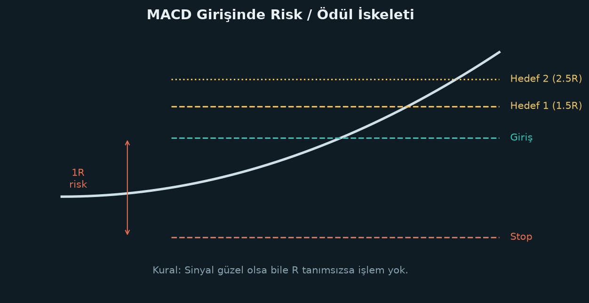
Risk ve ödül (R) kavramı
1R, bir işlemde kaybetmeyi göze aldığınız tutardır — genelde giriş ile stop arasındaki mesafenin parasal karşılığı. 2R hedef, kâr hedefinizin riskin iki katı olduğu anlamına gelir.
Hedef kâr = 2R → Risk/Ödül oranı = 1:2
Örnek: 1000 TL risk (1R) alıyorsunuz; hedef 2000 TL kâr (2R). Beş işlemden üçünü kaybedip ikisini kazansanız: −3000 + 4000 = +1000 TL net. Bu, neden R mantığının önemli olduğunu gösterir.
MACD gecikmeli olduğu için stop mesafeleri bazen geniş kalır; bu durumda pozisyon boyutunu küçültün — stopu daraltmaya zorlanmayın (yanlış stop, erken çıkış demektir).
Stop loss: MACD işlemlerinde nereye?
- Yapısal stop: Son swing dip/tepe altı/üstü — en yaygın
- ATR stop: 1.5–2 × ATR(14) — volatil enstrümanlarda
- Zaman stopu: X mum içinde hedefe gitmediysen çık — momentum öldüyse
- MACD iptal: Girişten sonra ters kesişim + histogram derinleşmesi
Stop’u “ne kadar kaybetmek istemiyorum”dan değil, “senaryo nerede bozulur?”dan koyun. Boğa kesişimi long’unda senaryo, fiyatın swing dibinin altına inmesiyle bozulur — stop orada.
Pozisyon boyutu: basit formül
Hesabınızın küçük bir yüzdesini (ör. %1–2) tek işlemde riske atın. Formül:
Örnek: 50.000 TL hesap, %1 risk = 500 TL. Giriş 100 TL, stop 95 TL → mesafe 5 TL. Pozisyon = 500 / 5 = 100 adet. Fiyat 95’e inerse 500 TL kayıp — planlandığı gibi.
Kâr alma: hedef ve trailing
- Sabit hedef: 1.5R veya 2R — disiplinli, başlangıç için ideal
- Kısmi kâr: 1R’de pozisyonun yarısını kapat, kalanı trailing ile taşı
- Trailing stop: Fiyat lehinize gittikçe stopu yukarı çek (ör. son 4 saatlik dip)
- MACD çıkışı: Ayı kesişimi veya histogram aşırı bölgede ters dönüş — erken çıkış sinyali
Günlük ve haftalık risk limitleri
| Limit | Örnek değer | Sonuç |
|---|---|---|
| İşlem başına risk | %1 | 50 kayıp üst üste bile hesap teorik olarak ayakta |
| Günlük max kayıp | %3 | 3 ardışık kayıp → o gün işlem yok |
| Haftalık max kayıp | %6–8 | Hafta sonu strateji gözden geçirme |
| Açık pozisyon sayısı | 2–3 max | Korelasyonlu enstrümanlarda risk birikmez |
İşlem öncesi kontrol listesi
Aşağıdaki listeyi her işlemde (veya en azından başlangıçta yazılı olarak) doldurun. Bir madde “hayır” ise işlemi erteleyin.
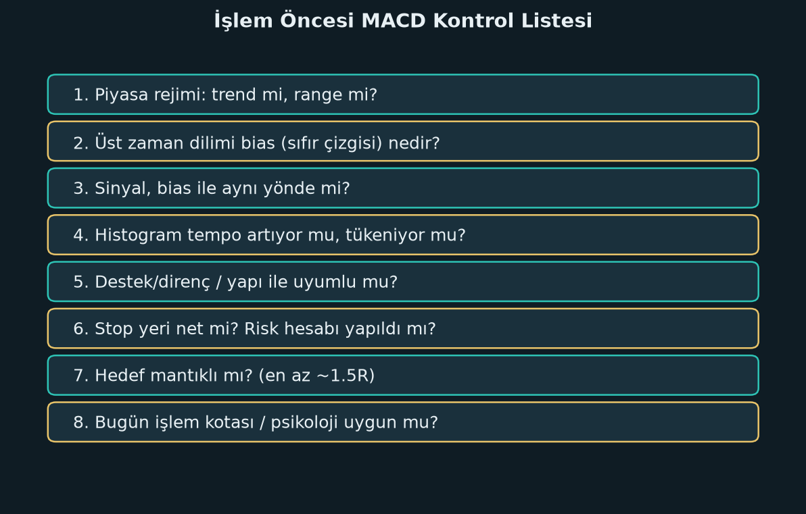
- Üst zaman dilimi bias’ım net mi? (boğa / ayı / nötr)
- Piyasa rejimi trend mi, range mi?
- MACD sinyali bias ile uyumlu mu?
- Hangi iskelet? (A / B / C) Kurallar sağlandı mı?
- Histogram tempo ne diyor?
- RSI / hacim / 200 EMA teyidi var mı? (en az biri)
- Giriş yakınında destek/direnç biliyor muyum?
- Stop seviyesi yapısal olarak mantıklı mı?
- Hedef en az 1.5R mı?
- Pozisyon boyutu hesaplandı mı? Günlük limit aşılmıyor mu?
Bu bölüm finansal tavsiye değildir. Risk toleransınız, vergi durumunuz ve yasal çerçeveniz farklı olabilir. Gerçek parayla işlem öncesi profesyonel danışmanlık düşünün.
Psikoloji ve risk: teknik olmayan ama kritik katman
MACD sinyali geldiğinde “kaçırma korkusu” (FOMO) pozisyonu planlananın iki katına çıkarır. Önceden hesaplanmış pozisyon boyutu formülü bu duygusal anlarda sizi korur — formülü işlem anında değil, sakinken yazın ve ekrana yapıştırın. Ardışık üç kayıptan sonra “bugün piyasa beni sevmiyor” hissiyle dördüncü işlemi büyütmek, risk yönetiminin tam tersidir. Günlük limit kuralları duygusal devre kesicidir; MACD ne derse desin limit dolunca ekranı kapatmak profesyonel bir davranıştır.
Uzun vadeli sürdürülebilirlik
İyi bir MACD trader’ı her ay %20 kazanmak zorunda değildir. Sürdürülebilir hedef: kurallara uyum, tutarlı R yönetimi ve drawdown (seri kayıp dönemi) sırasında boyutu küçültmek. Altı ay demo + işlem günlüğü, altı ay küçük canlı boyut — bu tempo, “sinyalin ritmini” vücuda öğretmek için gerçekçi bir yol haritasıdır. Part 3’ü burada bitiriyoruz; artık sadece okumak değil, uygulamak ve kaydetmek sıradaki adımdır.
Bölüm 4 · 1
Psikoloji ve disiplin: MACD’yi doğru kullanmanın görünmez katmanı
Bu kitabın son bölümüne geldiğinizde artık MACD’nin ne ölçtüğünü, kesişimleri nasıl okuyacağınızı, histogramın ne anlattığını ve uyumsuzluğu nasıl süzeceğinizi biliyorsunuz. Teknik bilgi burada bitmiyor; asıl sınav çoğu zaman grafikte değil, kafanızın içinde başlar. İki trader aynı MACD sinyalini görür; biri planına sadık kalır ve küçük kayıpla çıkar, diğeri FOMO ile büyük pozisyon açar ve hesabını zorlar. Fark çoğu zaman formülde değil, psikolojide ve disiplindedir.
MACD sakin görünür: çizgiler, barlar, sıfır çizgisi… Sanki duygudan uzak bir dil konuşur. Oysa siz o çizgileri okurken beyniniz sürekli “kaçırıyor muyum?”, “bu sefer kesin tutar”, “bir kere daha denesem toparlarım” gibi sesler üretir. Bu sesler tek başına kötü değildir; tehlike, onları işlem planının yerine koymanızdır. Bu bölümde MACD’ye bağlanmamayı, FOMO’yu tanımayı ve uzun vadede ayakta kalacak bir rutin kurmayı konuşacağız.
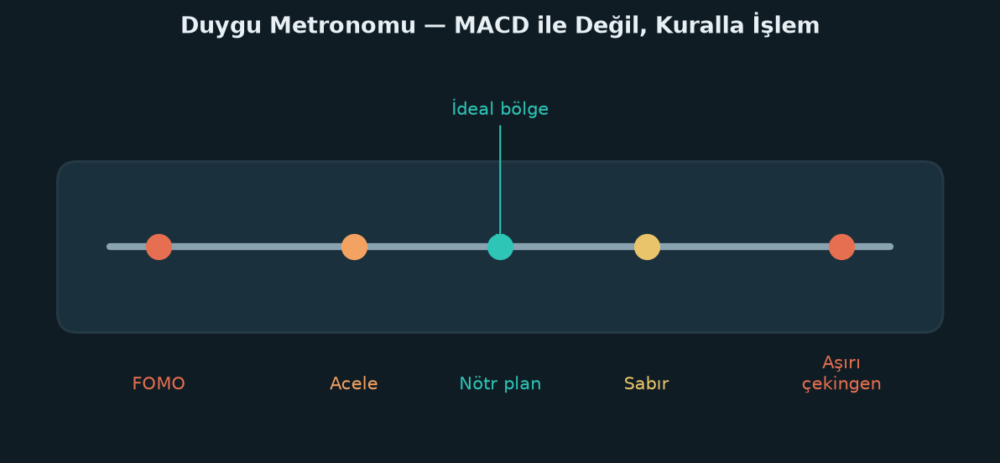
MACD’ye bağlanmama: gösterge değil, süreç
“MACD’ye bağlanmak” derken kastedilen şey, her yeşil kesişimi kutsal emir sanmak, her kırmızı kesişimde paniklemek veya kayıp serisinde ayarları değiştirerek “bu sefer farklı olacak” demektir. MACD bir araçtır; sizin işiniz onu bir karar sisteminin parçası yapmak, tek başına tanrı ilan etmek değil. Bağlanma genelde şu üç yoldan gelir:
- Geçmişte bir kez “mükemmel” sinyal görmek. Zihin o anı seçer, binlerce gürültülü kesişimi unutur. “MACD her zaman böyle yapar” yanılgısı doğar.
- Kayıp sonrası göstergeye suç atma. “MACD yanıldı” demek kolaydır; çoğu zaman asıl sorun filtresiz işlem, büyük pozisyon veya yanlış piyasa rejimidir.
- Sürekli ayar avı. Her hafta farklı 12-26-9 varyasyonu denemek, strateji geliştirmek değil kaçmaktır.
Bağlanmamak demek, MACD’yi soğukkanlılıkla kullanmaktır: “Bu sinyal planıma uyuyor mu?” sorusunu sorarsınız; uyuyorsa işlem, uymuyorsa beklemek. Gösterge sizi ikna etmez; siz göstergeyi süzgeçten geçirirsiniz. Bu kitapta öğrendiğiniz trend filtresi, sıfır çizgisi, histogram ve üst zaman dilimi bias’ı tam da bu bağlanmayı önlemek içindir.
FOMO: Kaçırma korkusu ve MACD’nin gecikmesi
FOMO (Fear Of Missing Out / kaçırma korkusu), MACD kullananlar için özellikle acı vericidir çünkü gösterge doğası gereği gecikmelidir. Büyük hareket başladığında MACD çizgisi henüz sinyali kesmemiş olabilir; fiyat zaten yüzde beş–on gitmiştir. Tam o anda “geç kaldım, şimdi girmezsem daha da kaçar” düşüncesi devreye girer. İşte FOMO burada MACD’yi bypass eder: kesişim beklenmez, histogram teyidi atlanır, stop mesafesi “sığ” tutulur çünkü “fırsat kaçıyor” hissi acı verir.
FOMO’yu yenmenin yolu motivasyon konuşması değil, kurallardır. Örneğin: “Boğa kesişimi olmadan long açmam”, “Risk işlem başına hesabımın yüzde birinden fazla olmaz”, “Üç ardışık kayıptan sonra o gün işlem kapatırım.” Bu kurallar kaçırılan hareketleri azaltmaz; ama kaçırılan hareket yüzünden yapılan kötü işlemleri azaltır. Piyasada her gün hareket vardır; hesabınız her gün hazır olmak zorunda değildir.
Disiplin: tekrarlanabilir rutin
Disiplin, her gün ilham geldiğinde değil, sıkıldığınızda veya öfkeli olduğunuzda aynı şeyi yapmaktır. MACD okuyucusu için disiplinli rutin şöyle görünebilir:
- Belirli saatlerde grafik taraması (sabah veya kapanış sonrası; gün içinde sürekli değil).
- Üst zaman diliminde bias notu: MACD sıfırın neresinde?
- Aday sinyal listesi: sadece plana uyanlar.
- İşlem günlüğü: giriş nedeni, stop, hedef, sonuç — duygu notu dahil.
- Haftalık gözden geçirme: hangi sinyal türü işe yaradı, hangisi gürültüydü?
Bu rutin sıkıcıdır. İyi trader’lar sıkıcı rutini sever çünkü sıkıcılık, rastgelelikten daha az pahalıya gelir. MACD size ritim verir; disiplin o ritmi dinlemenizi sağlar. Bir sonraki bölümde mitler ve hataları konuşurken göreceksiniz: çoğu “MACD çalışmıyor” şikâyeti aslında “kuralsız kullandım” cümlesinin başka hâlidir.
Rutini başlatmanın en kolay yolu, her işlem günü aynı soruyu sormaktır: “Bugün MACD bana işlem mi diyor, yoksa bekle mi?” Cevap belirsizse varsayılan “bekle”dir. Bu tek cümle, FOMO’nun yarısını keser.
Öfke, intikam işlemi ve “kanıtlama” dürtüsü
Bir stop olduktan sonra “piyasa bana yaptı” hissi normaldir. Tehlikeli olan, bir sonraki mumda ters yönde, iki kat pozisyonla “intikam” almaktır. MACD bu noktada size yeni bir kesişim sunabilir; ama o kesişim plan dışıdır, duygu içindir. İntikam işlemlerinde histogram teyidi aranmaz, üst zaman dilimi unutulur, stop “biraz daha geniş” tutulur. Sonuç öngörülebilir.
Bunun karşı ilacı basittir: stop olduktan sonra minimum bekleme süresi koyun — örneğin aynı enstrümanda 30 dakika veya bir sonraki seans. Bu sürede MACD ne derse desin, yeni işlem yok. Soğukkanlılık geri gelince grafik yine orada olacaktır.
Aşırı güven ve “artık anladım” tuzağı
Üç ardışık kazançlı MACD işleminden sonra beyin “sistemi çözdüm” moduna geçer. Pozisyon boyutu sessizce büyür, filtreler gevşer, “bu kesişim çok bariz” denir. Piyasa tam da bu anlarda rejim değiştirir: trend biter, range başlar, whipsaw gelir. Aşırı güven, korkudan farksız şekilde hesabı zorlayabilir. Kazanç serisinde yapılacak en iyi şey, boyutu sabit tutmak veya küçültmektir — büyütmek değil.
İşlem günlüğünde psikoloji sütunu
Teknik notların yanına duygu sütunu koyun: “sakin”, “FOMO”, “sıkıldım”, “intikam”, “aşırı güven”. Bir ay sonra bu sütun, hangi duyguların en pahalı işlemleri ürettiğini gösterir. Çoğu trader “MACD yanlış” der; günlük “FOMO ile girdim” der. Fark, sorumluluğu göstergeden alıp sürece taşımaktır. Psikoloji bölümünü okudunuz diye artık duygusuz olmayacaksınız; duyguyu fark edip plana geri döneceksiniz.
Bölüm 4 · 2
Mitler ve sık hatalar: MACD hakkında yanlış inanılanlar
MACD yıllardır öğretildiği için etrafında kalın bir mit tabakası oluşmuştur. Bazıları umut vaat eder, bazıları gereksiz korku salar. Bu bölümde hem mitleri yıkacağız hem de sahada en çok tekrarlanan hataları — sadece liste değil, neden yapıldıkları ve nasıl düzeltilecekleriyle — geniş anlatacağız. Amacımız sizi mükemmel trader yapmak değil; pahalı yanılgılardan korumaktır.
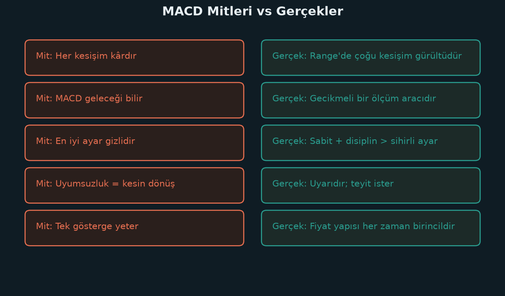
Mit 1: “Yeşil kesişim = kesin al”
Bu, en yaygın ve en maliyetli mittir. Boğa kesişimi, MACD çizgisinin sinyal çizgisini aşağıdan yukarı kesmesidir — momentumun kısa vadede toparlandığını gösterebilir. “Kesin al” ifadesi ise garanti vaat eder; MACD garanti vermez. Yatay piyasada on ardışık boğa kesişimi olabilir ve hepsi whipsaw (kırbaç) ile biter. Trendli piyasada aynı kesişim anlamlı olabilir. Fark, piyasa rejiminde ve filtrelerdedir.
Düzeltme: Kesişimi tek başına işlem nedeni yapmayın. Sıfır çizgisinin hangi tarafında olduğuna, üst zaman dilimi bias’ına ve fiyat yapısına bakın. Kesişim “aday”dır; plan “onay”dır.
Mit 2: “MACD sıfırın üstündeyse her zaman long”
Sıfırın üstü, EMA12’nin EMA26’nın üstünde olduğunu gösterir — boğa eğilimi. Eğilim, emir değildir. Güçlü bir yükseliş trendinde bile düzeltmeler olur; MACD geçici olarak sinyal altına inebilir. Ayrıca sıfırın hemen üstündeki zayıf bölgelerde “trend var” sanıp geç giriş yapmak sık görülür. Sıfır çizgisi haritadır; rotanın kendisi değil.
Mit 3: “Uyumsuzluk görünce mutlaka döner”
Uyumsuzluk, momentumun fiyatı onaylamadığı uyarıdır. Güçlü trendlerde fiyat yeni tepe yaparken MACD zayıflayabilir; bu “ayı uyumsuzluğu” gibi görünür ama trend aylarca devam edebilir. Erken short açanlar “uyumsuzluk çalışmıyor” der. Çalışmıyor değil; erken ve filtresiz kullanılıyordur.
Mit 4: “Histogram küçülünce hemen sat”
Histogram küçülmesi momentumun yavaşladığını gösterir; bu, trendin bittiği anlamına gelmez. Sağlıklı trendlerde sık sık “nefes alma” olur: histogram pozitif kalır ama barlar kısalır. Her küçülmeyi çıkış sinyali saymak, trendin büyük kısmını kaçırmanıza veya gereksiz işlem ücretine yol açar.
Mit 5: “Ayarları değiştirirsem geçmişteki kayıpları telafi ederim”
Bu mit, geçmişe mükemmel uyan ayar arayışıdır (curve fitting). 8-17-9 ile geçen ay harika görünür; gelecek ay aynı piyasa rejiminde bozulabilir. Ayar değiştirmek öğrenmeyi geciktirir çünkü her seferinde “yeni bir MACD” ile başlarsınız; istatistik birikmez.
Mit 6: “MACD sadece hisse senedinde işe yarar”
MACD, kapanış fiyatından hesaplandığı sürece forex, kripto, emtia ve endekslerde aynı mantıkla çalışır. Farklı olan volatilite, işlem saatleri ve spread’dir — formül değil. Kriptoda 7/24 piyasa daha fazla “gece gürültüsü” üretebilir; bu yüzden zaman dilimini büyütmek veya işlem saatlerini filtrelemek isteyebilirsiniz. Gösterge evrenseldir; bağlam yereldir.
Sık hata 1: Piyasa rejimini okumadan işlem
Trend mi, range mi? MACD range’de çok konuşur ama az anlamlı şey söyler. Yatay bantta MACD çizgisi sinyal çizgisinin etrafında gidip gelir; her kesişim “fırsat” gibi görünür. Profesyonel amatör ayrımı çoğu zaman şurada başlar: önce rejim, sonra sinyal.
Nasıl düzeltilir? Basit bir kontrol: Son 20–30 mumda fiyat belirgin bir bant içinde mi? Üst ve alt sınırlar birkaç kez test edildi mi? Evet ise MACD kesişimlerini küçük pozisyonla veya tamamen atlayın; kırılım veya üst zaman dilimi trendi bekleyin.
Sık hata 2: Stop ve pozisyon boyutunu unutmak
MACD giriş zamanı önerir; çıkış ve risk sizin işinizdir. “MACD ayı kesişimi verince çıkarım” bazen geç kalır. Stop, işlem açılmadan önce bellidir. Pozisyon boyutu, stop mesafesine göre hesaplanır. MACD ne kadar güzel olursa olsun, stop’suz işlem kumar sayılır.
Sık hata 3: Çoklu zaman dilimini çelişkili kullanmak
Günlük MACD ayı iken 5 dakikalıkta boğa kesişimi “trend dönüşü” sanmak yaygındır. Alt zaman dilimi, üst zaman dilimine karşı küçük dalgalanma üretir. MTF kuralı net olmalı: üst TF bias, alt TF zamanlama. Çelişki varsa üst TF kazanır veya işlem boyutu küçülür.
Sık hata 4: Haber ve açılış volatilitesinde MACD kovalamak
Faiz kararı, bilanço, ani duyuru sonrası fiyat sıçrar; MACD ortalamalara dayandığı için birkaç mum geriden gelir. Bu anlarda “MACD henüz kesmedi” diye beklemek iyi olabilir; “MACD kesildi” diye geç ve büyük pozisyonla girmek kötü olabilir. Volatilite filtresi: olağandışı mum gördüğünüzde işlem planını askıya alın.
Sık hata 5: Sadece MACD’ye bakıp fiyat yapısını görmezden gelmek
Destek kırılmış, lower high dizisi oluşmuş; MACD hâlâ pozitif histogram veriyor olabilir. Fiyat yapısı birincildir. MACD, yapıyı onaylayan veya uyaran ikincil ses olmalıdır. Yapı bozuksa MACD’nin yeşil barları sizi oyalamamalıdır.
Sık hata 6: Çıkış planı olmadan giriş yapmak
“MACD boğa verdi, girdim; çıkışı sonra düşünürüm” cümlesi pahalıdır. Giriş anında stop ve hedef (veya çıkış kuralı) yazılı değilse, pozisyondayken MACD’ye duygusal bağlanırsınız. Kârdayken erken çıkarsınız, zarardayken “döner” beklersiniz. Çıkış, giriş kadar planlı olmalıdır: stop seviyesi, hedef bölgesi, MACD ayı kesişiminde kısmi çıkış gibi kurallar önceden bellidir.
Sık hata 7: Sosyal medyadaki “MACD sinyali” kovalamak
Bir hesap “şu an boğa kesişimi” diye paylaşım yapar; siz geçmişe bakmadan girersiniz. O sinyal sizin zaman diliminizde, sizin filtrenizde geçerli olmayabilir; hatta paylaşım anında kesişim bitmiş olabilir. Başkasının MACD’si sizin planınız değildir. Kendi grafiğinizde, kendi şablonunuzda, kendi bias’ınızla çalışın.
| Söylenen | Gerçek |
|---|---|
| MACD her kesişimde işlem aç | Yanlış. Rejim ve filtre şart. |
| Uyumsuzluk = dönüş garantisi | Yanlış. Erken uyarı; teyit gerekir. |
| Histogram küçüldü = trend bitti | Kısmen. Yavaşlama var; çıkış tek nedeni değil. |
| 12-26-9 her piyasada optimal | Varsayılan iyi başlangıç; sihir değil. |
| MACD tek başına yeterli sistem | Yanlış. Risk, yapı ve bağlam şart. |
Bölüm 4 · 3
Vaka çalışması 1: Düşüş → uyumsuzluk → boğa kesişimi
Bu vakada adım adım bir senaryo işleyeceğiz. Senaryo kurgusal ama gerçek piyasalarda sık görülen bir kalıptır: belirgin bir düşüş, momentum zayıflaması (boğa uyumsuzluğu), ardından MACD boğa kesişimi ve fiyat toparlanması. Amacımız “işlem aç” demek değil; nasıl düşündüğünüzü göstermektir. Yanınızda defter açın; her adımda ne görüyorsunuz, ne yapmıyorsunuz, not alın.
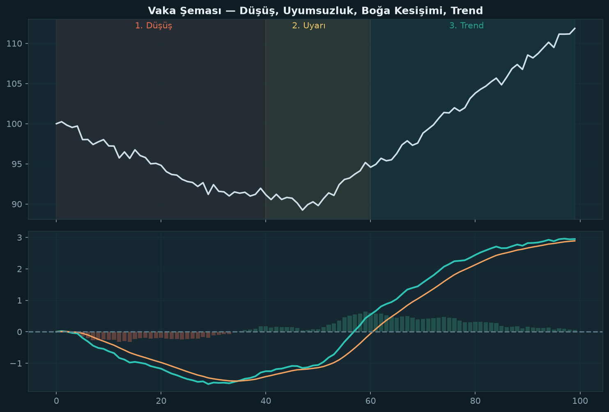
Adım 0: Bağlam — ne arıyoruz?
Varsayalım günlük grafikte bir hisse veya endeks birkaç haftadır düşüyor. Siz swing trader’sınız; tek günlük mumlarda MACD (12, 26, 9) kullanıyorsunuz. Planınız: düşüş trendinde agresif long açmamak; ancak momentum zayıflaması + teyitli dönüş sinyali varsa küçük riskle denemek. Bu plan önceden yazılıdır; grafikte değil, defterinizdedir.
Adım 1: Düşüş trendinin MACD okuması
Fiyat lower high (LH) ve lower low (LL) yapıyorsa yapı ayıdır. MACD panelinde çoğu zaman MACD çizgisi sıfırın altındadır; histogram negatif veya sıfıra yakındır. Bu aşamada “MACD negatif, short gideyim” demek trendle uyumlu olabilir ama geç olabilir; düşüşün ortasında agresif short, dibin dibinde agresif long aynı tuzaktır. Burada yapılacak şey: izlemek ve zorlamamak.
Deneyimli okuyucu bu aşamada şunu da not eder: histogram barları hâlâ derinleşiyorsa satış temposu artıyor demektir; zayıflama yoktur. “Düşüş bitti” demek için en azından histogramın küçülmeye başlamasını veya fiyatın yataylaşmasını beklemek gerekir. Sabır, bu vakanın ilk sınavıdır.
Adım 2: İlk dip — henüz işlem yok
Fiyat belirgin bir dip yapar. MACD de dip yapar; ikisi uyumlu. Bu, momentum hâlâ satış tarafında demektir. Yeni başlayanlar “ucuzladı” diye burada alır; planlı trader “yapı hâlâ ayı” der ve bekler. MACD’de boğa kesişimi yoksa, histogram hâlâ derin negatifse, işlem adayı değildir.
Adım 3: İkinci dip — boğa uyumsuzluğu adayı
Fiyat bir süre sonra ilk dipten daha düşük bir dip yapar (LL devam). Dikkat: MACD çizgisi veya histogram bu ikinci dipte ilk dipten daha yüksek bir dip yapıyorsa buna boğa uyumsuzluğu (regular bullish divergence) denir. Anlamı: fiyat daha kötü görünüyor ama satış temposu zayıflıyor olabilir.
Önemli: Uyumsuzluk tek başına alım değildir. Bu noktada yapılacaklar:
- Grafiğe “UYUMSUZLUK ADAYI” notu düşmek.
- Histogram barlarının küçülüp küçülmediğine bakmak (negatif ama sıfıra yaklaşma).
- Son swing yüksek seviyesini işaretlemek — kırılım teyit olabilir.
- Henüz pozisyon açmamak.
Adım 4: Histogram nefes alıyor mu?
İkinci dip civarında histogram barları hâlâ negatif olabilir ama mutlak değerleri küçülüyorsa (örneğin −0,8’den −0,3’e), satış temposu azalıyor demektir. Bu, boğa kesişiminden önce gelen erken uyarıdır. Agresif trader burada küçük deneme yapabilir; kitabın önerdiği orta yol: histogram iyileşmesini not et, kesişimi bekle.
Adım 5: Boğa kesişimi — planlı teyit
Birkaç gün sonra MACD çizgisi sinyal çizgisini aşağıdan yukarı keser. Bu boğa kesişimidir. Filtrelerimizi kontrol edelim:
- Uyumsuzluk var mıydı? Evet — bağlam güçlendi.
- Kesişim nerede? Hâlâ sıfırın altında olabilir; bu erken dönüş senaryosuna uyar, risk yüksektir.
- Fiyat yapısı? Son LH’nin üzerine çıkış veya en azından HL oluşumu aranır.
- Stop nerede? İkinci dip veya son swing dibinin altı — net ve ölçülebilir.
Tüm kutular işaretlenmeden “kesişim oldu, girdim” demek eksik analizdir. Orta seviye uygulama: kesişim + yapıda ilk HL + stop tanımlı ise küçük pozisyon; hedef önce son LH, sonra risk/ödül 1:2.
Adım 6: İşlem sonrası — MACD’yi takip etmek
Pozisyondaysanız MACD’yi her mum kapanışında paniklemek için izlemeyin. Planınızda çıkış kuralları vardır: stop, hedef, veya MACD ayı kesişimi + histogram zayıflaması. Fiyat hedefe giderken histogram pozitif ama küçülüyorsa bu “dikkat”tir; hemen çıkış şart değildir ama trailing stop düşünülebilir.
Adım 7: Bu vakadan çıkarımlar
- Sıra önemlidir: yapı → uyumsuzluk → histogram nefesi → kesişim → stop.
- Sıfır altı boğa kesişimi erken olabilir; pozisyon küçük olmalıdır.
- Uyumsuzluk olmadan gelen sıfır altı kesişimler daha zayıf adaydır.
- İşlem kaçırırsanız sorun değil; bir sonraki vaka gelecektir.
Alternatif senaryo: Uyumsuzluk var, kesişim gelmedi
Gerçek hayatta her boğa uyumsuzluğu boğa kesişimiyle bitmez. Fiyat ikinci dipten sonra yatay kalabilir; MACD tekrar aşağı dönebilir. Bu durumda “yanıldım” demek yerine “plan gereği işlem yoktu, doğru bekledim” dersiniz. İşlem yapmamak da planın parçasıdır. MACD okuyucusunun en zor becerisi bazen grafikten el çekmektir.
Alternatif senaryo: Kesişim geldi, yapı kırılmadı
Boğa kesişimi oluşur ama fiyat son lower high’nin üzerine çıkamaz. Bu zayıf teyittir. Agresif giriş yapanlar küçük bir sıçrama sonrası tekrar stop olur. Planlı trader ya hiç girmez ya da çok küçük pozisyonla “deneme” yapar ve yapı kırılımını asıl onay sayar. Vaka 1’in dersi: kesişim listede bir kutu; tek başına yeşil ışık değil.
Bölüm 4 · 4
Vaka çalışması 2: Range’de whipsaw felaketi ve dersler
İkinci vakamız daha acı verici ama öğretici: yatay bant (range) içinde MACD kesişimlerinin üst üste yanlış sinyal üretmesi. Birçok trader “MACD bana çalışmıyor” derken aslında trend olmayan piyasada trend göstergesi kullanmıştır. Bu vakayı adım adım okuyunca bir sonraki range’de ne yapacağınız netleşecek.
Sahne: Belirgin yatay bant
Fiyat 48,00 ile 52,00 arasında haftalardır gidip geliyor. Ne yükselen ne alçalan net trend yok. MACD panelinde çizgiler sıfır çizgisi etrafında sıkışmış; histogram küçük pozitif, küçük negatif barlar üretiyor. Bu görünüm “sessiz gürültü” bölgesidir.
Hata senaryosu: Her kesişime atlamak
Trader A her boğa kesişiminde long, her ayı kesişiminde short açar. İlk boğa kesişimi 49,50’den long: fiyat 51,00’e gider — güzel. Ayı kesişimi 50,80’den short: fiyat 49,20’ye iner — yine güzel. Üçüncü boğa kesişimi 50,50’den long: fiyat 51,80’e dokunur ama 50,00’in altına sarkar — stop. Dördüncü ayı kesişimi… Döngü devam eder. Birkaç hafta sonra komisyon ve küçük stoplar birikir; trader “MACD berbat” der. Oysa rejim yanlıştı.
MACD range’de neden yanıltır?
MACD, iki ortalamanın farkını ölçer. Range’de fiyat ortalamaların etrafında salınır; kısa ortalama uzun ortalamayı sık keser. Her kesim “momentum değişti” gibi görünür ama aslında bant sınırına ping-pong oynanıyordur. Gecikme de işin içine girer: kesişim çoğu zaman bant ortasına yakın oluşur; gerçek hareket bant kenarında biter.
Doğru okuma: Rejim filtresi
Aynı grafiği deneyimli trader şöyle okur:
- Üst sınır 52, alt sınır 48 — not al.
- MACD kesişimlerini işlem listesine almaz; sadece kenar davranışını izler.
- 48 yakınında boğa uyumsuzluğu + kesişim olursa “bant altı dönüş adayı” — küçük long, sıkı stop.
- 52 yakınında ayı uyumsuzluğu + kesişim olursa “bant üstü geri çekilme adayı” — küçük short veya long çıkışı.
- Bant ortasındaki kesişimler: atla.
Kırılım anı — range bittiğinde
Bir gün fiyat 52,00 üzerinde güçlü kapanış yapar; hacim artar. MACD sıfır üstüne çıkar, histogram büyür, boğa kesişimi trend yönünde gelir. İşte MACD’nin range’den çıkışta daha anlamlı olduğu andır. Önceki whipsaw’lar unutulmamalı; onlar range içiydi, bu trend adayıdır.
Bu vakadan altın dersler
- Range tespit edildiğinde MACD kesişim frekansını değil, konumunu filtreleyin.
- Bant ortası = işlem yasağı bölgesi düşünülebilir.
- Kırılım + MACD sıfır üstü + büyüyen histogram üçlüsü range sonrası daha güvenilirdir.
- Kayıpların bir kısmı “yanlış sinyal” değil, “yanlış piyasa türü”ndendir.
Trader B’nin farkı: Aynı grafik, farklı sonuç
Aynı range grafiğinde Trader B yalnızca iki işlem dener: bant altında uyumlu setup ve bant üstünde simetrik setup. Ortadaki altı kesişimi bilinçli olarak atlar. Komisyon ve stres azalır; kazanma oranı tek başına ölçüt olmasa da plan uyumu yüksektir. İkisi de aynı MACD’yi kullanır; biri göstergeye suç atar, diğeri rejimi filtreler. Siz hangi trader olmak istediğinizi bu vakada seçersiniz.
Range’den çıkış sonrası ilk 48 saat
Kırılım olduğunda MACD genelde geç tepki verir. İlk mumda FOMO ile girmek yerine: kırılım mumunun kapanışını bekleyin, histogram büyüyor mu bakın, geri çekilmede (pullback) destek–kırılım seviyesinde ikinci şans arayın. MTF’de günlük bias artık boğa veya ayıya dönmüş mü kontrol edin. Range felaketinden sonra trend partisine geçiş disiplin ister; “kaçırdım” hissi yine FOMO üretir.
Bölüm 4 · 5
Vaka çalışması 3: MTF ile trend devamı işlemi
Üçüncü vakada çoklu zaman dilimi (MTF) kullanarak trend devamı senaryosunu işleyeceğiz. Bu, kitabın başından beri önerilen “üst TF bias, alt TF giriş” mantığının somut uygulamasıdır. Kurgusal bir forex veya hisse senaryosu; mantık tüm piyasalarda aynıdır.
Üst zaman dilimi: Günlük grafik
Günlükte fiyat 200 günlük EMA üzerinde; yapı higher high (HH) ve higher low (HL) yapıyor. MACD sıfırın üstünde; son birkaç haftadır pozitif histogram. Bias: boğa. Bu katmanda işlem açmıyoruz; sadece “long aramaya izin var, short agresif değil” kararını veriyoruz.
Alt zaman dilimi: 4 saatlik grafik
Güçlü yükselişten sonra fiyat düzeltme yapıyor — birkaç kırmızı mum, MACD geçici olarak sinyal altına iniyor, histogram negatifleşiyor. Bu, trend devamı planı için fırsat penceresi olabilir; trend dönüşü değil, “nefes alma” olarak okunur (günlük bias boğa olduğu sürece).
Adım 1: Düzeltmenin derinliği
4 saatlikte fiyat önemli desteğe (önceki HL veya günlükteki 20 EMA) yaklaşıyor. MACD hâlâ sıfırın üstünde mi? Evet ise düzeltme, ana trende karşı değil, trend içi. Sıfır altına sarkmışsa işlem daha riskli; ya bekle ya da pozisyon küçült.
Adım 2: Histogram dönüşü
Destek bölgesinde histogram barları negatiften küçülmeye başlar; ardından pozitife geçer veya pozitifte büyümeye başlar. Bu, satış temposunun bittiğine işaret edebilir. Henüz kesişim olmayabilir; sabırlı trader histogram + destek birleşimini “hazırlık” sayar.
Adım 3: Boğa kesişimi — giriş
MACD çizgisi sinyali yukarı keser. Kontrol listesi:
- Günlük bias boğa — ✓
- 4H MACD sıfır üstü veya hemen üstüne dönüyor — ✓
- Giriş destek yakını — ✓
- Stop: destek altı veya son 4H swing low — ✓
- Hedef: önceki swing high veya riskin 2 katı — ✓
Giriş yapıldı. Bu “mükemmel dip” yakalama değil; trend devamına disiplinli katılımdır.
Adım 4: İşlem yönetimi
Fiyat yükselirken 4H histogram büyür; günlük MACD rahatlar. Kısmi kar al veya stop’u yükselt (örneğin son HL altına). Günlükte ayı uyumsuzluğu belirirse dikkat; 4H’de ayı kesişimi gelirse plan gereği çıkış değerlendirilir. Üst TF hâlâ boğa iken alt TF satış sinyali “düzeltme” olabilir; pozisyon tamamen kapatılır mı, küçültülür mü — bu işlem planında önceden yazılı olmalıdır.
MTF vakasının özeti
Çoklu zaman dilimi, MACD’ye “hangi yönde konuşma izni var” der. Günlük boğa iken 4 saatlik boğa kesişimi trend devamı adayıdır; günlük ayı iken aynı 4 saatlik kesişim karşı trend tuzağı olabilir. Bu vakada kazanan taraf, en çok sinyal gören değil, en çok filtre uygulayan taraftır.
Vaka 3’te işlem yapılmayan günler
Günlük bias boğa olsa bile her düzeltme alım fırsatı değildir. 4 saatlik MACD sıfır altına inip orada kalıyorsa, yapı lower high üretiyorsa, “trend devamı” hikâyesi zayıflar. Bu günlerde MTF çelişkisi not edilir ve işlem listesi boş bırakılır. Üç vakanın ortak dersi: MACD’nin en değerli sinyali bazen işlem yapmama kararıdır.
Üç vakayı yan yana karşılaştırma
| Vaka | Rejim | Ana MACD okuması | Tipik hata |
|---|---|---|---|
| 1 — Düşüş → dönüş | Düşüş sonu / dönüş adayı | Boğa uyumsuzluk + sıfır altı kesişim | Uyumsuzlukta erken, teyitsiz giriş |
| 2 — Range whipsaw | Yatay bant | Sık kesişim, küçük histogram | Her kesişime atlama |
| 3 — MTF devam | Güçlü trend + düzeltme | Üst TF boğa, alt TF kesişim | Alt TF’de üst TF’yi görmezden gelme |
Bölüm 4 · 6
Alıştırmalar: 20 soru (karışık seviye)
Aşağıdaki soruları cevaplamadan önce grafiğe bakmadan düşünmeye çalışın; sonra geçmiş grafiklerde doğrulayın. Cevap anahtarı bir sonraki bölümde. Seviyeler: (K) kolay, (O) orta, (İ) ileri.
Sorular
- (K) MACD çizgisi sinyal çizgisini yukarı kesti; histogram hâlâ negatif ama küçülüyor. Bu ne anlama gelebilir?
- (K) Sıfır çizgisinin altında boğa kesişimi ile üstünde boğa kesişimi arasındaki temel fark nedir?
- (O) Fiyat yeni tepe yapıyor, MACD daha düşük tepe yapıyor. Trend güçlü yükselişte. Hemen short açmak neden risklidir?
- (O) Range piyasasında MACD kesişimlerini filtrelemek için üç pratik kural yazın.
- (K) Histogram pozitif ve büyüyor. MACD çizgisi sinyalin altına inmiş olabilir mi? Neden?
- (İ) Günlük MACD ayı, 1 saatlik boğa kesişimi. “Trend dönüşü long” mantıklı mı? Argümanınızı iki cümleyle yazın.
- (O) Boğa uyumsuzluğu gördünüz; kesişim yok. Hangi teyitleri beklersiniz?
- (K) 12-26-9 ayarını her kayıptan sonra değiştirmek neden kötü fikirdir?
- (O) MACD sıfır üstünde; fiyat lower high yapmaya başladı. Sadece MACD’ye bakarak long tutmak neden tehlikeli olabilir?
- (İ) Volatil haber mumundan sonra boğa kesişimi geldi. Ekstra hangi iki filtreyi uygularsınız?
- (K) FOMO ile MACD kesişimini beklemeden girmek hangi psikolojik tuzaktır?
- (O) Trailing stop kullanırken histogram küçülmesi tek başına çıkış nedeni olmalı mı? Gerekçeniz?
- (O) İki ardışık dip: fiyat LL, MACD HL. İkinci dipte histogram −0,5’ten −0,2’ye geldi. Bu vaka çalışması 1’de hangi adıma karşılık gelir?
- (İ) Ayı trendinde sıfır altı ayı kesişimi ile sıfır üstü ayı kesişimi hangi senaryolara daha uygundur?
- (K) MACD gecikmeli bir göstergedir. Bu, erken giriş mi geç giriş mi eğilimi yaratır?
- (O) İşlem günlüğünde “duygu” sütunu neden tutulmalıdır? Bir örnek duygu yazın.
- (İ) Bant kırılımından sonra MACD sıfır altından üste çıktı ama histogram küçük. Ne bekler, ne yaparsınız?
- (O) RSI aşırı alımda, MACD boğa kesişimi verdi. Tek başına long için ne eksik?
- (K) “MACD’ye bağlanmamak” ne demektir? Kendi cümlelerinizle yazın.
- (İ) Üç ardışık kayıp; hepsi planlı işlemler. Dördüncü sinyal plana uyuyor. Pozisyon boyutunu iki katına çıkarmak uygun mu? Neden?
Alıştırma seti B — kendi kendine sözlü sınav
Yukarıdaki 20 soruyu bitirdikten sonra, grafiğe bakmadan şu mini senaryoları anlatın (sesli veya yazılı): (a) Günlük boğa, 4H düzeltme, histogram küçülüp büyüyor — ne ararsınız? (b) Range ortasında boğa kesişimi — işlem açar mısınız? (c) Ayı uyumsuzluk + henüz kırılım yok — ne yaparsınız? Cevaplarınız “kesişim”, “filtre”, “bekle”, “stop” kelimelerini içermiyorsa bölümü tekrar okuyun.
Bölüm 4 · 7
Alıştırmaların cevap anahtarı
Aşağıda kısa cevaplar var. Sizin cevabınız aynı kelimelerle olmak zorunda değil; mantık örtüşmeli. Part 1–3 alıştırmaları için de genel ipuçları ekledik.
Part 4 cevapları
- Boğa kesişimi gelmiş veya gelmek üzere; satış temposu zayıflıyor. Histogram negatiften sıfıra yaklaşıyor.
- Sıfır altı: erken dönüş adayı, daha riskli. Sıfır üstü: trend devamı / ana bias ile uyumlu, genelde daha güvenilir bağlam.
- Ayı uyumsuzluk güçlü trendde uzun süre “erken” kalabilir; trendle savaş riski yüksek. Teyit ve yapı kırılımı gerekir.
- Örnek: bant ortası kesişimlerini atla; sadece bant kenarında işlem; kırılım bekle.
- Hayır. Histogram = MACD − sinyal; pozitif ve büyüyorsa MACD sinyalin üstündedir.
- Genelde zayıf. Üst TF ayı iken alt TF long karşı trend; küçük pozisyon veya atla.
- Boğa kesişimi, fiyat HL veya direnç kırılımı, histogram pozitife dönüş.
- İstatistik birikmez; curve fitting; duygusal tepki olur.
- Fiyat yapısı bozuluyor; MACD gecikmeli pozitif kalabilir.
- İşlemi ertele veya boyutu küçült; volatilite normale dönene kadar bekle; yapı teyidi.
- FOMO — kaçırma korkusu, plan dışı erken giriş.
- Hayır tek başına; yavaşlama uyarısıdır. Stop veya kısmi çıkış planıyla birleştirilir.
- Adım 3–4: boğa uyumsuzluğu + histogram nefes alması.
- Sıfır altı ayı: düşüş devamı. Sıfır üstü ayı: yükselişte düzeltme / erken uyarı.
- Genelde geç giriş; hareketin bir kısmı kaçmış olur.
- Psikolojik kalıpları görmek için; örnek: “kayıp sonrası öfke”.
- Histogram büyümesini bekle; küçük pozisyon veya ikinci teyit mumu; sahte kırılım riski.
- Fiyat yapısı, trend bias, seviye; RSI tek başına yeterli değil.
- Göstergeyi tek gerçek sanmamak; plan ve filtre öncelikli.
- Hayır. Kayıp serisinde boyut küçültülür veya mola verilir; martingale tehlikelidir.
Part 1–3 alıştırmaları — genel yanıt ipuçları
Önceki bölümlerdeki sorular formül, anatomi ve temel okuma üzerindeyse şu çerçeveyi kullanın. Aşağıdaki ipuçları, parça parça yayınlanan içeriklerdeki alıştırmalar için de geçerlidir; cevap anahtarı elinizde yoksa bile doğru düşünme yolunu gösterir.
- Formül soruları: MACD = EMA12 − EMA26; sinyal = EMA9(MACD); histogram = fark. Sayısal örnekte önce EMA farkını, sonra sinyal ve histogramı ayrı hesaplayın.
- Kesişim soruları: Yönü (boğa/ayı) ve sıfıra göre konumu mutlaka belirtin. “Kesişim var” tek başına yeterli cevap değildir.
- Histogram soruları: İşaret (pozitif/negatif) ve boyut değişimi (büyüme/küçülme) ayrı ayrı. “Histogram yeşil” demek yetmez; büyüyor mu küçülüyor mu?
- Uyumsuzluk soruları: Fiyat tepe/dip dizisi ile MACD tepe/dip dizisini karşılaştırın; teyit şart. Gizli uyumsuzluk ileri seviye ise trend devamı bağlamında düşünün.
- MTF soruları: Üst TF = bias, alt TF = zamanlama; çelişkide üst TF ağır basar veya pozisyon küçülür.
- Strateji soruları: Giriş, stop, hedef üçlüsü eksik cevap sayılır. Risk yüzdesi ve rejim notu artı puan.
- Psikoloji soruları: Duygu adı + plan dışı davranış + düzeltme kuralı üçlüsü aranır. “Sakin ol” yeterli değil; somut kural yazın.
Alıştırmalarda yanlış cevapladığınız soruları işaretleyin; bir hafta sonra aynı soruları grafiğe bakarak tekrar çözün. İkinci turda doğru oranınız artıyorsa öğrenme gerçekleşmiş demektir.
Bölüm 4 · 8
Sık sorulan sorular (SSS)
Yıllar içinde MACD öğretirken en çok duyulan soruları derledik. Cevaplar kısa ve uygulamalı tutuldu.
MACD temel
S1: MACD ile RSI aynı şeyi mi ölçer?
Hayır. RSI kapanışların göreli gücünü 0–100 arasında ölçer; aşırı alım/satım bölgeleri vardır.
MACD iki EMA farkıdır; sıfır çizgisi etrafında serbest dolaşır. İkisi momentum hakkında konuşur ama farklı diller kullanır.
S2: Hangi zaman diliminde MACD kullanmalıyım?
İşlem tarzınıza bağlı. Swing için günlük + 4 saat yaygındır. Gün içi için 15 dk / 1 saat kombinasyonu kullanılır.
Önemli olan çok dilim değil, tutarlı plan ve üst-alt ilişkisidir.
S3: MACD kapanışta mı hesaplanır?
Çoğu platform kapanış (close) fiyatından hesaplar. Mum kapanmadan MACD değişir; canlı işlemde son mumu
“kesin sinyal” sanmak yanıltıcı olabilir. Kapanış sonrası karar daha tutarlıdır.
Sinyal ve filtre
S4: Boğa kesişimi geldi ama fiyat düşüyor. Ne yapmalı?
Önce yapıya bakın: kesişim destekte mi, yoksa düşüş ortasında mı? Sıfır altı zayıf kesişimler sık başarısız olur.
Planınız teyit istiyorsa bekleyin; “kesişim oldu” tek başına yeterli değildir.
S5: Histogram pozitif ama küçülüyor; long tutmalı mıyım?
Bu momentum yavaşlamasıdır. Tek başına çıkış emri değildir; stop yükseltme veya kısmi kar düşünülebilir.
Ayı kesişimi veya yapı bozulması gelirse plan gereği çıkın.
S6: Uyumsuzluk kaç bar sürmeli?
Kesin bar sayısı yok. Birkaç günlük belirgin tepe/dip farkı, bir saatlik “mini” uyumsuzluktan güçlüdür.
Önemli olan süre değil, yapısal netlik ve sonrası teyittir.
S7: Sıfır çizgisi kesişimi mi, sinyal kesişimi mi daha güçlü?
Sıfır kesişimi daha “ağır” ve seyrek trend sinyalidir; sinyal kesişimi daha sık ve erkendir.
İkisi de gecikmelidir; bağlam belirler.
Ayarlar ve platform
S8: 12-26-9 dışında hangi ayar popüler?
8-17-9 (daha hızlı), 5-35-5 (daha yavaş trend) gibi varyasyonlar vardır. Öğrenirken varsayılanı koruyun;
değiştirirseniz uzun süre sabit kalın.
S9: TradingView ile MetaTrader MACD aynı mı?
Mantık aynı; küçük farklar kaynak fiyat (close/hlc3) veya EMA başlangıç yönteminden gelebilir.
Aynı platformda tutarlı kalın; platformlar arası milimetrik fark normaldir.
Psikoloji ve pratik
S10: Her gün işlem bulamıyorum. Sorun mu?
Hayır. Kaliteli MACD işlemleri seyrektir. Her gün işlem aramak overtrading üretir. Planlı beklemek beceridir.
S11: Demo’da çalışıyor, gerçekte çalışmıyor. Neden?
Psikoloji, kayma (slippage), komisyon ve pozisyon boyutu farkı. Demo disiplin antrenmanıdır; gerçek hesapta boyutu küçük tutun.
S12: MACD’ye güvenim kalmadı. Ne yapmalı?
Bir ay işlem günlüğü tutun: kaç sinyal filtreden geçti, kaçı plan dışıydı? Çoğu zaman sorun gösterge değil,
filtresiz kullanımdır. Gerekirse bir süre sadece gözlem moduna geçin.
Risk ve kombinasyon
S13: Stop mesafesi çok geniş; MACD sinyali geç kalıyor.
Daha düşük zaman diliminde giriş arayın (MTF) veya pozisyon boyutunu stop genişliğine göre küçültün.
Stopu mantıksız daraltmak MACD sorununu çözmez, erken stop olur.
S14: MACD ile hacim nasıl birleştirilir?
Kırılım veya kesişim gününde hacim ortalamanın üstündeyse teyit güçlenir. Düşük hacimli kesişimlere şüpheyle yaklaşın.
S15: Kriptoda MACD farklı mı çalışır?
Mantık aynı; 7/24 piyasa ve yüksek volatilite nedeniyle whipsaw daha sık olabilir. Zaman dilimini büyütmek veya
pozisyonu küçültmek sık tercih edilir.
S16: Tek bir “en iyi” MACD stratejisi var mı?
Hayır. Piyasa rejimi, enstrüman ve kişilik farklıdır. Bu kitap iskelet verir; sizin test ve günlüğünüz stratejiyi kişiselleştirir.
S17: MACD’yi tek panelde mi, fiyat üstünde mi kullanmalıyım?
Gelenek ve okunabilirlik için alt panel yaygındır. Önemli olan tutarlılık; her gün aynı düzeni kullanın ki göz alışsın.
S18: Gece boyunca açık pozisyon + MACD ayı kesişimi uyandırdı. Ne yapmalı?
Planınızda “gece sinyalinde ne yapılır” yazılı olmalıdır. Yoksa panik satış veya görmezden gelme olur. Önceden kural koyun: örn. sadece kapanış sonrası değerlendir.
S19: Hisse mi kripto mu MACD için daha uygun?
Gösterge enstrümandan bağımsızdır; likidite ve volatilite fark yaratır. İnce likiditede slippage, yüksek volatilitede whipsaw artar. Öğrenirken likit ve tanıdık bir enstrüman seçin.
S20: Kitabı bitirdim; ilk gerçek adım ne olmalı?
7 günlük planı yarın başlatın. İşlem değil gözlem. Bir hafta sonra günlük şablonda ilk satırı doldurun. Acele işlem, acele öğrenmenin düşmanıdır.
Bölüm 4 · 9
Günlük şablon, 7 gün ve 30 gün planı
Bilgi ancak tekrarla alışkanlığa dönüşür. Aşağıda her işlem günü doldurabileceğiniz şablon, ilk hafta için yoğunlaştırılmış program ve bir aylık öğrenme yol haritası var. Hedef: MACD’yi “bazen açtığım çizgi” olmaktan çıkarıp süreç haline getirmek.
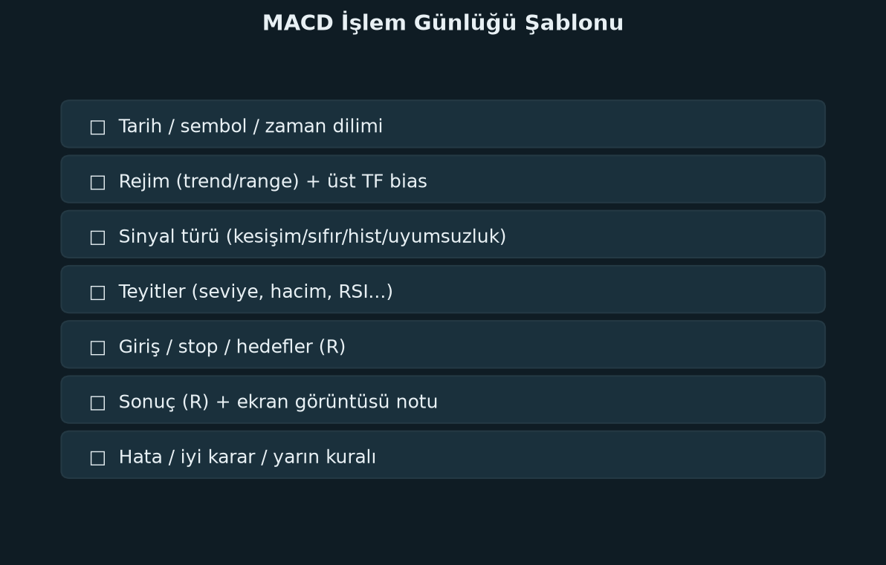
Günlük şablon (kopyalayıp kullanın)
| Alan | Soru / not |
|---|---|
| Tarih / enstrüman | Ne incelendi? |
| Üst TF bias | MACD sıfırın neresinde? Yapı HH/HL mi LH/LL mi? |
| Piyasa rejimi | Trend / range / kırılım sonrası? |
| Sinyal türü | Kesişim, uyumsuzluk, histogram, sıfır kesişimi? |
| Plan uyumu | Evet / hayır — hayırsa işlem yok |
| Giriş / stop / hedef | Sayısal ve net |
| Risk % | Hesabın yüzde kaçı riskte? |
| Sonuç | R, kâr/zarar, plana uygunluk |
| Duygu | FOMO, öfke, sakin, sıkıcı rutin… |
| Ders | Bir cümle: ne öğrendim? |
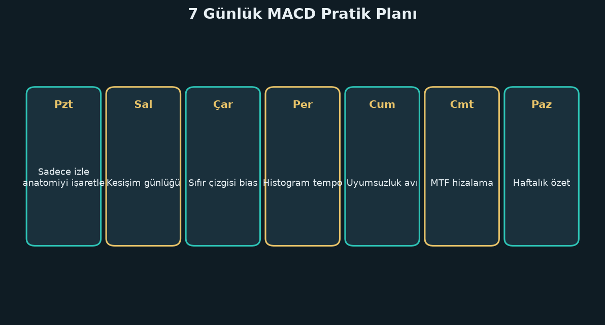
7 günlük plan
İlk hafta işlem hacmini bilinçli olarak düşük tutun. Amaç “para kazanmak” değil, gözlem kası inşa etmektir. Her gün sonunda en az üç cümlelik not: bugün MACD ne söyledi, ben ne yaptım, yarın neyi farklı okuyacağım.
- Gün 1 — Gözlem: İşlem yok. 5 enstrümanda günlük MACD: sıfır üstü/altı notu.
- Gün 2 — Kesişim avı: Son 3 ayda 10 boğa/ayı kesişimi işaretle; kaçı trend yönündeydi?
- Gün 3 — Histogram: Büyüyen/küçülen bar örnekleri bul; kesişimden kaç bar önce uyarı verdi?
- Gün 4 — Uyumsuzluk: 3 boğa, 3 ayı uyumsuzluğu bul; hangileri teyit aldı?
- Gün 5 — Range testi: Yatay bant bul; ortadaki kesişimleri say — işlem açsaydın ne olurdu?
- Gün 6 — MTF: Günlük bias + 4 saat giriş senaryosu yazılı kurgula (işlem şart değil).
- Gün 7 — Günlük şablon: Haftayı şablonda özetle; en büyük hata ve en iyi içgörü.
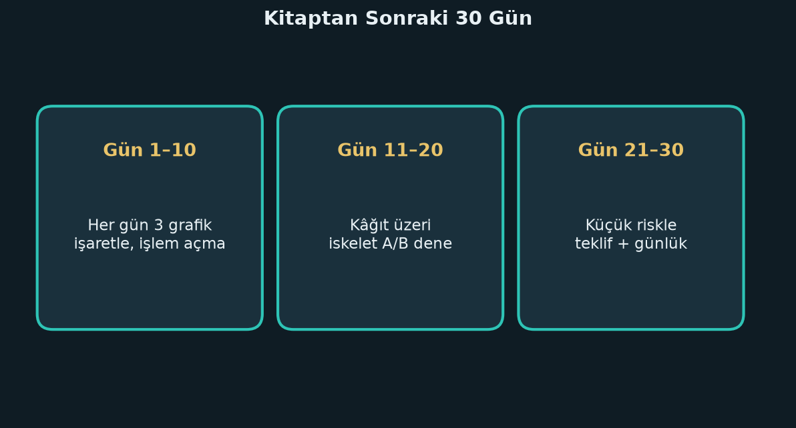
30 günlük plan (haftalık özet)
- Hafta 1 (Gün 1–7): Yukarıdaki 7 gün + günlük şablon alışkanlığı.
- Hafta 2: Tek strateji iskeleti seç (trend devamı önerilir). Sadece demo/kâğıt; en az 5 planlı işlem veya 5 “işlem yapmadım çünkü…” kaydı.
- Hafta 3: Vaka 1–3’ü geçmiş grafiklerde 3’er kez ara. Mitler bölümünü okuyup kendi geçmiş hatalarınızla eşleştirin.
- Hafta 4: Haftalık gözden geçirme: kazanma oranı değil, plan uyumu oranı. Gerekirse pozisyon boyutunu küçültün; disiplini büyütün.
Haftalık gözden geçirme soruları (30 gün planına ek)
Her Pazar akşamı şu beş soruyu yanıtlayın: (1) Bu hafta kaç MACD sinyali planıma uygundu? (2) Kaçını işleme çevirdim, kaçını bilinçli atladım? (3) En pahalı duygu hangisiydi? (4) Range mi trend mi ağırlıktaydı? (5) Gelecek hafta tek davranış değişikliğim ne? Bu beş soru, 30 günlük planın görünmez omurgasıdır; grafikten bağımsız öğrenmeyi ölçer.
Bölüm 4 · 10
Büyük özet, geniş sözlük ve kapanış
Sinyalin Ritmi boyunca MACD’yi bir bütün olarak ele aldık: ne ölçtüğünü, nasıl hesaplandığını, kesişim ve sıfır çizgisini, histogramın temposunu, uyumsuzluğun uyarısını, ayar ve zaman dilimlerini, strateji iskeletlerini ve son olarak psikoloji ile pratiği. Bu son bölümde her şeyi bir araya getirip geniş bir sözlükle kitabı kapatıyoruz.
Büyük özet — tek bakışta MACD
- MACD nedir? EMA12 − EMA26 farkı; momentum ve trend eğiliminin ölçüsü.
- Üç parça: MACD çizgisi (hikâye), sinyal çizgisi (tetik), histogram (tempo).
- Kesişim: Boğa/ayı sinyal kesişimi — adaydır, emir değil.
- Sıfır çizgisi: Boğa/ayı bias haritası; sıfır kesişimi ağır trend sinyali.
- Histogram: Mesafe ve hızlanma; kesişimden önce uyarı verebilir.
- Uyumsuzluk: Fiyat–MACD ayrışması; erken uyarı, teyit şart.
- Filtreler: Piyasa rejimi, üst TF bias, fiyat yapısı, seviye, hacim.
- MTF: Üst zaman dilimi yön, alt zaman dilimi giriş.
- Psikoloji: FOMO, bağlanma, disiplin — teknik kadar önemli.
- Süreç: Günlük şablon, 7/30 gün plan, işlem günlüğü, tekrar.
Geniş sözlük (30+ terim)
Aşağıdaki sözlük kitap boyunca geçen terimleri tek yerde toplar. İlk okumada ezberlemek zorunda değilsiniz; işlem günlüğünde takıldığınız kelimeleri buradan arayın. Terimler alfabetik değil, öğrenme sırasına yakın dizildi. İhtiyaç halinde tarayıcınızın sayfada bul özelliğiyle arama yapabilirsiniz.
- MACD
- Moving Average Convergence Divergence; iki EMA farkına dayalı gösterge.
- EMA (Üssel hareketli ortalama)
- Son fiyatlara daha fazla ağırlık veren ortalama; MACD’nin temel yapı taşı.
- SMA
- Basit hareketli ortalama; MACD standartında değil, EMA kullanılır.
- Sinyal çizgisi
- MACD çizgisinin 9 periyotluk EMA’sı; kesişim tetikleyicisi.
- Histogram
- MACD − sinyal; momentum temposu ve mesafe göstergesi.
- Boğa kesişimi (bullish crossover)
- MACD’nin sinyal çizgisini aşağıdan yukarı kesmesi.
- Ayı kesişimi (bearish crossover)
- MACD’nin sinyal çizgisini yukarıdan aşağı kesmesi.
- Sıfır çizgisi
- MACD = 0 seviyesi; EMA12 ile EMA26’nın eşitlendiği mantıksal sınır.
- Yakınsama (convergence)
- İki ortalamanın birbirine yaklaşması; MACD sıfıra çekilir.
- Iraksama (momentum anlamında)
- Ortalamaların uzaklaşması; MACD mutlak değeri büyür.
- Uyumsuzluk (divergence)
- Fiyat ile MACD tepe/dip yönünün ayrışması.
- Boğa uyumsuzluğu
- Fiyat LL, MACD HL — satış momentumu zayıflayabilir.
- Ayı uyumsuzluğu
- Fiyat HH, MACD LH — alış momentumu zayıflayabilir.
- Gizli uyumsuzluk (hidden divergence)
- Trend devamı senaryolarında görülen uyumsuzluk türü; ileri konu.
- Lag (gecikme)
- Ortalama tabanlı göstergelerin fiyata geç tepki vermesi.
- Whipsaw (kırbaç)
- Yatay piyasada üst üste yanlış kesişim sinyalleri.
- Range (yatay bant)
- Belirgin üst-alt sınır arasında sıkışan fiyat davranışı.
- Bias (eğilim)
- Belirli dönem için tercih edilen yön; örn. günlük MACD sıfır üstü = boğa bias.
- MTF (çoklu zaman dilimi)
- Birden fazla periyotta analiz; üst TF bias, alt TF giriş.
- HH / HL / LH / LL
- Higher high, higher low, lower high, lower low — fiyat yapısı terimleri.
- Swing
- Günler–haftalar süren orta vadeli hareket veya işlem tarzı.
- Curve fitting
- Ayarları geçmişe mükemmel uydurma; gelecekte bozulma riski.
- FOMO
- Kaçırma korkusu; plan dışı işlem tetikleyicisi.
- Overtrading
- Aşırı işlem; çoğu MACD gürültüsünden kaynaklanır.
- Stop loss
- Zararı sınırlayan çıkış emri; MACD’den bağımsız zorunlu unsur.
- Risk/ödül (R:R)
- Potansiyel kazanç ile riskin oranı; örn. 1:2.
- Teyit (confirmation)
- Sinyali doğrulayan ek kanıt: yapı kırılımı, hacim, ikinci kesişim.
- Destek / direnç
- Fiyatın tepki verdiği bölgeler; MACD sinyalinin konumunu güçlendirir.
- Volatilite
- Fiyat oynaklığı; yüksek volatilitede MACD gecikmesi belirginleşir.
- Pullback (düzeltme)
- Trend yönünde geçici geri çekilme; MTF giriş fırsatı olabilir.
- Trailing stop
- Kazançla birlikte yukarı taşınan stop; histogram yavaşlamasında düşünülür.
- İşlem günlüğü (trading journal)
- Sinyal, plan, duygu ve sonuç kaydı; öğrenmenin kalıcı aracı.
- 12-26-9
- MACD varsayılan periyotları: hızlı EMA, yavaş EMA, sinyal EMA.
- Osilatör
- Belirli sınırlar arasında salınan gösterge; MACD tam saf osilatör değildir.
- Momentum
- Fiyat hareketinin hızı ve gücü; MACD’nin ölçtüğü ana kavram.
Dört bölümlük yolculuğun özeti
Part 1’de MACD’nin dilini öğrendiniz: anatomi, formül, temel kesişim. Part 2’de okumayı derinleştirdiniz: sıfır çizgisi, histogram, uyumsuzluk. Part 3’te bağlama taşıdınız: ayarlar, zaman dilimleri, strateji iskeletleri, diğer araçlarla birlikte kullanım. Part 4’te — bu bölümde — insan tarafını ve sahayı gördünüz: psikoloji, mitler, üç vaka, alıştırmalar, planlar. Artık “MACD nedir?” sorusundan “MACD bu rejimde ne der ve ben ne yaparım?” sorusuna geçebilirsiniz.
Kapanış: Sinyalin ritmini duymak
Bu kitabı son sayfasına getirdiğinizde elinizde bir sihirli formül yoktur; elinizde bir dil var. MACD size piyasanın temposunu anlatır — hızlanıyor mu, yavaşlıyor mu, trend mi, nefes mi, yorgunluk mu? İyi okuyucu her yeşil ve kırmızı çizgiye atlamaz; önce sessizliği dinler, sonra planla konuşur.
Önünüzdeki yol net: gözlem, kayıt, küçük test, gözden geçirme, tekrar. Bir ay sonra bugünkü halinize döndüğünüzde MACD paneli aynı görünecek; ama siz farklı bakacaksınız. Filtre koyacak, FOMO’yu tanıyacak, range’de sabredip trendde cesaret edeceksiniz — ölçülü cesaret, planlı risk ile.
Piyasa her zaman orada olacak. Hesabınızın her gün orada olması şart değil. Ritmi duyun; doğru adımı doğru anda atın. Bazen en iyi işlem, yapılmayan işlemdir.
Gerald Appel MACD’yi momentumu görünür kılmak için tasarladı; Thomas Aspray histogramla tempoyu işaret etti. Onlar size gösterge bıraktı; disiplin ve plan sizin katkınız. Bu kitap bir son değil, tekrarlı pratiğin başlangıcıdır. Defterinizi açın, grafiği sakin açın, şablonu doldurun. Sinyalin ritmi orada — acele etmeden dinleyin.
Sinyalin Ritmi — MACD'yi Sade Anlatım eğitim materyalidir; finansal tavsiye değildir. Gerçek parayla işlem yapmadan önce demo ve kâğıt üzerinde bol pratik yapın. Başarılar — disiplinli ve sakin okumalar dileriz.